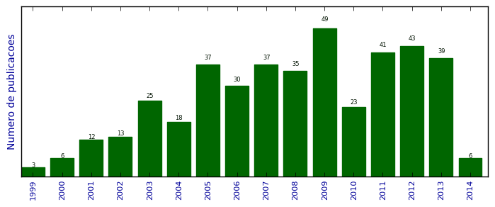

UFSM - Análise do Lattes
Artigos completos publicados em periódicos

Número total de itens: 417
(A1: 0, A2: 9, B1: 19, B2: 116, B3: 24, B4: 8, B5: 20, C: 200, Qualis não identificado: 21)
Legenda Qualis:
- Publicação para a qual o nome exato do Qualis foi identificado: Qualis <estrato>
- Publicação para a qual um nome similar (não exato) do Qualis foi identificado: Qualis <estrato> (nome similar)
- Publicação para a qual nenhum nome do Qualis foi identificado: Qualis não identificado (nome usado na busca)
2014
| 1. | BOLIGON, A. A. ; PIANA, M. ; Schwanz, T. G. ; PEREIRA, R. P. ; ROCHA, J. B. T. ; ATHAYDE, M. L. ; ATHAYDE, M. L.. Chromatographic analysis and antioxidant capacity of Tabernaemontana catharinensis.. Natural Product Communications. v. 9, p. 61-64, 2014. [ citações Google Scholar | citações Microsoft Acadêmico | busca Google ] Qualis: B4 |
| 2. | Colpo, Elisângela ; DALTON D.A. VILANOVA, CARLOS ; REETZ, LUIZ GUSTAVO B. ; DUARTE, MARTA M.M.F. ; FARIAS, IRIA LUIZA G. ; MEINERZ, DAIANE F. ; MARIANO, DOUGLAS O.C. ; VENDRUSCULO, RAQUEL G. ; BOLIGON, ALINE A. ; Dalla Corte, Cristiane L. ; WAGNER, ROGER ; ATHAYDE, MARGARETH L. ; DA ROCHA, JOÃO BATISTA T.. Brazilian nut consumption by healthy volunteers improves inflammatory parameters. Nutrition (Burbank, Los Angeles County, Calif.). v. 30, p. 459-465, 2014.  [ citações Google Scholar | citações Microsoft Acadêmico | busca Google ] Qualis: C |
| 3. | HASSAN, WASEEM ; SCHIAR, VIVIANE PATRÍCIA P. ; dos Santos, Danúbia B. ; DUARTE, MARTA M.M.F. ; VARGAS, FABRÍCIO ; NOGUEIRA, Cristina W. ; ZENI, Gilson ; BRAGA, ANTONIO.L. ; DA ROCHA, JOÃO B.T.. Addition of butoxycarbonyl group to phenylalanine derived chalcogenide increases the toxic potential: Importance of non-bonding nitrogen interaction. Chemico-Biological Interactions (Print). v. 207, p. 24-25, 2014. [ citações Google Scholar | citações Microsoft Acadêmico | busca Google ] Qualis: B2 (Chemico Biological Interactions (Print)) |
| 4. | Ibrahim, Mohammad ; HASSAN, WASEEM ; Anwar, Javed ; Deobald, Anna Maria ; KAMDEM, JEAN PAUL ; DO, SOUZA ; Rocha, Joao Batista Teixeira. 1-(2-(2-(2-(1-aminoethyl) phenyl)diselanyl)phenyl)ethanamine: An amino Organoselenium compound with interesting antioxidant profile. Toxicology in Vitro. v. 2014, p. 524-530, 2014. [ citações Google Scholar | citações Microsoft Acadêmico | busca Google ] Qualis: B2 |
| 5. | Pereira, Romaiana Picada ; ATHAYDE, M. L. ; BOLIGON, Aline Augusti ; Apel, A. S. ; FACHINETTO, R. ; CERON, C. S. ; TANUS-SANTOS, J. E. ; ATHAYDE, M.L. ; ROCHA, J. B. T.. Chemical composition, antioxidant and anticholinesterase activity of Melissa officinalis. Industrial Crops and Products (Print). v. 53, p. 34-45, 2014. [ citações Google Scholar | citações Microsoft Acadêmico | busca Google ] Qualis: C |
| 6. | STEFANELLO, NAIARA ; Schmatz, Roberta ; PEREIRA, LUCIANE BELMONTE ; RUBIN, MARIBEL A. ; Rocha, João Batista Teixeira ; FACCO, GRAZIELA ; Pereira, Maria Ester ; MAZZANTI, CINTHIA MELAZZO DE ANDRADE ; PASSAMONTI, SABINA ; RODRIGUES, MARÍLIA VALVASSORI ; CARVALHO, FABIANO BARBOSA ; ROSA, MICHELLE MELGAREJO ; GUTIERRES, JESSIE MARTINS ; CARDOSO, ANDRÉIA MACHADO ; MORSCH, Vera Maria ; SCHETINGER, MARIA ROSA CHITOLINA. Effects of chlorogenic acid, caffeine, and coffee on behavioral and biochemical parameters of diabetic rats. Molecular and Cellular Biochemistry. v. 388, p. 277-286, 2014. [ citações Google Scholar | citações Microsoft Acadêmico | busca Google ] Qualis: B3 |
2013
| 1. | ARARUNA, M. K. ; SANTOS, K. K. A. ; Costa, José Galberto Martins ; COUTINHO, H. D. M. ; Melo Coutinho, H.D. ; BOLIGON, A. A. ; STEFANELLO, S. T. ; ATHAYDE, M. L. ; SARAIVA, R. A. ; ROCHA, J. B. T. ; KERNTOPF, M.R. ; Menezes, Irwin A.. Phenolic composition and in vitro activity of the Brazilian fruit tree Caryocar coriaceum Wittm.. EUR J INTEGR MED. v. 5, p. 178-183, 2013. [ citações Google Scholar | citações Microsoft Acadêmico | busca Google ] Qualis: B2 |
| 2. | BEM, A.F. ; RIBEIRO, MARINEI CRISTINA PEREIRA ; ÁVILA, DAIANA SILVA ; SCHIAR, VIVIANE PATRÍCIA PIRES ; SANTOS, DANÚBIA BONFANTI DOS ; MEINERZ, DAINE F. ; DUARTE, MARTA MEDEIROS FRESCURA ; MONTEIRO, ROGER ; PUNTEL, ROBSON ; DE BEM, ANDREZA FABIO ; HASSAN, WASEEM ; DE VARGAS BARBOSA, NILDA BERENICE ; ROCHA, J. B. T.. Diphenyl diselenide supplementation reduces biochemical alterations associated with oxidative stress in rats fed with fructose and hydrochlorothiazide. Chemico-Biological Interactions (Print). v. 00, p. in press, 2013. [ citações Google Scholar | citações Microsoft Acadêmico | busca Google ] Qualis: B2 (Chemico Biological Interactions (Print)) |
| 3. | Bem, Andreza Fabro de ; FIUZA, BIANCA ; CALCERRADA, PABLO ; BRITO, PAULA M. ; PELUFFO, GONZALO ; DINIS, TERESA C.P. ; TRUJILLO, MADIA ; Rocha, João B.T. ; RADI, RAFAEL ; ALMEIDA, LEONOR M.. Protective effect of diphenyl diselenide against peroxynitrite-mediated endothelial cell death: A comparison with ebselen. Nitric Oxide (Print). v. 31, p. 20-30, 2013. [ citações Google Scholar | citações Microsoft Acadêmico | busca Google ] Qualis: B2 |
| 4. | Boligon, Aline Augusti ; DE FREITAS, ROBSON BORBA ; DE BRUM, THIELE FACCIM ; PIANA, MARIANA ; BELKE, BIANCA VARGAS ; DA ROCHA, JOÃO BATISTA TEIXEIRA ; Athayde, Margareth Linde. Phytochemical constituents and invitro antioxidant capacity of Tabernaemontana catharinensis A. DC. Free Radicals and Antioxidants. v. 3, p. 77-80, 2013. [ citações Google Scholar | citações Microsoft Acadêmico | busca Google ] Qualis: C (Free Radicals and Antioxidants) |
| 5. | CAERAN BUENO, DIONES ; Meinerz, Daiane Francine ; Allebrandt, Josiane ; WACZUK, EMILY PANSERA ; Dos Santos, Danúbia Bonfanti ; MARIANO, DOUGLAS OSCAR CEOLIN ; Rocha, João Batista Teixeira. Cytotoxicity and Genotoxicity Evaluation of Organochalcogens in Human Leucocytes: A Comparative Study between Ebselen, Diphenyl Diselenide, and Diphenyl Ditelluride. BioMed Research International. v. 2013, p. 1-6, 2013. [ citações Google Scholar | citações Microsoft Acadêmico | busca Google ] Qualis: B2 (Food Research International) |
| 6. | Colpo, Elisângela ; VILANOVA, CARLOS DALTON DE AVILA ; BRENNER REETZ, LUIZ GUSTAVO ; MEDEIROS FRESCURA DUARTE, MARTA MARIA ; FARIAS, IRIA LUIZA GOMES ; IRINEU MULLER, EDSON ; MULLER, ALINE LIMA HERMES ; MORAES FLORES, ERICO MARLON ; WAGNER, ROGER ; DA ROCHA, JOÃO BATISTA TEIXEIRA. A Single Consumption of High Amounts of the Brazil Nuts Improves Lipid Profile of Healthy Volunteers. Journal of Nutrition and Metabolism. v. 2013, p. 1-7, 2013. [ citações Google Scholar | citações Microsoft Acadêmico | busca Google ] Qualis: C |
| 7. | DALLA CORTE, C. L. ; DALLA CORTE, CRISTIANE L. ; DE CARVALHO, NÉLSON R. ; AMARAL, GUILHERME P. ; PUNTEL, GUSTAVO O. ; SILVA, LUIZ FERNANDO A. ; RETAMOSO, LEANDRO T. ; ROYES, LUIZ FERNANDO F. ; BRESCIANI, GUILHERME B. ; DA CRUZ, IVANA B.M. ; ROCHA, J. B. T. ; BARRIO LERA, JUAN PABLO ; SOARES, FÉLIX A.A.. Antioxidant effect of organic purple grape juice on exhaustive exercise. Applied Physiology, Nutrition and Metabolism (Print). v. 38, p. 558-565, 2013. [ citações Google Scholar | citações Microsoft Acadêmico | busca Google ] Qualis: C |
| 8. | DALLA CORTE, CRISTIANE L. ; Wagner, Caroline ; Sudati, Jéssie H. ; COMPARSI, BRUNA ; LEITE, GERLANIA O. ; Busanello, Alcindo ; Soares, Félix A. A. ; ASCHNER, Michael ; ROCHA, JOÃO B. T.. Effects of Diphenyl Diselenide on Methylmercury Toxicity in Rats. BioMed Research International. v. 2013, p. 1-12, 2013. [ citações Google Scholar | citações Microsoft Acadêmico | busca Google ] Qualis: B2 (Food Research International) |
| 9. | DE BRUM, THIELE ; ZADRA, MARINA ; PIANA, MARIANA ; BOLIGON, ALINE ; FRÖHLICH, JANAINA ; DE FREITAS, ROBSON ; STEFANELLO, SÍLVIO ; FROEDER, AMANDA ; BELKE, BIANCA ; NUNES, LETÍCIA ; DA SILVA JESUS, ROBERTA ; MACHADO, MICHEL ; TEIXEIRA DA ROCHA, JOÃO ; SOARES, FÉLIX ; ATHAYDE, MARGARETH. HPLC Analysis of Phenolics Compounds and Antioxidant Capacity of Leaves of Vitex megapotamica (Sprengel) Moldenke. Molecules (Basel. Online). v. 18, p. 8342-8357, 2013. [ citações Google Scholar | citações Microsoft Acadêmico | busca Google ] Qualis: B2 |
| 10. | de Oliveira, Jade ; MOREIRA, EDUARDO LUIZ GASNHAR ; Mancini, Gianni ; Hort, Mariana Appel ; Latini, Alexandra ; Ribeiro-do-Valle, Rosa Maria ; Farina, Marcelo ; DA ROCHA, JOÃO BATISTA TEIXEIRA ; BEM, ANDREZA FABRO. Diphenyl Diselenide Prevents Cortico-cerebral Mitochondrial Dysfunction and Oxidative Stress Induced by Hypercholesterolemia in LDL Receptor Knockout Mice. Neurochemical Research. v. 38, p. 2028-2036, 2013. [ citações Google Scholar | citações Microsoft Acadêmico | busca Google ] Qualis: C |
| 11. | ELEKOFEHINTI, O.O. ; KAMDEM, J.P. ; Kade, I.J. ; Rocha, J.B.T. ; ADANLAWO, I.G.. Hypoglycemic, antiperoxidative and antihyperlipidemic effects of saponins from Solanum anguivi Lam. fruits in alloxan-induced diabetic rats. South African Journal of Botany. v. 88, p. 56-61, 2013. [ citações Google Scholar | citações Microsoft Acadêmico | busca Google ] Qualis: C (South African Journal of Botany) |
| 12. | ELEKOFEHINTI, OLUSOLA OLALEKAN ; KAMDEM, JEAN PAUL ; BOLINGON, ALINE AUGUSTI ; Athayde, Margareth Linde ; LOPES, SEEGER RODRIGO ; WACZUK, EMILY PANSERA ; Kade, Ige Joseph ; ADANLAWO, ISAAC GBADURA ; Rocha, Joao Batista Teixeira. African eggplant (Solanum anguivi Lam.) fruit with bioactive polyphenolic compounds exerts in vitro antioxidant properties and inhibits Ca2+-induced mitochondrial swelling. Asian Pacific Journal of Tropical Biomedicine. v. 3, p. 757-766, 2013. [ citações Google Scholar | citações Microsoft Acadêmico | busca Google ] Qualis: B5 |
| 13. | FARINA, M. ; Dórea, José G. ; FARINA, M. ; ROCHA, J. B. T.. Toxicity of ethylmercury (and Thimerosal): a comparison with methylmercury. JAT. Journal of Applied Toxicology,. p. n/a-n/a, 2013. [ citações Google Scholar | citações Microsoft Acadêmico | busca Google ] Qualis: C (JAT. Journal of Applied Toxicology) |
| 14. | FERRER DUBOIS, AE ; LEITE, GO ; ROCHA, JBT. Irrigation of Solanum lycopersicum L. with magnetically treated water increases antioxidant properties of its tomato fruits. Electromagnetic Biology and Medicine. v. 32, p. 130116081530002, 2013. [ citações Google Scholar | citações Microsoft Acadêmico | busca Google ] Qualis: B2 (Electromagnetic Biology and Medicine) |
| 15. | FIGUEIRA, A. C. M. ; ROCHA, J. B. T.. DIGESTÃO: O QUE COMEMOS E O QUE BEBEMOS? UM RELATO DE EXPERIÊNCIA NO ENSINO FUNDAMENTAL. Revista Ciências Idéias. v. 4, p. 1, 2013. [ citações Google Scholar | citações Microsoft Acadêmico | busca Google ] Qualis: C (Revista Ciências & Idéias) |
| 16. | Glaser, Viviane ; MORITZ, BETTINA ; SCHMITZ, ARIANA ; DAFRÉ, ALCIR LUIZ ; Nazari, Evelise Maria ; RAUH MÜLLER, YARA MARIA ; Feksa, Luciane ; de Bem, Andreza Fabro ; Farina, Marcelo ; DA ROCHA, JOÃO BATISTA TEIXEIRA ; Latini, Alexandra. Protective effects of diphenyl diselenide in a mouse model of brain toxicity. Chemico-Biological Interactions (Print). v. 206, p. 18-26, 2013. [ citações Google Scholar | citações Microsoft Acadêmico | busca Google ] Qualis: B2 (Chemico Biological Interactions (Print)) |
| 17. | GODOI, GABRIELA LOREA ; OLIVEIRA PORCIÚNCULA, LISIANE ; SCHULZ, JANAÍNA FAGUNDES ; KAUFMANN, FERNANDA NEUTZLING ; ROCHA, JOÃO BATISTA ; SOUZA, DIOGO ONOFRE GOMES ; Ghisleni, Gabriele ; ALMEIDA, HIRAM LARANGEIRA. Selenium Compounds Prevent Amyloid β-Peptide Neurotoxicity in Rat Primary Hippocampal Neurons. Neurochemical Research. v. 38, p. 2359-2363, 2013. [ citações Google Scholar | citações Microsoft Acadêmico | busca Google ] Qualis: C |
| 18. | Heimfarth, Luana ; Loureiro, Samanta Oliveira ; DUTRA, MÁRCIO FERREIRA ; PETENUZZO, LETÍCIA ; de Lima, Bárbara Ortiz ; FERNANDES, CAROLINA GONÇALVES ; DA ROCHA, JOÃO BATISTA TEIXEIRA ; Pessoa-Pureur, Regina. Disrupted cytoskeletal homeostasis, astrogliosis and apoptotic cell death in the cerebellum of preweaning rats injected with diphenyl ditelluride. Neurotoxicology (Park Forest South). v. 34, p. 175-188, 2013. [ citações Google Scholar | citações Microsoft Acadêmico | busca Google ] Qualis: C |
| 19. | KADE, I. J. ; ROCHA, J. B. T.. Gallic Acid Modulates Cerebral Oxidative Stress Conditions and Activities of Enzyme-Dependent Signaling Systems in Streptozotocin-Treated Rats. Neurochemical Research. v. 38, p. 761-771, 2013. [ citações Google Scholar | citações Microsoft Acadêmico | busca Google ] Qualis: C |
| 20. | Kade, I.J. ; BALOGUN, B.D. ; Rocha, J.B.T.. In vitro glutathione peroxidase mimicry of ebselen is linked to its oxidation of critical thiols on key cerebral suphydryl proteins - A novel component of its GPx-mimic antioxidant mechanism emerging from its thiol-modulated toxicology and pharmacology. Chemico-Biological Interactions (Print). v. 206, p. 27-36, 2013. [ citações Google Scholar | citações Microsoft Acadêmico | busca Google ] Qualis: B2 (Chemico Biological Interactions (Print)) |
| 21. | Lee, Eunsook ; Sidoryk-Wegrzynowicz, Marta ; FARINA, M. ; Farina, Marcelo ; ROCHA, J. B. T. ; Aschner, Michael. Estrogen Attenuates Manganese-Induced Glutamate Transporter Impairment in Rat Primary Astrocytes. Neurotoxicity Research. v. 23, p. 124-130, 2013. [ citações Google Scholar | citações Microsoft Acadêmico | busca Google ] Qualis: B1 |
| 22. | LIMA, FREDERICO D. ; STAMM, DANIEL N. ; DELLA-PACE, IURI D. ; Dobrachinski, Fernando ; DE CARVALHO, NÉLSON R. ; ROYES, LUIZ FERNANDO F. ; Soares, Félix A. ; ROCHA, JOÃO B. ; GONZÁLEZ-GALLEGO, JAVIER ; BRESCIANI, GUILHERME. Swimming Training Induces Liver Mitochondrial Adaptations to Oxidative Stress in Rats Submitted to Repeated Exhaustive Swimming Bouts. Plos One. v. 8, p. e55668, 2013. [ citações Google Scholar | citações Microsoft Acadêmico | busca Google ] Qualis: C |
| 23. | MATIAS, EDINARDO FAGNER FERREIRA ; ALVES, ERIVÂNIA FERREIRA ; SANTOS, BEATRIZ SOUSA ; SOBRAL DE SOUZA, CELESTINA ELBA ; ALENCAR FERREIRA, JOÃO VICTOR DE ; SANTOS DE LAVOR, ANNE KARYZIA LIMA ; FIGUEREDO, FERNANDO GOMES ; FERREIRA DE LIMA, LUCIENE ; VIEIRA DOS SANTOS, FRANCISCO ANTÔNIO ; NEVES PEIXOTO, FLÓRIDO SAMPAIO ; VIANA COLARES, ARACÉLIO ; AUGUSTI BOLIGON, ALINE ; SARAIVA, ROGÉRIO DE AQUINO ; Athayde, Margareth Linde ; DA ROCHA, JOÃO BATISTA TEIXEIRA ; ALENCAR MENEZES, IRWIN ROSE ; DOUGLAS MELO COUTINHO, HENRIQUE ; DA COSTA, JOSÉ GALBERTO MARTINS. Biological Activities and Chemical Characterization of Cordia verbenacea DC. as Tool to Validate the Ethnobiological Usage. Evidence-Based Complementary and Alternative Medicine (Print). v. 2013, p. 1-7, 2013. [ citações Google Scholar | citações Microsoft Acadêmico | busca Google ] Qualis: Não identificado (as Tool to Validate the Ethnobiological Usage. Evidence-Based Complementary and Alternative Medicine (Print)) |
| 24. | PRAUCHNER, CARLOS ANDRÉ ; de Souza Prestes, Alessandro ; NOGUEIRA, Cristina W. ; ROCHA, JOÃO B. T.. Effects of diphenyl diselenide and diphenyl ditellurite on chicken embryo development. Toxicology Mechanisms and Methods. v. 23, p. 660-664, 2013. [ citações Google Scholar | citações Microsoft Acadêmico | busca Google ] Qualis: B3 |
| 25. | Puntel, Gustavo O. ; Carvalho, Nélson R. ; Dobrachinski, Fernando ; SALGUEIRO, ANDRÉIA C. F. ; PUNTEL, ROBSON L. ; FOLMER, Vanderlei ; BARBOSA, NILDA B. V. ; ROYES, LUIZ F. F. ; SOARES, F. A. A. ; Soares, Félix A. A.. Cryotherapy reduces skeletal muscle damage after ischemia/reperfusion in rats. Journal of Anatomy (Print). v. 222, p. 223-230, 2013. [ citações Google Scholar | citações Microsoft Acadêmico | busca Google ] Qualis: C |
| 26. | PUNTEL, R. L. ; PUNTEL, ROBSON LUIZ ; ROOS, Daniel Henrique ; SEEGER, RODRIGO LOPES ; ASCHNER, Michael ; ROCHA, J. B. T.. Organochalcogens Inhibit Mitochondrial Complexes I and II in Rat Brain: Possible Implications for Neurotoxicity. Neurotoxicity Research. v. 24, p. 109-118, 2013. [ citações Google Scholar | citações Microsoft Acadêmico | busca Google ] Qualis: B1 |
| 27. | Puntel, Robson L. ; Roos, Daniel H. ; Seeger, Rodrigo Lopes ; Rocha, João B.T.. Mitochondrial electron transfer chain complexes inhibition by different organochalcogens. Toxicology in Vitro. v. 27, p. 59-70, 2013. [ citações Google Scholar | citações Microsoft Acadêmico | busca Google ] Qualis: B2 |
| 28. | QUIRINO, GLAUBERTO DA SILVA ; ROCHA, JOÃO BATISTA TEIXEIRA DA. Prática docente em educação sexual em uma escola pública de Juazeiro do Norte, CE, Brasil. Ciência Educação. v. 19, p. 677-694, 2013. [ citações Google Scholar | citações Microsoft Acadêmico | busca Google ] Qualis: C (Ciência & Educação) |
| 29. | RIBEIRO, M. C. P. ; AVILA, D. S. ; BARBOSA, N. B. V. ; MEINERZ, D. F. ; WACZUK, E. P. ; WACZUK, E. P. ; HASSAN, W. ; ROCHA, J. B. T.. Hydrochlorothiazide and high-fat diets reduce plasma magnesium levels and increase hepatic oxidative stress in rats.. Magnesium Research. v. 26, p. 32-40, 2013. [ citações Google Scholar | citações Microsoft Acadêmico | busca Google ] Qualis: B2 |
| 30. | RODRIGUES, N.R. ; NUNES, M.E.M. ; SILVA, D.G.C. ; ZEMOLIN, A.P.P. ; MEINERZ, D. F. ; MEINERZ, D.F. ; CRUZ, L.C. ; PEREIRA, A.B. ; ROCHA, J. B. T. ; POSSER, T. ; FRANCO, J.L.. Is the lobster cockroach Nauphoeta cinerea a valuable model for evaluating mercury induced oxidative stress?. Chemosphere (Oxford). v. xxx, p. xxx-xxx, 2013. [ citações Google Scholar | citações Microsoft Acadêmico | busca Google ] Qualis: B2 |
| 31. | ROOS, DANIEL HENRIQUE ; CALABRÓ, LUCIANA ; JESUS, SANDRA LOPES ; Souza, Diogo Onofre ; SOUZA, DO ; ROCHA, J. B. T. ; BARBOSA, NILDA VARGAS. Brazilian scientific production in areas of biological sciences: a comparative study on the modalities of full doctorate in Brazil or abroad. Scientometrics (Online). v. 93, p. x-xx, 2013. [ citações Google Scholar | citações Microsoft Acadêmico | busca Google ] Qualis: B2 |
| 32. | SCHIAR, VIVIANE PATRÍCIA P. ; dos Santos, Danúbia B. ; DUARTE, MARTA M.M.F. ; VARGAS, FABRÍCIO ; RIBEIRO, MARINEI C.P. ; NOGUEIRA, Cristina W. ; ZENI, Gilson ; HASSAN, WASEEM ; DA ROCHA, JOÃO B.T.. An in vivo insight to the toxicological profile of various organotellurides. Environmental Toxicology and Pharmacology. v. 36, p. 813-818, 2013. [ citações Google Scholar | citações Microsoft Acadêmico | busca Google ] Qualis: C |
| 33. | SOUSA, ERLÂNIO O. ; Rocha, João B.T. ; BARROS, LUIZ M. ; BARROS, ADRIANA R.C. ; Costa, José G.M.. Phytochemical characterization and in vitro antioxidant properties of Lantana camara L. and Lantana montevidensis Briq. Industrial Crops and Products (Print). v. 43, p. 517-522, 2013. [ citações Google Scholar | citações Microsoft Acadêmico | busca Google ] Qualis: C (Industrial Crops and Products (Print)) |
| 34. | STEFANELLO, SÍLVIO TERRA ; PRESTES, ALESSANDRO S. ; OGUNMOYOLE, TADE ; SALMAN, SYED M. ; SCHWAB, RICARDO S. ; BRENDER, CAROLINE R. ; DORNELLES, LUCIANO ; ROCHA, J. B. T. ; SOARES, F. A. A. ; Soares, Félix A.A.. Evaluation of in vitro antioxidant effect of new mono and diselenides. Toxicology in Vitro. v. 27, p. 1433-1439, 2013. [ citações Google Scholar | citações Microsoft Acadêmico | busca Google ] Qualis: B2 |
| 35. | Straliotto, Marcos Raniel ; de Oliveira, Jade ; Mancini, Gianni ; BAINY, AFONSO C.D. ; Latini, Alexandra ; Deobald, Anna Maria ; Rocha, João B.T. ; de Bem, Andreza Fabro. Disubstituted diaryl diselenides as potential atheroprotective compounds: Involvement of TrxR and GPx-like systems. European Journal of Pharmaceutical Sciences. v. 48, p. 717, 2013. [ citações Google Scholar | citações Microsoft Acadêmico | busca Google ] Qualis: C |
| 36. | Straliotto, Marcos Raniel ; Hort, Mariana Appel ; FIUZA, BIANCA ; ROCHA, J. B. T. ; FARINA, Marcelo ; CHIABRANDO, GUSTAVO ; BEM, A.F. ; de Bem, Andreza Fabro. Diphenyl diselenide modulates oxLDL-induced cytotoxicity in macrophage by improving the redox signaling. Biochimie (Paris. Print). v. 00, p. in press, 2013. [ citações Google Scholar | citações Microsoft Acadêmico | busca Google ] Qualis: C |
| 37. | Sudati, Jéssie Haigert ; VIEIRA, FRANCIELLI ARAÚJO ; PAVIN, SANDRA SARTORETTO ; Dias, Glaecir Roseni Mundstock ; SEEGER, RODRIGO LOPES ; GOLOMBIESKI, RONALDO ; Athayde, Margareth Linde ; SOARES, F. A. A. ; Soares, Félix Antunes ; ROCHA, J. B. T. ; Barbosa, Nilda Vargas. Valeriana officinalis attenuates the rotenone-induced toxicity in Drosophila melanogaster. Neurotoxicology (Park Forest South). v. 37, p. 118-126, 2013. [ citações Google Scholar | citações Microsoft Acadêmico | busca Google ] Qualis: C |
| 38. | WEBER, J. V. ; LIMA, A. S. ; SOARES, F. A. A. ; SOARES, F^ ; ROCHA, J. B. T.. Public School versus Private School: An Interdisciplinary Perception of Students regarding the Teaching of Sciences and Physical Education. Education. v. 3, p. 161-167, 2013. [ citações Google Scholar | citações Microsoft Acadêmico | busca Google ] Qualis: Não identificado (Education) |
| 39. | ZEIDÁN-CHULIÁ, FARES ; GELAIN, DANIEL PENS ; KOLLING, EDUARDO ANTÔNIO ; RYBARCZYK-FILHO, JOSÉ LUIZ ; AMBROSI, PRISCILLA ; RESENDE TERRA, SILVIA ; PIRES, ANDRÉ SIMÕES ; DA ROCHA, JOÃO BATISTA TEIXEIRA ; ANTÔNIO BEHR, GUILHERME ; FONSECA MOREIRA, JOSÉ CLÁUDIO. Major Components of Energy Drinks (Caffeine, Taurine, and Guarana) Exert Cytotoxic Effects on Human Neuronal SH-SY5Y Cells by Decreasing Reactive Oxygen Species Production. Oxidative Medicine and Cellular Longevity (Print). v. 2013, p. 1-22, 2013. [ citações Google Scholar | citações Microsoft Acadêmico | busca Google ] Qualis: B1 |
2012
| 1. | Amaral, Guilherme Pires ; Puntel, Gustavo Orione ; Dalla Corte, Cristiane Lenz ; Dobrachinski, Fernando ; Barcelos, Rômulo Pillon ; Bastos, Luiza Lena ; à vila, Daiana Silva ; ROCHA, J. B. T. ; da Silva, Edegar Ozorio ; Puntel, Robson Luiz ; Soares, Fà lix Alexandre Antunes. The antioxidant properties of different phthalocyanines. Toxicology in Vitro. v. 26, p. 125-132, 2012. [ citações Google Scholar | citações Microsoft Acadêmico | busca Google ] Qualis: B2 |
| 2. | Avila, Daiana Silva ; Benedetto, Alexandre ; Au, Catherine ; Manarin, Flávia ; Erikson, Keith ; Soares, Felix Antunes ; Rocha, João Batista Teixeira ; Aschner, Michael. Organotellurium and organoselenium compounds attenuate Mn-induced toxicity in Caenorhabditis elegans by preventing oxidative stress. Free Radical Biology Medicine. v. 52, p. 1903-1910, 2012. [ citações Google Scholar | citações Microsoft Acadêmico | busca Google ] Qualis: C (Free Radical Biology & Medicine) |
| 3. | Barbosa, NBV. ; Barbosa, NBV. ; LISSNER, L. A. ; KLIMACZEWSKI, C. V. ; Colpo, E ; ROCHA, J. B. T.. Ascorbic acid oxidation of thiol groups from dithiotreitol is mediated by its conversion to dehydroascorbic acid. EXCLI Journal. v. 11, p. 604-612, 2012. [ citações Google Scholar | citações Microsoft Acadêmico | busca Google ] Qualis: B4 |
| 4. | Braga, Marcos Martins ; Dick, Tuiskon ; Oliveira, Diogo Losch ; Guerra, Adriele Scopel ; Leite, Marina Concli ; Ardais, Ana Paula ; Souza, Diogo Onofre ; ROCHA, J. B. T.. Cd modifies hepatic Zn deposition and modulates δ-ALA-D activity and MT levels by distinct mechanisms. JAT. Journal of Applied Toxicology. v. 32, p. 20-25, 2012. [ citações Google Scholar | citações Microsoft Acadêmico | busca Google ] Qualis: C |
| 5. | Brito, Verônica B. ; Folmer, Vanderlei ; Guerra, Inês Isabel R. ; ROCHA, J. B. T.. Kinetics of Alloxan-Induced Inhibition on δ-Aminolevulinate Dehydratase Activity in Mouse Liver Homogenates. Applied Biochemistry and Biotechnology. v. 166, p. 1047-1056, 2012. [ citações Google Scholar | citações Microsoft Acadêmico | busca Google ] Qualis: B3 |
| 6. | Busanello, Alcindo ; Peroza, Luis R. ; Wagner, Caroline ; Sudati, Jéssie H. ; Pereira, Romaiana P. ; Prestes, Alessandro de S. ; Rocha, João B.T. ; Fachinetto, Roselei ; Barbosa, Nilda B.V.. Resveratrol reduces vacuous chewing movements induced by acute treatment with fluphenazine. Pharmacology, Biochemistry and Behavior. v. 101, p. 307-310, 2012. [ citações Google Scholar | citações Microsoft Acadêmico | busca Google ] Qualis: B2 |
| 7. | Colle, Dirleise ; Arantes, Letícia Priscilla ; Rauber, Ricardo ; de Mattos, Sérgio Edgar Campos ; ROCHA, J. B. T. ; Nogueira, Cristina Wayne ; Soares, Félix Alexandre Antunes. Antioxidant properties of fruit extract are involved in the protective effect against cellular death induced by sodium nitroprusside in brain of rats. Pharmaceutical Biology. v. 50, p. 883-891, 2012. [ citações Google Scholar | citações Microsoft Acadêmico | busca Google ] Qualis: B4 |
| 8. | Costa, Josà Galberto Martins da ; Leite, Gerlà nia de Oliveira ; Dubois, Albys Ferrer ; Seeger, Rodrigo Lopes ; Boligon, Aline Augusti ; Athayde, Margareth Linde ; Campos, Adriana Rolim ; Rocha, J.B.T.. Antioxidant Effect of Stryphnodendron rotundifolium Martius Extracts from Cariri-Cearà State (Brazil): Potential Involvement in Its Therapeutic Use. Molecules (Basel. Online). v. 17, p. 934-950, 2012. [ citações Google Scholar | citações Microsoft Acadêmico | busca Google ] Qualis: B2 |
| 9. | COUTINHO, R. X. ; SANTOS, W. M. ; FOLMER, V. ; FOLMER, V ; ROCHA, J. B. T. ; Puntel, R. L.. Percepções de professores de ciências, matemática e educação física sobre suas práticas em escolas públicas. Revista Ciências Idéias. v. 4, p. 1-18, 2012. [ citações Google Scholar | citações Microsoft Acadêmico | busca Google ] Qualis: C (Revista Ciências & Idéias) |
| 10. | Coutinho, Renato X. ; Dávila, Eliziane S. ; dos Santos, Wendel M. ; ROCHA, J. B. T. ; Souza, Diogo O. G. ; Folmer, Vanderlei ; Puntel, Robson L.. Brazilian scientific production in science education. Scientometrics (Print). v. xxx, p. 01-14, 2012. [ citações Google Scholar | citações Microsoft Acadêmico | busca Google ] Qualis: B3 |
| 11. | Dalla Corte, Cristiane L. ; Bastos, Luíza L. ; Dobrachinski, Fernando ; Rocha, João B.T. ; Soares, Félix A.A.. The combination of organoselenium compounds and guanosine prevents glutamate-induced oxidative stress in different regions of rat brains. Brain Research. v. 1430, p. 101-111, 2012. [ citações Google Scholar | citações Microsoft Acadêmico | busca Google ] Qualis: C |
| 12. | DALLA CORTE, CRISTIANE L. ; SOARES, F. A. A. ; Soares, Félix A.A. ; Aschner, Michael ; ROCHA, J. B. T.. Diphenyl diselenide prevents methylmercury-induced mitochondrial dysfunction in rat liver slices. Tetrahedron (Oxford. Print). v. 68, p. 10437-10443, 2012. [ citações Google Scholar | citações Microsoft Acadêmico | busca Google ] Qualis: B2 |
| 13. | Dobrachinski, Fernando ; Bastos, Luiza Lena ; Bridi, Jessika Cristina ; Corte, Cristiane Lenz Dalla ; Ávila, Daiana Silva ; ROCHA, J. B. T. ; Soares, Félix Alexandre Antunes. Cooperation of Non-Effective Concentration of Glutamatergic System Modulators and Antioxidant Against Oxidative Stress Induced by Quinolinic Acid. Neurochemical Research. v. xxx, p. xxx, 2012. [ citações Google Scholar | citações Microsoft Acadêmico | busca Google ] Qualis: C |
| 14. | Farina, Marcelo ; Avila, Daiana Silva ; DA ROCHA, JOÃO BATISTA TEIXEIRA ; ASCHNER, Michael. Metals, oxidative stress and neurodegeneration: A focus on iron, manganese and mercury. Neurochemistry International. v. 62, p. 575-594, 2012. [ citações Google Scholar | citações Microsoft Acadêmico | busca Google ] Qualis: B2 |
| 15. | FIGUEIRA, A. C. M. ; ROCHA, J. B. T.. AÇÚCARES REDUTORES NO ENSINO SUPERIOR: ATIVIDADES BASEADAS NA RESOLUÇÃO DE PROBLEMAS. EXPERIÊNCIAS EM ENSINO DE CIÊNCIAS. v. 7, p. 79-85, 2012. [ citações Google Scholar | citações Microsoft Acadêmico | busca Google ] Qualis: C (Experiências em Ensino de Ciências (UFRGS)) |
| 16. | GÜEZ, CAMILA MARTINS ; WACZUK, EMILY PANSERA ; PEREIRA, KARINA BRACCINI ; QUEROL, MARCUS VINÍCIUS MORINI ; ROCHA, JOÃO BATISTA TEIXEIRA DA ; OLIVEIRA, LUÍS FLÁVIO SOUZA DE. In vivo and in vitro genotoxicity studies of aqueous extract of Xanthium spinosum. Brazilian Journal of Pharmaceutical Sciences (Impresso). v. 48, p. 461-467, 2012. [ citações Google Scholar | citações Microsoft Acadêmico | busca Google ] Qualis: B5 |
| 17. | HASSAN, Waseem ; HASSAN, Waseem ; Narayanaperumal, Senthil ; Gul, Kashif ; Rahman, Ata Ur ; BRAGA, ANTONIO L. ; Rodrigues, Oscar D. ; Rocha, João Batista Teixeira ; RODRIGUES, O. E. D. ; BRAGA, ANTONIO L. ; Gul, Kashif ; Rahman, Ata Ur ; Narayanaperumal, Senthil ; Rodrigues, Oscar E.D. ; Rocha, João Batista Teixeira. Modulation of diorganoyl dichalcogenides reactivity by non-bonded nitrogen interactions. Chemico-Biological Interactions (Print). v. 199, p. 96-105, 2012. [ citações Google Scholar | citações Microsoft Acadêmico | busca Google ] Qualis: B2 (Chemico Biological Interactions (Print)) |
| 18. | Heimfarth, Luana ; Loureiro, Samanta Oliveira ; Reis, Karina Pires ; Lima, BÃ rbara Ortiz ; Zamboni, Fernanda ; Lacerda, Sabrina ; Soska, Ã ngela Kronbauer ; Wild, Luisa ; ROCHA, J. B. T. ; Pessoa-Pureur, Regina. Diphenyl ditelluride induces hypophosphorylation of intermediate filaments through modulation of DARPP-32-dependent pathways in cerebral cortex of young rats. Archives of Toxicology. v. 86, p. 217-230, 2012. [ citações Google Scholar | citações Microsoft Acadêmico | busca Google ] Qualis: B1 |
| 19. | Ibrahim, Mohammad ; HASSAN, Waseem ; Anwar, Javed ; NOGUEIRA, Cristina W. ; ROCHA, J. B. T.. Fe(II) and sodium nitroprusside induce oxidative stress: a comparative study of diphenyl diselenide and diphenyl ditelluride with their napthyl analog. Drug and Chemical Toxicology (New York, N.Y. 1978). v. 35, p. 48-56, 2012. [ citações Google Scholar | citações Microsoft Acadêmico | busca Google ] Qualis: B3 |
| 20. | Ibrahim, Mohammad ; HASSAN, Waseem ; Meinerz, Daiane Francine ; Oliveira Leite, Gerlânia ; NOGUEIRA, Cristina W. ; ROCHA, J. B. T.. Ethanol-Induced Oxidative Stress: The Role of Binaphthyl Diselenide as a Potent Antioxidant. Biological Trace Element Research (online). v. 116, p. 1, 2012. [ citações Google Scholar | citações Microsoft Acadêmico | busca Google ] Qualis: C (Biological Trace Element Research) |
| 21. | Ineu, Rafael Porto ; Santos, Matheus ; Rêgo Barros, Olga Soares ; Nogueira, Cristina Wayne ; Rocha, João Batista Teixeira ; ZENI, Gilson ; Pereira, Maria Ester. Antioxidant activity and low toxicity of (E)-1-(1-(methylthio)-1-(selenopheny) hept-1-en-2-yl) pyrrolidin-2-one. Cell Biology and Toxicology. v. 28, p. xxx, 2012. [ citações Google Scholar | citações Microsoft Acadêmico | busca Google ] Qualis: C |
| 22. | Kade, Ige Joseph ; JOHNSON, D.O. ; AKPAMBANG, V.O.E. ; TEIXEIRA ROCHA, J.B.. Polymerization of gallic acid enhances its antioxidant capacity:Implications for plant defence mechanisms. Biokemistri. v. 24, p. 15-22, 2012. [ citações Google Scholar | citações Microsoft Acadêmico | busca Google ] Qualis: Não identificado (Biokemistri) |
| 23. | Kade, Ige Joseph ; TEIXEIRA ROCHA, J.B.. Pharmacology of organoselenium compounds: Emphasis on puzzling mechanistic switching from their glutathione peroxidase mimic in vivo. Biokemistri. v. 24, p. 1-14, 2012. [ citações Google Scholar | citações Microsoft Acadêmico | busca Google ] Qualis: Não identificado (Biokemistri) |
| 24. | KAMDEM, JEAN PAUL ; Stefanello, Sílvio Terra ; Boligon, Aline Augusti ; Wagner, Caroline ; Kade, Ige Joseph ; Pereira, Romaiana Picada ; PRESTE, ALESSANDRO DE SOUZA ; Roos, Daniel Henrique ; WACZUK, EMILY PANSERA ; APPEL, ANDRE STORTI ; Athayde, Margareth Linde ; Souza, Diogo Onofre ; Rocha, João Batista Teixeira. In vitro antioxidant activity of stem bark of Trichilia catigua Adr. Juss. ACTA PHARMACEUT. v. 62, p. 371-382, 2012. [ citações Google Scholar | citações Microsoft Acadêmico | busca Google ] Qualis: Não identificado (Juss. ACTA PHARMACEUT) |
| 25. | KAMDEM, JEAN PAUL ; WACZUK, EMILY PANSERA ; Kade, Ige Joseph ; Wagner, Caroline ; Boligon, Aline Augusti ; Athayde, Margareth Linde ; Souza, Diogo Onofre ; Rocha, João Batista Teixeira. Catuaba (Trichilia catigua) Prevents Against Oxidative Damage Induced by In Vitro Ischemia Reperfusion in Rat Hippocampal Slices. Neurochemical Research. v. 37, p. 2826-2835, 2012. [ citações Google Scholar | citações Microsoft Acadêmico | busca Google ] Qualis: C |
| 26. | LUGOKENSKI, T. H. ; GUBERT, P. ; BUENO, D. ; SARAIVA, R. A. ; NOGARA, P. ; Barcelos, RP ; Carratu, V ; BRESOLIN, L. ; Barbosa, NBV. ; Barbosa, NBV. ; PEREIRA, M. E. ; ROCHA, J. B. T. ; SOARES, F. A.. Effect of Different Oximes on Rat and Human Cholinesterases Inhibited by Methamidophos: A Comparative In Vitro and In Silico Study. Basic Clinical Pharmacology Toxicology (Print). v. 111, p. 362-370, 2012. [ citações Google Scholar | citações Microsoft Acadêmico | busca Google ] Qualis: C (Basic & Clinical Pharmacology & Toxicology (Print)) |
| 27. | Ni, Mingwei ; FARINA, M. ; Li, Xin ; ROCHA, J. B. T. ; FARINA, M. ; ASCHMER, M. Glia and Methylmercury Neurotoxicity. Journal of Toxicology and Environmental Health. Part A. v. 75, p. 1091-1101, 2012. [ citações Google Scholar | citações Microsoft Acadêmico | busca Google ] Qualis: C |
| 28. | Paula, Mariane T. ; Zemolin, A.P. ; VARGAS AP ; GOLOMBIESKI, R. M. ; Loreto, E. L.S. ; Saidelles, A.P. ; Picoloto, R.S. ; FLORES,E.M. M. ; Pereira, A.B. ; , Rocha JBT ; Merritt, T.J.S. ; Franco, J.L. ; POSSER, T. Effects of Hg(II) Exposure on MAPK Phosphorylation and Antioxidant System in D. melanogaster. Environmental Toxicology (Print). v. xx, p. xxx, 2012. [ citações Google Scholar | citações Microsoft Acadêmico | busca Google ] Qualis: C (Environmental Toxicology (Print)) |
| 29. | QUIRINO, G. S. ; ROCHA, JOÃO BATISTA TEIXEIRA DA. Educação sexual em uma escola pública de Juazeiro do Norte/CE: percepção dos adolescentes.. Acta Scientiae (ULBRA). v. 14, p. 115-131, 2012. [ citações Google Scholar | citações Microsoft Acadêmico | busca Google ] Qualis: C |
| 30. | QUIRINO, GLAUBERTO DA SILVA ; ROCHA, JOÃO BATISTA TEIXEIRA DA. Sexualidade e educação sexual na percepção docente. Educar em Revista (Impresso). v. 43, p. 205-224, 2012. [ citações Google Scholar | citações Microsoft Acadêmico | busca Google ] Qualis: B5 |
| 31. | ROCHA, JOAO B. T. ; SARAIVA, ROGERIO A. ; GARCIA, SOLANGE C. ; GRAVINA, FERNANDA S. ; NOGUEIRA, Cristina W.. Aminolevulinate dehydratase (δ-ALA-D) as marker protein of intoxication with metals and other pro-oxidant situations. Toxicology Research. v. 1, p. 85, 2012. [ citações Google Scholar | citações Microsoft Acadêmico | busca Google ] Qualis: C |
| 32. | ROCHA, JOÃO B. T. ; Aschner, Michael ; DÓREA, JOSÉ G. ; CECCATELLI, SANDRA ; Farina, Marcelo ; SILVEIRA, LUIZ CARLOS L.. Mercury Toxicity. Journal of Biomedicine and Biotechnology (Print). v. 2012, p. 1-2, 2012. [ citações Google Scholar | citações Microsoft Acadêmico | busca Google ] Qualis: B2 |
| 33. | Sabir, S.M. ; Ahmad, S.D. ; Hamid, A. ; Khan, M.Q. ; Athayde, M.L. ; SANTOS, D.B. ; Boligon, A.A. ; Rocha, J.B.T.. Antioxidant and hepatoprotective activity of ethanolic extract of leaves of Solidago microglossa containing polyphenolic compounds. Food Chemistry. v. 131, p. 741-747, 2012. [ citações Google Scholar | citações Microsoft Acadêmico | busca Google ] Qualis: B2 |
| 34. | Sabir, S.M. ; Salman, Syed M. ; Rocha, J.B.T.. Antioxidant properties of -seleno amines against lipid peroxidation in rat brain and liver. Environmental Toxicology and Pharmacology. v. 34, p. 446-453, 2012. [ citações Google Scholar | citações Microsoft Acadêmico | busca Google ] Qualis: C |
| 35. | Saraiva, Rogério A. ; BUENO, D. C. ; NOGARA, P. A. ; ROCHA, J. B. T.. Molecular docking studies of disubstituted diaryl diselenides as mammalian delta-aminolevulinic acid dehydratase enzyme inhibitors.. Journal of Toxicology and Environmental Health. Part A. v. 75, p. 1012-1022, 2012. [ citações Google Scholar | citações Microsoft Acadêmico | busca Google ] Qualis: C |
| 36. | Silva, Michele Hinerasky ; Rosa, Edovando Josà Flores ; Carvalho, Nà lson Rodrigues ; Dobrachinski, Fernando ; ROCHA, J. B. T. ; Mauriz, Jose L. ; Gonzà lez-Gallego, Javier ; Soares, Fà lix Alexandre Antunes. Acute Brain Damage Induced by Acetaminophen in Mice: Effect of Diphenyl Diselenide on Oxidative Stress and Mitochondrial Dysfunction. Neurotoxicity Research. v. 21, p. 334-344, 2012. [ citações Google Scholar | citações Microsoft Acadêmico | busca Google ] Qualis: B1 |
| 37. | Souza Prestes, Alessandro ; Stefanello, Sílvio Terra ; Salman, Syed M. ; Pazini, Andréia Martini ; Schwab, Ricardo S. ; Braga, Antônio Luiz ; Vargas Barbosa, Nilda Berenice ; Rocha, J.B.T.. Antioxidant activity of -selenoamines and their capacity to mimic different enzymes. Molecular and Cellular Biochemistry. v. 365, p. 85-92, 2012. [ citações Google Scholar | citações Microsoft Acadêmico | busca Google ] Qualis: B3 |
| 38. | Teixeira, A.M. ; Dias, V.T. ; Pase, C.S. ; Roversi, K. ; Boufleur, N. ; Barcelos, R.C.S. ; Benvegnú, D.M. ; Trevizol, F. ; Dolci, G.S. ; Carvalho, N.R. ; Quatrin, A. ; Soares, F.A.A. ; RECKZIEGEL, P. ; Segat, H.J. ; Rocha, J.B.T. ; EMANUELLI, T. ; Bürger, M.E.. Could dietary trans fatty acids induce movement disorders? Effects of exercise and its influence on Na+K+-ATPase and catalase activity in rat striatum. Behavioural Brain Research. v. 226, p. 504-510, 2012. [ citações Google Scholar | citações Microsoft Acadêmico | busca Google ] Qualis: C |
| 39. | Vargas, Alessandra P. ; Alves, Diego ; Wagner, Caroline ; Posser, Thais ; Puntel, Robson Luiz ; Rocha, João Batista T. ; Rocha, João Batista Teixeira. Potential application of 2-(6-ethylamino-3-ethylimino-2,7-dimethyl-3H-xanthen-9-yl) benzoic acid phenyl thiourea for mercury determination. Chemistry in Ecology (Print). v. 28, p. 1-10, 2012. [ citações Google Scholar | citações Microsoft Acadêmico | busca Google ] Qualis: B5 |
| 40. | WAGNER, C ; COMPARSI, B. ; MEINERZ, D. F. ; FRANCO, J. L. ; POSSER, T. ; PRESTES, A. S. ; STEFANELLO, S. T. ; SANTOS, D. B. ; WAGNER, C. ; FARINA, M. ; ASCHNER, M. ; DAFRE, A. L. ; ROCHA, J. B. T.. Diphenyl ditelluride targets brain selenoproteins in vivo: inhibition of cerebral thioredoxin reductase and glutathione peroxidase in mice after acute exposure. Molecular and Cellular Biochemistry. v. 370, p. 173-182, 2012. [ citações Google Scholar | citações Microsoft Acadêmico | busca Google ] Qualis: B3 |
| 41. | WEBER, J. V. ; SOARES, F. A. A. ; ROCHA, J. B. T. ; SOARES, F. A. A.. A INTERDISCIPLINARIDADE ENTRE AS CIÊNCIAS E A EDUCAÇÃO FÍSICA NA VISÃO DE ALUNOS DO ENSINO FUNDAMENTAL E MÉDIO DA REDE PRIVADA. Revista Ciências Idéias. v. 4, p. 145-175, 2012. [ citações Google Scholar | citações Microsoft Acadêmico | busca Google ] Qualis: C (Revista Ciências & Idéias) |
| 42. | Wormser, Uri ; Brodsky, Berta ; Milatovic, Dejan ; Finkelstein, Yoram ; FARINA, M. ; Farina, Marcelo ; ROCHA, J. B. T. ; Aschner, Michael. Protective effect of a novel peptide against methylmercury-induced toxicity in rat primary astrocytes. Neurotoxicology (Park Forest South). v. 33, p. 763-768, 2012. [ citações Google Scholar | citações Microsoft Acadêmico | busca Google ] Qualis: C |
| 43. | ZEMOLIN, A.P.P. ; MEINERZ, D. F. ; MEINERZ, D.F. ; DE PAULA, M.T. ; MARIANO, D.O.C. ; ROCHA, J. B. T. ; PEREIRA, A.B. ; POSSER, T. ; FRANCO, J.L.. Evidences for a role of glutathione peroxidase 4 (GPx4) in methylmercury induced neurotoxicity in vivo. Toxicology (Amsterdam). v. 302, p. 60-67, 2012. [ citações Google Scholar | citações Microsoft Acadêmico | busca Google ] Qualis: B2 |
2011
| 1. | BALK, R. ; SILVA, M. H. ; Bridi, JC ; de Carvalho, NR ; Portella, RL ; Dobrachinski, F ; Amaral, GP ; Barcelos, RP ; Dias G ; ROCHA, J. B. T. ; Barbosa, NBV. ; Barbosa, NBV. ; Soares, FA. Effect of repeated restraint stress and clomipramine on Na+, K+-ATPase activity and behavior in rats.. International Journal of Developmental Neuroscience. v. 29, p. 909-916, 2011. [ citações Google Scholar | citações Microsoft Acadêmico | busca Google ] Qualis: C |
| 2. | Barcelos, Raquel Cristine Silva ; Benvegnú, Dalila Moter ; Boufleur, Nardeli ; Pase, Camila ; Teixeira, Angélica Martelli ; Reckziegel, Patrícia ; Emanuelli, Tatiana ; Rocha, J.B.T. ; Bürger, Marilise Escobar. Short Term Dietary Fish Oil Supplementation Improves Motor Deficiencies Related to Reserpine-Induced Parkinsonism in Rats. Lipids. v. 46, p. 143-149, 2011. [ citações Google Scholar | citações Microsoft Acadêmico | busca Google ] Qualis: C |
| 3. | Brito, Verônica B. ; ROCHA, J. B. T. ; Puntel, Gustavo O. ; da Luz, Sônia Cristina A. ; Barbosa, Nilda B.V. ; de Carvalho, Nelson R. ; Folmer, Vanderlei. Inhibition of -aminolevulinate dehydratase is not closely related to the development of hyperglycemia in alloxan-induced diabetic mice. Experimental and Toxicologic Pathology (Print). v. 63, p. 443-451, 2011. [ citações Google Scholar | citações Microsoft Acadêmico | busca Google ] Qualis: C |
| 4. | BURGER, M. E. ; Müller, Liz Girardi ; Pase, C.S. ; Reckziegel, Patrícia ; Barcelos, R.C.S. ; Boufleur, Nardeli ; Prado, Ana Cristina P. ; Fett, Roseane ; Block, Jane Mara ; Pavanato, Maria Amália ; Bauermann, Liliane F. ; ROCHA, J. B. T. ; Bürger, M.E.. Hepatoprotective effects of pecan nut shells on ethanol-induced liver damage. Experimental and Toxicologic Pathology (Print). v. etp, p. 50659, 2011. [ citações Google Scholar | citações Microsoft Acadêmico | busca Google ] Qualis: C |
| 5. | de Freitas, Andressa Sausen ; ROCHA, J. B. T.. Diphenyl diselenide and analogs are substrates of cerebral rat thioredoxin reductase: A pathway for their neuroprotective effects. Neuroscience Letters (Print). v. 503, p. 1-5, 2011. [ citações Google Scholar | citações Microsoft Acadêmico | busca Google ] Qualis: C |
| 6. | Farina, Marcelo ; Aschner, Michael ; Rocha, João B.T.. Oxidative stress in MeHg-induced neurotoxicity. Toxicology and Applied Pharmacology. v. 256, p. 405-417, 2011. [ citações Google Scholar | citações Microsoft Acadêmico | busca Google ] Qualis: C |
| 7. | Farina, Marcelo ; Rocha, João B.T. ; Aschner, Michael. Mechanisms of methylmercury-induced neurotoxicity: Evidence from experimental studies. Life Sciences (1973). v. 89, p. 555-563, 2011. [ citações Google Scholar | citações Microsoft Acadêmico | busca Google ] Qualis: C |
| 8. | FIGUEIRA, A.C.M. ; DA ROCHA, J.B.T., DAROCHA, J.B.T.. INVESTIGANDO AS CONCEPÇÕES DOS ESTUDANTES DO ENSINO. Revista Ciências Idéias. v. 3, p. 1-21, 2011. [ citações Google Scholar | citações Microsoft Acadêmico | busca Google ] Qualis: C (Revista Ciências & Idéias) |
| 9. | Gubert, Priscila ; Ávila, Daiana Silva ; Bridi, Jessika Cristina ; Saurin, Sara ; Lugokenski, Thiago Henrique ; Villarinho, Jardel Gomes ; Fachinetto, Roselei ; Pereira, Maria Ester ; Ferreira, Juliano ; , Rocha JBT. Low concentrations of methamidophos do not alter AChE activity but modulate neurotransmitters uptake in hippocampus and striatum in vitro. Life Sciences (1973). v. 88, p. 89-95, 2011. [ citações Google Scholar | citações Microsoft Acadêmico | busca Google ] Qualis: C |
| 10. | HASSAN, Waseem ; Pinton, Simone ; Rocha, Juliana Trevisan da ; Deobald, Anna Maria ; Braga, Antonio Luis ; Nogueira, Cristina Wayne ; Latini, Alexandra Susana ; ROCHA, J. B. T.. Hydroxyl containing seleno-imine compound exhibits improved anti-oxidant potential and does not inhibit thiol-containing enzymes. Chemico-Biological Interactions (Print). v. 190, p. 35-44, 2011. [ citações Google Scholar | citações Microsoft Acadêmico | busca Google ] Qualis: B2 (Chemico Biological Interactions (Print)) |
| 11. | Heimfarth, Luana ; Loureiro, Samanta Oliveira ; Reis, Karina Pires ; de Lima, Bárbara Ortiz ; Zamboni, Fernanda ; Gandolfi, Talita ; Narvaes, Rodrigo ; Rocha, J.B.T. ; Pessoa-Pureur, Regina. Cross-Talk among Intracellular Signaling Pathways Mediates the Diphenyl Ditelluride Actions on the Hippocampal Cytoskeleton of Young Rats. Chemical Research in Toxicology. v. 24, p. 1754-1764, 2011. [ citações Google Scholar | citações Microsoft Acadêmico | busca Google ] Qualis: C |
| 12. | Hort, Mariana Appel ; Straliotto, Marcos Raniel ; Netto, Paula Moro ; ROCHA, J. B. T. ; de Bem, Andreza Fabro ; Ribeiro-do-Valle, Rosa Maria. Diphenyl Diselenide Effectively Reduces Atherosclerotic Lesions in LDLr / Mice by Attenuation of Oxidative Stress and Inflammation. Journal of Cardiovascular Pharmacology. v. 58, p. 91-101, 2011. [ citações Google Scholar | citações Microsoft Acadêmico | busca Google ] Qualis: C |
| 13. | Ibrahim, Mohammad ; Luchese, Cristiane ; Pinton, Simone ; Roman, Silvane S. ; HASSAN, Waseem ; NOGUEIRA, Cristina W. ; Rocha, João B.T.. Involvement of catalase in the protective effect of binaphthyl diselenide against renal damage induced by glycerol. Experimental and Toxicologic Pathology (Print). v. 63, p. 331-335, 2011. [ citações Google Scholar | citações Microsoft Acadêmico | busca Google ] Qualis: C |
| 14. | Jesus, Sandra Lopes ; DA ROCHA, J.B.T., DAROCHA, J.B.T.. CIÊNCIAS BIOLÓGICAS II DOUTORADO PLENO NO EXTERIOR E NO PAÍS: ESTUDO INVESTIGATIVO A RESPEITO. Diálogos Ciência (Online). v. 26, p. 1-17, 2011. [ citações Google Scholar | citações Microsoft Acadêmico | busca Google ] Qualis: C (Diálogos & Ciência (Online)) |
| 15. | Le, Truc M. ; Jiang, Haiyan ; Cunningham, Gary R. ; Magarik, Jordan A. ; Barge, William S. ; Cato, Marilyn C. ; Farina, Marcelo ; ROCHA, J. B. T. ; Milatovic, Dejan ; Lee, Eunsook ; Aschner, Michael ; Summar, Marshall L.. -Glutamylcysteine ameliorates oxidative injury in neurons and astrocytes in vitro and increases brain glutathione in vivo. Neurotoxicology (Park Forest South). v. 32, p. 518-525, 2011. [ citações Google Scholar | citações Microsoft Acadêmico | busca Google ] Qualis: C |
| 16. | Lugokenski, Thiago H. ; Müller, Liz G. ; Taube, Paulo S. ; Rocha, João B.T. ; Pereira, Maria E.. Inhibitory effect of ebselen on lactate dehydrogenase activity from mammals: a comparative study with diphenyl diselenide and diphenyl ditelluride. Drug and Chemical Toxicology (New York, N.Y. 1978). v. 34, p. 66-76, 2011. [ citações Google Scholar | citações Microsoft Acadêmico | busca Google ] Qualis: B3 |
| 17. | Martins, Eduarda N. ; Pessano, Naira T.C. ; Leal, Luiza ; Roos, Daniel H. ; FOLMER, Vanderlei ; Puntel, Gustavo O. ; Aschner, Michael ; ÁVILA, Daiana Silva de ; Ávila, Daiana Silva ; Puntel, Robson Luiz. Protective effect of Melissa officinalis aqueous extract against Mn-induced oxidative stress in chronically exposed mice. Brain Research Bulletin. v. 87, p. 74-79, 2011. [ citações Google Scholar | citações Microsoft Acadêmico | busca Google ] Qualis: B5 |
| 18. | Meinerz, D.F. ; de Paula, M.T. ; Comparsi, B. ; Silva, M.U. ; Schmitz, A.E. ; Braga, H.C. ; Taube, P.S. ; Braga, A.L. ; Rocha, J.B.T. ; Dafre, A.L. ; FARINA, M. ; Franco, J.L. ; POSSER, T.. Protective effects of organoselenium compounds against methylmercury-induced oxidative stress in mouse brain mitochondrial-enriched fractions. Brazilian Journal of Medical and Biological Research on line. v. 44, p. 1156-1163, 2011. [ citações Google Scholar | citações Microsoft Acadêmico | busca Google ] Qualis: C (Brazilian Journal of Medical and Biological Research) |
| 19. | Meinerz, Daiane Francine ; Sudati, Jéssie H. ; dos Santos, Danúbia B. ; Frediani, Andressa ; Alberto, Eduardo E. ; Allebrandt, Josiane ; Franco, Jeferson L. ; Barbosa, Nilda B. V. ; Aschner, Michael ; da Rocha, João Batista T. ; ROCHA, J. B. T.. Evaluation of the biological effects of (S)-dimethyl 2-(3-(phenyltellanyl) propanamido) succinate, a new telluroamino acid derivative of aspartic acid. Archives of Toxicology. v. 85, p. 43-49, 2011. [ citações Google Scholar | citações Microsoft Acadêmico | busca Google ] Qualis: B1 |
| 20. | MOREIRA, B.L.R. ; ROCHA, J. B. T. ; PUNTEL, Robson Luís ; FOLMER, V. ; FOLMER, V.. Educação sexual na escola: implicações para a práxis dos adultos de referência a partir das dúvidas e curiosidades dos adolescentes. REEC. Revista Electrónica de Enseñanza de las Ciencias. v. 10, p. 64-83, 2011. [ citações Google Scholar | citações Microsoft Acadêmico | busca Google ] Qualis: C |
| 21. | Ni, Mingwei ; Li, Xin ; Yin, Zhaobao ; Sidoryk-W?Grzynowicz, Marta ; Jiang, Haiyan ; Farina, Marcelo ; ROCHA, J. B. T. ; SYVERSEN, Tore ; Aschner, Michael. Comparative study on the response of rat primary astrocytes and microglia to methylmercury toxicity. GLIA (New York, N.Y. : Print). v. 59, p. 810-820, 2011. [ citações Google Scholar | citações Microsoft Acadêmico | busca Google ] Qualis: C |
| 22. | NOGUEIRA, Cristina W. ; ROCHA, J. B. T.. Toxicology and pharmacology of selenium: emphasis on synthetic organoselenium compounds. Archives of Toxicology. v. 85, p. 1313-1359, 2011. [ citações Google Scholar | citações Microsoft Acadêmico | busca Google ] Qualis: B1 |
| 23. | Omololu, P.A. ; Rocha, J.B.T. ; Kade, I.J.. Attachment of rhamnosyl glucoside on quercetin confers potent iron-chelating ability on its antioxidant properties. Experimental and Toxicologic Pathology (Print). v. 63, p. 249-255, 2011. [ citações Google Scholar | citações Microsoft Acadêmico | busca Google ] Qualis: C |
| 24. | Omotade Oloyede ; FRANCO, J. ; ROOS, Daniel Henrique ; ROOS, Daniel Henrique ; ROCHA, J. B. T. ; ATHAYDE, M. ; BOLIGON, A.. ANTIOXIDATIVE PROPERTIES OF ETHYL ACETATE FRACTION OF UNRIPE PULP OF CARICA PAPAYA IN MICE. The Journal of Microbiology, Biotechnology and Food Sciences. v. 1, p. 409-425, 2011. [ citações Google Scholar | citações Microsoft Acadêmico | busca Google ] Qualis: B5 (Asian Journal of Microbiology, Biotechnology and Environmental Science) |
| 25. | Omotade Oloyede ; ROOS, Daniel Henrique ; ROCHA, J. B. T.. Studies on the antioxidant potential of extracts from unripe fruit of Carica papaya. Journal of Life Sciences. v. 4, p. 23-27, 2011. [ citações Google Scholar | citações Microsoft Acadêmico | busca Google ] Qualis: B5 |
| 26. | Omotayo, T.I. ; Rocha, J.B.T. ; Ibukun, E.O. ; Kade, I.J.. Inorganic mercury interacts with thiols at the nucleotide and cationic binding sites of the ouabain-sensitive cerebral electrogenic sodium pump. Neurochemistry International. v. 58, p. 776-784, 2011. [ citações Google Scholar | citações Microsoft Acadêmico | busca Google ] Qualis: B2 |
| 27. | Pereira, Romaiana Picada ; Fachinetto, Roselei ; Souza Prestes, Alessandro ; Wagner, Caroline ; Sudati, Jéssie Haigert ; Boligon, Aline Augusti ; Athayde, Margareth Linde ; MORSCH, Vera Maria ; ROCHA, J. B. T.. Valeriana officinalis ameliorates vacuous chewing movements induced by reserpine in rats. Journal of Neural Transmission. v. 118, p. 1547-1557, 2011. [ citações Google Scholar | citações Microsoft Acadêmico | busca Google ] Qualis: B1 |
| 28. | Posser, Thaís ; Paula, Mariane Trindade ; Franco, Jeferson Luis ; Leal, Rodrigo B. ; ROCHA, J. B. T.. Diphenyl diselenide induces apoptotic cell death and modulates ERK1/2 phosphorylation in human neuroblastoma SH-SY5Y cells. Archives of Toxicology. v. 85, p. 645-651, 2011. [ citações Google Scholar | citações Microsoft Acadêmico | busca Google ] Qualis: B1 |
| 29. | Prauchner, Carlos A. ; Prestes, Alessandro de S. ; ROCHA, J. B. T.. Effects of diphenyl diselenide on oxidative stress induced by sepsis in rats. Pathology, Research and Practice (Print). v. 207, p. 554-558, 2011. [ citações Google Scholar | citações Microsoft Acadêmico | busca Google ] Qualis: B3 |
| 30. | Puntel, Gustavo O. ; Carvalho, NÃ lson R. ; Amaral, Guilherme P. ; Lobato, Lauren D. ; Silveira, SÃ rgio O. ; Daubermann, Melissa F. ; Barbosa, Nilda V. ; ROCHA, J. B. T. ; Soares, FÃ lix A. A.. Therapeutic cold: An effective kind to modulate the oxidative damage resulting of a skeletal muscle contusion. Free Radical Research. v. 45, p. 133-146, 2011. [ citações Google Scholar | citações Microsoft Acadêmico | busca Google ] Qualis: C |
| 31. | ROCHA, J. B. T. ; Heinzmann Bulow, N. M. ; Correa, E. F. ; SCHOLZE, C. ; NOGUEIRA, C. W. ; BARBOSA, N. B.. Dexmedetomidine protects blood -aminolevulinate dehydratase from inactivation caused by hyperoxygenation in total intravenous anesthesia. Human Experimental Toxicology. v. 30, p. 289-295, 2011. [ citações Google Scholar | citações Microsoft Acadêmico | busca Google ] Qualis: C (Human & Experimental Toxicology) |
| 32. | Roos, Daniel Henrique ; Puntel, Robson Luiz ; Farina, Marcelo ; Aschner, Michael ; Bohrer, Denise ; ROCHA, J. B. T. ; De Vargas Barbosa, Nilda B.. Modulation of methylmercury uptake by methionine: Prevention of mitochondrial dysfunction in rat liver slices by a mimicry mechanism. Toxicology and Applied Pharmacology. v. 252, p. 28-35, 2011. [ citações Google Scholar | citações Microsoft Acadêmico | busca Google ] Qualis: C |
| 33. | SALLA, L. F.S ; DA ROCHA, J.B.T., DAROCHA, J.B.T. ; SALLA, R.F.. O USO DE UMA FERRAMENTA PEDAGÓGICA SOBRE FUMO PASSIVO ENTRE ALUNOS DE ENSINO FUNDAMENTAL. Experiências em Ensino de Ciências (UFRGS). v. 6, p. 173-191, 2011. [ citações Google Scholar | citações Microsoft Acadêmico | busca Google ] Qualis: C |
| 34. | Saraiva, R. A. ; Costa, J.G.M. ; Costa, José G.M. ; COUTINHO, H. D. M. ; MATIAS, E. F.F. ; ROCHA, J. B. T. ; MENEZES, I. R. A.. Synergistic action between Caryocar coriaceum Wittm. fixed oil with aminoglycosides in vitro.. European Journal of Lipid Science and Technology (Print). v. 113, p. 967-972, 2011. [ citações Google Scholar | citações Microsoft Acadêmico | busca Google ] Qualis: C (Science and Technology) |
| 35. | Saraiva, Rogério A. ; Araruna, Mariana K.A. ; Oliveira, Romagna C. ; Menezes, Kleber D.P. ; Leite, Gerlânia O. ; Kerntopf, Marta R. ; Costa, José G.M. ; Rocha, João B.T. ; Tomé, Adriana R. ; Campos, Adriana R. ; Menezes, Irwin R.A.. Topical anti-inflammatory effect of Caryocar coriaceum Wittm. (Caryocaraceae) fruit pulp fixed oil on mice ear edema induced by different irritant agents. Journal of Ethnopharmacology. v. 136, p. 504-510, 2011. [ citações Google Scholar | citações Microsoft Acadêmico | busca Google ] Qualis: C (Journal of Ethnopharmacology) |
| 36. | SEPEL, L. M. N. ; DA ROCHA, J.B.T., DAROCHA, J.B.T. ; LORETO, E. L. da S.. CONSTRUINDO UM MICROSCÓPIO II. BEM SIMPLES E MAIS BARATO.. Genética na Escola. v. 6, p. 1-5, 2011. [ citações Google Scholar | citações Microsoft Acadêmico | busca Google ] Qualis: Não identificado (BEM SIMPLES E MAIS BARATO.. Genética na Escola) |
| 37. | Teixeira, A. ; Müller, L.G. ; RECKZIEGEL, P. ; Boufleur, N. ; Pase, C.S. ; Villarinho, J.G. ; FACHINETTO, R. ; Ferreira, J. ; Rocha, J.B.T. ; Bürger, M.E.. Beneficial effects of an innovative exercise model on motor and oxidative disorders induced by haloperidol in rats. Neuropharmacology. v. 60, p. 432-438, 2011. [ citações Google Scholar | citações Microsoft Acadêmico | busca Google ] Qualis: A2 |
| 38. | Teixeira, A.M. ; Pase, C.S. ; Boufleur, N. ; Roversi, K. ; Barcelos, R.C.S. ; Benvegnú, D.M. ; Segat, H.J. ; Dias, V.T. ; RECKZIEGEL, P. ; Trevizol, F. ; Dolci, G.S. ; Carvalho, N.R. ; Soares, F.A.A. ; Rocha, J.B.T. ; EMANUELLI, T. ; Bürger, M.E.. Exercise affects memory acquisition, anxiety-like symptoms and activity of membrane-bound enzyme in brain of rats fed with different dietary fats: impairments of trans fat. Neuroscience. v. 195, p. 80-88, 2011. [ citações Google Scholar | citações Microsoft Acadêmico | busca Google ] Qualis: C |
| 39. | Trevizol, Fabíola ; Benvegnú, Dalila M. ; Barcelos, Raquel C.S. ; Boufleur, Nardeli ; Dolci, Geisa S. ; Müller, Liz G. ; Pase, Camila S. ; Reckziegel, Patrícia ; Dias, Verônica T. ; Segat, Hecson ; Rocha, J.B.T.. Comparative study between n-6, trans and n-3 fatty acids on repeated amphetamine exposure: A possible factor for the development of mania. Pharmacology, Biochemistry and Behavior. v. 97, p. 560-565, 2011. [ citações Google Scholar | citações Microsoft Acadêmico | busca Google ] Qualis: B2 |
| 40. | Yin, Zhaobao ; Lee, Eunsook ; Ni, Mingwei ; Jiang, Haiyan ; Milatovic, Dejan ; Rongzhu, Lu ; Farina, Marcelo ; Rocha, J.B.T. ; Aschner, Michael. Methylmercury-induced alterations in astrocyte functions are attenuated by ebselen. Neurotoxicology (Park Forest South). v. 32, p. 291-299, 2011. [ citações Google Scholar | citações Microsoft Acadêmico | busca Google ] Qualis: C |
| 41. | Ávila, Daiana Silva ; Palma, Aline Schwertner ; Colle, Dirleise ; Scolari, Rogério ; Manarin, Flávia ; da Silveira, Aron Ferreira ; Nogueira, Cristina Wayne ; Rocha, J.B.T. ; Soares, Félix Alexandre Antunes. Hepatoprotective activity of a vinylic telluride against acute exposure to acetaminophen. European Journal of Pharmacology. v. 661, p. 92-101, 2011. [ citações Google Scholar | citações Microsoft Acadêmico | busca Google ] Qualis: B2 |
2010
| 1. | Ardais, A. P. ; Viola, G. G. ; Costa, M. S. ; Nunes, F. ; Behr, G. A. ; Klamt, F. ; Moreira, J. C. F. ; SOUZA, D. O. ; ROCHA, J. B. T. ; PORCIUNCULA, L. O.. Acute Treatment with Diphenyl Diselenide Inhibits Glutamate Uptake into Rat Hippocampal Slices and Modifies Glutamate Transporters, SNAP-25, and GFAP Immunocontent. Toxicological Sciences. v. 113, p. 434-443, 2010. [ citações Google Scholar | citações Microsoft Acadêmico | busca Google ] Qualis: B1 (Journal of Toxicological Sciences (Online)) |
| 2. | AVILA, D. S. ; COLLE, D. ; GUBERT, P. ; Palma, A. S. ; PUNTEL, G. ; Manarin, F. ; NOREMBERG, S. ; Nascimento, P. C. ; Aschner, M. ; ROCHA, J. B. T. ; SOARES, F. A. A.. A Possible Neuroprotective Action of a Vinylic Telluride against Mn-Induced Neurotoxicity. Toxicological Sciences (Print). v. 115, p. 194-201, 2010. [ citações Google Scholar | citações Microsoft Acadêmico | busca Google ] Qualis: C |
| 3. | BATOOL, F. ; Sabir, S.M. ; SHAH, A.H. ; AHMED, S.D. ; , Rocha JBT. EVALUATION OF ANTIOXIDANT AND FREE RADICAL SCAVENGING ACTIVITIES OF FRUIT EXTRACT FROM ZANTHOXYLUM ALATUM: A COMMONLY USED SPICE FROM PAKISTAN. Pakistan Journal of Botany. v. 10, p. 4299-4311, 2010. [ citações Google Scholar | citações Microsoft Acadêmico | busca Google ] Qualis: B4 |
| 4. | Botton, Paulo Henrique ; Costa, Marcelo S. ; Ardais, Ana Paula ; Mioranzza, Sabrina ; Souza, Diogo O. ; ROCHA, J. B. T. ; Porciúncula, Lisiane O.. Caffeine prevents disruption of memory consolidation in the inhibitory avoidance and novel object recognition tasks by scopolamine in adult mice. Behavioural Brain Research. v. 214, p. 254-259, 2010. [ citações Google Scholar | citações Microsoft Acadêmico | busca Google ] Qualis: C |
| 5. | Dos Santos, Alessandra Antunes ; Dos Santos, Danúbia Bonfanti ; Dafre, Alcir Luiz ; de Bem, Andreza Fabro ; Souza, Diogo Onofre ; ROCHA, J. B. T. ; Kuca, Kamil ; FARINA, Marcelo. In vitro Reactivating Effects of Standard and Newly Developed Oximes on Malaoxon-Inhibited Mouse Brain Acetylcholinesterase. Basic Clinical Pharmacology Toxicology (Print). v. 107, p. 768-773, 2010. [ citações Google Scholar | citações Microsoft Acadêmico | busca Google ] Qualis: C (Basic & Clinical Pharmacology & Toxicology (Print)) |
| 6. | FIGUEIRA, A. C. M. ; Azzolin, K. A. S. ; Sudati, J.H. ; ROCHA, J. B. T.. (Plano de aula) Bioquímica Experimental: Proposta para o ensino de Açúcares Redutores. Revista Brasileira de Ensino de Bioquímica e Biologia Molecular. v. Sem nº, p. sem nº-sem nº, 2010. [ citações Google Scholar | citações Microsoft Acadêmico | busca Google ] Qualis: C |
| 7. | Franco, Jeferson L ; Posser, Thais ; Missau, Fabiana ; Pizzolatti, Moacir G. ; Santos, Adair R. S. ; Souza, Diogo O. ; Aschner, Michael ; ROCHA, J. B. T. ; Dafre, Alcir L. ; Farina, Marcelo. Structure activity relationship of flavonoids derived from medicinal plants in preventing methylmercury-induced mitochondrial dysfunction. Environmental Toxicology and Pharmacology. v. 30, p. 272-278, 2010. [ citações Google Scholar | citações Microsoft Acadêmico | busca Google ] Qualis: C |
| 8. | Glaser, Viviane ; Leipnitz, Guilhian ; Straliotto, Marcos Raniel ; Oliveira, Jade ; dos Santos, Vanessa Valgas ; Wannmacher, Clóvis Milton Duval ; de Bem, Andreza Fabro ; , Rocha JBT ; Farina, Marcelo ; Latini, Alexandra. Oxidative stress-mediated inhibition of brain creatine kinase activity by methylmercury. Neurotoxicology (Park Forest South). v. 31, p. 454-460, 2010. [ citações Google Scholar | citações Microsoft Acadêmico | busca Google ] Qualis: C |
| 9. | Glaser, Viviane ; Nazari, Evelise Maria ; Müller, Yara Maria Rauh ; Feksa, Luciane ; Wannmacher, Clóvis Milton Duval ; Rocha, J.B.T. ; Bem, Andreza Fabro de ; Farina, Marcelo ; Latini, Alexandra. Effects of inorganic selenium administration in methylmercury-induced neurotoxicity in mouse cerebral cortex. International Journal of Developmental Neuroscience. v. 28, p. 631-637, 2010. [ citações Google Scholar | citações Microsoft Acadêmico | busca Google ] Qualis: C |
| 10. | HASSAN, Waseem ; IBRAHIM, M. ; ROCHA, J. B. T.. Diphenyl diselenide behaves differently than ebselen under different pH media in rat s liver preparations. Pathology, Research and Practice (Print). v. 206, p. 357-360, 2010. [ citações Google Scholar | citações Microsoft Acadêmico | busca Google ] Qualis: B3 |
| 11. | Ibrahim, Mohammad ; Prigol, Marina ; HASSAN, Waseem ; NOGUEIRA, Cristina W. ; ROCHA, J. B. T.. Protective effect of binaphthyl diselenide, a synthetic organoselenium compound, on 2-nitropropane-induced hepatotoxicity in rats. Cell Biochemistry and Function. v. 28, p. 258-265, 2010. [ citações Google Scholar | citações Microsoft Acadêmico | busca Google ] Qualis: C |
| 12. | Jesse, Cristiano R. ; Wilhelm, Ethel A. ; Bortolatto, Cristiani F. ; Rocha, João B.T. ; NOGUEIRA, Cristina W.. Involvement of l-arginine nitric oxide cyclic guanosine monophosphate pathway in the antidepressant-like effect of bis selenide in the mouse tail suspension test. European Journal of Pharmacology. v. 635, p. 135-141, 2010. [ citações Google Scholar | citações Microsoft Acadêmico | busca Google ] Qualis: B2 |
| 13. | KADE, I. J. ; Barbosa, NBV. ; Barbosa, NBV. ; IBUKUNA, E. ; IGBAKINC, A. ; NOGUEIRA, C. W. ; ROCHA, J. B. T.. Aqueous extracts of Sphagneticola trilobata attenuates streptozotocin-induced hyperglycaemia in rat models by modulating oxidative stress parameters. Biology and Medicine. v. 2, p. 1-13, 2010. [ citações Google Scholar | citações Microsoft Acadêmico | busca Google ] Qualis: C |
| 14. | KADE, I. J. ; ROCHA, J. B. T.. Comparative study on the influence of subcutaneous administration of diphenyl and dicholesteroyl diselenides on sulphydryl proteins and antioxidant parameters in mice. JAT. Journal of Applied Toxicology. v. 30, p. 688-693, 2010. [ citações Google Scholar | citações Microsoft Acadêmico | busca Google ] Qualis: C |
| 15. | Kaizer, Rosilene R. ; Gutierres, Jessié M. ; Schmatz, Roberta ; Spanevello, Rosélia M. ; Morsch, Vera M. ; SCHETINGER, Maria R.c. ; Rocha, João B.T.. In vitro and in vivo interactions of aluminum on NTPDase and AChE activities in lymphocytes of rats. Cellular Immunology (Print). v. 265, p. 133-138, 2010. [ citações Google Scholar | citações Microsoft Acadêmico | busca Google ] Qualis: C |
| 16. | NOGUEIRA, Cristina W ; ROCHA, J. B. T.. Diphenyl diselenide a janus-faced molecule. Journal of the Brazilian Chemical Society (Impresso). v. 21, p. 2055-2071, 2010. [ citações Google Scholar | citações Microsoft Acadêmico | busca Google ] Qualis: B3 |
| 17. | PUNTEL, R. L. ; Roos, D. H. ; FOLMER, V. ; NOGUEIRA, C. W. ; Galina, A. ; Aschner, M. ; ROCHA, J. B. T.. Mitochondrial Dysfunction Induced by Different Organochalchogens Is Mediated by Thiol Oxidation and Is Not Dependent of the Classical Mitochondrial Permeability Transition Pore Opening. Toxicological Sciences (Print). v. 117, p. 133-143, 2010. [ citações Google Scholar | citações Microsoft Acadêmico | busca Google ] Qualis: C |
| 18. | Reo Leal, Marta Lizandra ; Camargo, Emmanuel Veiga ; Henrique Ross, Daniel ; Molento, Marcelo Beltrão ; Anjos Lopes, Sonia Terezinha ; ROCHA, J. B. T.. Effect of selenium and vitamin E on oxidative stress in lambs experimentally infected with Haemonchus contortus. Veterinary Research Communications. v. 34, p. 549-555, 2010. [ citações Google Scholar | citações Microsoft Acadêmico | busca Google ] Qualis: B4 |
| 19. | Roos, Daniel Henrique ; Puntel, Robson Luiz ; Lugokenski, Thiago Henrique ; Ineu, Rafael Porto ; Bohrer, Denise ; Burger, Marilise Escobar ; Franco, Jeferson L ; Farina, Marcelo ; Aschner, Michael ; , Rocha JBT ; Barbosa, Nilda Vargas. Complex methylmercury-cysteine alters mercury accumulation in different tissues of mice. Basic Clinical Pharmacology Toxicology (Print). v. 107, p. 789-792, 2010. [ citações Google Scholar | citações Microsoft Acadêmico | busca Google ] Qualis: C (Basic & Clinical Pharmacology & Toxicology (Print)) |
| 20. | Sausen de Freitas, Andressa ; de Souza Prestes, Alessandro ; Wagner, Caroline ; Haigert Sudati, Jà ssie ; Alves, Diego ; Oliveira Porciúncula, Lisiane ; Kade, Ige Joseph ; ROCHA, J. B. T.. Reduction of Diphenyl Diselenide and Analogs by Mammalian Thioredoxin Reductase Is Independent of Their Gluthathione Peroxidase-Like Activity: A Possible Novel Pathway for Their Antioxidant Activity. Molecules (Basel. Online). v. 15, p. 7699-7714, 2010. [ citações Google Scholar | citações Microsoft Acadêmico | busca Google ] Qualis: B2 |
| 21. | Straliotto, Marcos Raniel ; Mancini, Gianni ; Oliveira, Jade ; Nazari, Evelise Maria ; Müller, Yara Maria Rauh ; Dafre, Alcir ; Ortiz, Susana ; Silva, Edson Luiz ; FARINA, Marcelo ; Latini, Alexandra ; , Rocha JBT ; de Bem, Andreza Fabro. Acute exposure of rabbits to diphenyl diselenide: a toxicological evaluation. JAT. Journal of Applied Toxicology. v. 30, p. 761-768, 2010. [ citações Google Scholar | citações Microsoft Acadêmico | busca Google ] Qualis: C |
| 22. | WAGNER, C ; VARGAS AP ; ROOS,D.H. ; MOREL, A F ; FARINA, M ; , NOGUEIRA, C. W. ; ASCHNER, M ; , Rocha JBT. Comparative study of quercetin and its two glycoside derivatives quercitrin and rutin against methylmercury (MeHg)-induced ROS production in rat brain slices.. Archives of Toxicology. v. 84, p. 89-97, 2010. [ citações Google Scholar | citações Microsoft Acadêmico | busca Google ] Qualis: B1 |
| 23. | Wagner, Caroline ; Sudati, Jéssie H. ; Nogueira, Cristina Wayne ; Rocha, João B.T.. In vivo and in vitro inhibition of mice thioredoxin reductase by methylmercury. BioMetals (Oxford). v. 23, p. 1171-1177, 2010. [ citações Google Scholar | citações Microsoft Acadêmico | busca Google ] Qualis: B3 |
2009
| 1. | AHMED, Mushtaq ; Schetinger, Maria ; , Rocha JBT ; MORSCH, Vera Maria ; Khan, Gul Majid. Toxicological effects of N,N,N',N'-tetramethylethylenediamine on electric eel (Electrophorus electricus) acetylcholinesterase and human serum butyrylcholinesterase. Toxicological and Environmental Chemistry (Print). v. 91, p. 1149-1157, 2009. [ citações Google Scholar | citações Microsoft Acadêmico | busca Google ] Qualis: C |
| 2. | Ahmed, S.H. ; Rocha, Joao Batista Teixeira. Antioxidant Properties of Water Extracts for the Iraqi Plants Phoenix Dactylifera, Loranthus Europeas, Zingiber. Modern Applied Science. v. 3, p. 161-166, 2009. [ citações Google Scholar | citações Microsoft Acadêmico | busca Google ] Qualis: Não identificado (Modern Applied Science) |
| 3. | Alberto, Eduardo E. ; Soares, Letiére C. ; Sudati, Jéssie H. ; Borges, Antonio C. A. ; Rocha, João B. T. ; BRAGA, ANTONIO L. ; ROCHA, J. B. T.. Efficient Synthesis of Modular Amino Acid Derivatives Containing Selenium with Pronounced GPx-Like Activity. European Journal of Organic Chemistry. v. 2009, p. 4211-4214, 2009. [ citações Google Scholar | citações Microsoft Acadêmico | busca Google ] Qualis: B1 (European Journal of Organic Chemistry (Print)) |
| 4. | Boligon, Aline Augusti ; Pereira, Romaiana Picada ; Feltrin, Andriéli Cassel ; Machado, Michel Mansur ; Janovik, Vanessa ; ROCHA, João Batista Teixeira ; Athayde, Margareth Linde ; ROCHA, J. B. T.. Antioxidant activities of flavonol derivatives from the leaves and stem bark of Scutia buxifolia Reiss. Bioresource Technology. v. 100, p. 6592-6598, 2009. [ citações Google Scholar | citações Microsoft Acadêmico | busca Google ] Qualis: C |
| 5. | BRAGA, A. L. ; ALBERTO, E. E. ; SOARES, L. C. ; ROCHA, J. B. T. ; SUDATI, J. H. ; ROOS,D.H.. Synthesis of telluroamino acid derivatives with remarkable GPx like activity. Organic and Biomolecular Chemistry. v. 7, p. 43-45, 2009. [ citações Google Scholar | citações Microsoft Acadêmico | busca Google ] Qualis: A2 (Organic & Biomolecular Chemistry) |
| 6. | BRITO, V. B. ; Rocha, J.B.T. ; FOLMER, V. ; ERTHAL, F. Diphenyl diselenide and diphenyl ditelluride increase the latency for 4-aminopyridine-induced chemical seizure and prevent death in mice. Acta Biochimica Polonica. v. 56, p. 125-134, 2009. [ citações Google Scholar | citações Microsoft Acadêmico | busca Google ] Qualis: B3 |
| 7. | Corte, Cristiane L. Dalla ; Fachinetto, Roselei ; Puntel, Robson ; Wagner, Caroline ; NOGUEIRA, Cristina W. ; Soares, Félix A. Antunes ; Rocha, João B. T. ; ROCHA, J. B. T.. Chronic Treatment with Fluphenazine Alters Parameters of Oxidative Stress in Liver and Kidney of Rats. Basic Clinical Pharmacology Toxicology (Print). v. 105, p. 51-57, 2009. [ citações Google Scholar | citações Microsoft Acadêmico | busca Google ] Qualis: C (Basic & Clinical Pharmacology & Toxicology (Print)) |
| 8. | de Andrade ER ( de Andrade, E. Ramos) ; piccoli JDE ; IBM, C. ; , Rocha JBT ; Garzo E. ; R., M. ; JL, M. ; GONZALES P (Gonzales P) ; JP, B.. Radiomodifying effect of organic grape juice supplementation on hematological parameters and organ weight in whole-body X-irradiation in rats. Nutrición Hospitalaria. v. 24, p. 297-303, 2009. [ citações Google Scholar | citações Microsoft Acadêmico | busca Google ] Qualis: C |
| 9. | de Bem, Andreza Fabro ; de Lima Portella, Rafael ; Colpo, Elisângela ; Duarte, Marta Maria Medeiros Frescura ; Frediane, Andressa ; Taube, Paulo Sergio ; Nogueira, Cristina Wayne ; FARINA, Marcelo ; da Silva, Edson Luiz ; Teixeira Rocha, João Batista ; ROCHA, J. B. T.. Diphenyl Diselenide Decreases Serum Levels of Total Cholesterol and Tissue Oxidative Stress in Cholesterol-fed Rabbits. Basic Clinical Pharmacology Toxicology (Print). v. 105, p. 17-23, 2009. [ citações Google Scholar | citações Microsoft Acadêmico | busca Google ] Qualis: C (Basic & Clinical Pharmacology & Toxicology (Print)) |
| 10. | de Freitas, Andressa Sausen ; Funck, Vinícius Rafael ; Rotta, Mariana dos Santos ; Bohrer, Denise ; Mörschbächer, Vanessa ; Puntel, Robson Luís ; Nogueira, Cristina Wayne ; FARINA, Marcelo ; ASCHNER, Michael ; ROCHA, João Batista Teixeira ; ROCHA, J. B. T.. Diphenyl diselenide, a simple organoselenium compound, decreases methylmercury-induced cerebral, hepatic and renal oxidative stress and mercury deposition in adult mice. Brain Research Bulletin. v. 79, p. 77-84, 2009. [ citações Google Scholar | citações Microsoft Acadêmico | busca Google ] Qualis: B5 |
| 11. | DUARTE, MMF ; ROCHA, J. B. T. ; MORESCO, R. ; DUARTE, T. ; CRUZ, I. ; LORO, V. L. ; SCHETINGER, M. R. C.. Association between ischemia-modified albumin, lipids and inflammation biomarkers in patients with hypercholesterolemia.. Clinical Biochemistry. v. 42, p. 666-671, 2009. [ citações Google Scholar | citações Microsoft Acadêmico | busca Google ] Qualis: C |
| 12. | FIGUEIRA, A. C. M. ; ROCHA, J. B. T.. (Plano de aula) IDENTIFICANDO PROTEÍNAS COM O REATIVO BIURETO. Revista Brasileira de Ensino de Bioquímica e Biologia Molecular. v. sem nº, p. sem nº, 2009. [ citações Google Scholar | citações Microsoft Acadêmico | busca Google ] Qualis: C |
| 13. | FOLMER, V. ; BARBOSA, N.B.V. ; SOARES, F. A. ; ROCHA, J. B. T.. Experimental activities based on ill-structured problems improve Brazilian school students understanding of the nature of scientific knowledge. REEC. Revista Electrónica de Enseñanza de las Ciencias. v. 8, p. 239-261, 2009. [ citações Google Scholar | citações Microsoft Acadêmico | busca Google ] Qualis: C |
| 14. | Gonçalves, Jamile F. ; Nicoloso, Fernando T. ; Becker, Alexssandro G. ; Pereira, Luciane B. ; Tabaldi, Luciane A. ; Cargnelutti, Denise ; Pelegrin, Carla M. G. ; Dressler, Valderi L. ; ROCHA, J. B. T. ; Schetinger, Maria Rosa C.. Photosynthetic pigments content, ?-aminolevulinic acid dehydratase and acid phosphatase activities and mineral nutrients concentration in cadmium-exposed Cucumis sativus L.. Biologia (Bratislava). v. 64, p. 310-318, 2009. [ citações Google Scholar | citações Microsoft Acadêmico | busca Google ] Qualis: B4 |
| 15. | GONÇALVES, T. L. ; BENVEGNÚ, D. M. ; BONFANTI, G. ; FREDIANI, A.V. ; , Rocha JBT. Delta-ALA-D activity is a reliable marker for oxidative stress in bone marrow transplant patients.. BMC Cancer (Online). v. 9, p. X-Y, 2009. [ citações Google Scholar | citações Microsoft Acadêmico | busca Google ] Qualis: Não identificado (BMC Cancer (Online)) |
| 16. | GONÇALVES, T. L. ; BENVEGNÚ, D. M. ; BONFANTI, G. ; FREDIANI, A.V. ; PEREIRA, D.V ; ROCHA, J. B. T.. Oxidative stress and δ-ALA-D activity in different conditioning regimens in allogeneic bone marrow transplantation patients. Clinical Biochemistry. v. 7-8, p. 602-610, 2009. [ citações Google Scholar | citações Microsoft Acadêmico | busca Google ] Qualis: C |
| 17. | Gonçalves, Thissiane L. ; Benvegnú, Dalila M. ; Bonfanti, Gabriela ; Frediani, Andressa V. ; Rocha, João B.T.. ?-Aminolevulinate dehydratase activity and oxidative stress during melphalan and cyclophosphamide BCNU etoposide (CBV) conditioning regimens in autologous bone marrow transplantation patients. Pharmacological Research. v. 59, p. 279-284, 2009. [ citações Google Scholar | citações Microsoft Acadêmico | busca Google ] Qualis: A2 |
| 18. | Grotto D ; MARIA, L. S. ; VALENTINI, J. ; PANIZ, C. ; SCHMITT, G. ; Garcia SC ; POMBLUM, V. J. ; ROCHA, J. B. T. ; M, Farina ; FARINA, Marcelo. IMPORTANCE OF THE LIPID PEROXIDATION BIOMARKERS AND METHODOLOGICAL ASPECTS FOR MALONDIALDEHYDE QUANTIFICATION. Química Nova. v. 32, p. 169-174, 2009. [ citações Google Scholar | citações Microsoft Acadêmico | busca Google ] Qualis: Não identificado (Química Nova) |
| 19. | HASSAN, Waseem ; IBRAHIM, M. ; NOGUEIRA, C. W ; BRAGA, A. L. ; DEOBALD, A.M ; MOHAMMADZAI, I.U ; ROCHA, J. B. T.. Influence of pH on the reactivity of diphenyl ditelluride with thiols and anti-oxidant potential in rat brain. Chemico-Biological Interactions. v. 180, p. 47-53, 2009. [ citações Google Scholar | citações Microsoft Acadêmico | busca Google ] Qualis: B2 (Chemico Biological Interactions (Print)) |
| 20. | HASSAN, Waseem ; Ibrahim, Mohammad ; Deobald, Anna Maria ; Braga, Antonio Luiz ; Nogueira, Cristina Wayne ; Rocha, Joao B.T. ; ROCHA, J. B. T.. pH-Dependent Fe (II) pathophysiology and protective effect of an organoselenium compound. FEBS Letters (Print). v. 583, p. 1011-1016, 2009. [ citações Google Scholar | citações Microsoft Acadêmico | busca Google ] Qualis: B2 |
| 21. | HASSAN, Waseem ; Ibrahim, Mohammad ; NOGUEIRA, Cristina W. ; AHMED, Mushtaq ; ROCHA, J. B. T.. Effects of acidosis and Fe (II) on lipid peroxidation in phospholipid extract: Comparative effect of diphenyl diselenide and ebselen. Environmental Toxicology and Pharmacology. v. 28, p. 152-154, 2009. [ citações Google Scholar | citações Microsoft Acadêmico | busca Google ] Qualis: C |
| 22. | HASSAN, Waseem ; Ibrahim, Mohammad ; NOGUEIRA, Cristina W. ; Braga, Antonio Luis ; Mohammadzai, Imdad Ullah ; Taube, Paulo Sergio ; Rocha, Joao Batista Teixeira. Enhancement of iron-catalyzed lipid peroxidation by acidosis in brain homogenate: Comparative effect of diphenyl diselenide and ebselen. Brain Research. v. 1258, p. 71-77, 2009. [ citações Google Scholar | citações Microsoft Acadêmico | busca Google ] Qualis: C |
| 23. | HASSAN, Waseem ; Ibrahim, Mohammad ; Rocha, Joao B.T. ; ROCHA, J. B. T.. Low pH does not modulate antioxidant status of diphenyl ditelluride but exacerbates Fe (II)-induced lipid peroxidation in liver preparation. Drug and Chemical Toxicology (New York, N.Y. 1978). v. 32, p. 438-442, 2009. [ citações Google Scholar | citações Microsoft Acadêmico | busca Google ] Qualis: B3 |
| 24. | HASSAN, Waseem ; Ibrahim, Mohammad ; Rocha, Joao Batista Teixeira. Towards the mechanism and comparative effect of diphenyl diselenide, diphenyl ditelluride and ebselen under various pathophysiological conditions in rat's kidney preparation. Chemico-Biological Interactions (Print). v. 182, p. 52-58, 2009. [ citações Google Scholar | citações Microsoft Acadêmico | busca Google ] Qualis: B2 (Chemico Biological Interactions (Print)) |
| 25. | Jesse, C. R. ; ROCHA, J. B. T. ; NOGUEIRA, C. W. ; SAVEGNAGO, L. Further analysis of the antinociceptive action caused by p-methoxyl-diphenyl diselenide in mice.. Pharmacology, Biochemistry and Behavior. v. 4, p. 573-580, 2009. [ citações Google Scholar | citações Microsoft Acadêmico | busca Google ] Qualis: B2 |
| 26. | KADE, I ; PAIXAO, M ; RODRIGUES, O ; IBUKUN, E ; BRAGA, A ; ZENI, G ; NOGUEIRA, C ; ROCHA, J ; ROCHA, J. B. T.. Studies on the antioxidant effect and interaction of diphenyl diselenide and dicholesteroyl diselenide with hepatic ?-aminolevulinic acid dehydratase and isoforms of lactate dehydrogenase. Toxicology in Vitro. v. 23, p. 14-20, 2009. [ citações Google Scholar | citações Microsoft Acadêmico | busca Google ] Qualis: B2 |
| 27. | KADE, I. J. ; BORGES, V. C. ; Savegnago, L. ; IBUKUN, E. O. ; ZENI, G. ; NOGUEIRA, C. W. ; ROCHA, J. B. T.. Effect of oral administration of diphenyl diselenide on antioxidant status, and activity of delta aminolevulinic acid dehydratase and isoforms of lactate dehydrogenase, in streptozotocin-induced diabetic rats. Cell Biology and Toxicology. v. 25, p. 415-424, 2009. [ citações Google Scholar | citações Microsoft Acadêmico | busca Google ] Qualis: C |
| 28. | Kade, I.J. ; Nogueira, C.W. ; Rocha, J.B.T. ; ROCHA, J. B. T.. Diphenyl diselenide and streptozotocin did not alter cerebral glutamatergic and cholinergic systems but modulate antioxidant status and sodium pump in diabetic rats. Brain Research. v. 1284, p. 202-211, 2009. [ citações Google Scholar | citações Microsoft Acadêmico | busca Google ] Qualis: C |
| 29. | MEOTTI, F. C. ; COELHO, I. dos S. ; FRANCO, J. L. ; DAFRE, A. L. ; ROCHA, J. B. T. ; SANTOS, A.R.S.. REDOX MODULATION AT THE PERIPHERAL SITE ALTERS NOCICEPTIVE TRANSMISSION IN VIVO. Clinical and Experimental Pharmacology Physiology. v. 36, p. 272-277, 2009. [ citações Google Scholar | citações Microsoft Acadêmico | busca Google ] Qualis: B2 (Clinical and Experimental Pharmacology & Physiology) |
| 30. | MORETTO, M. B. ; BOFF, B. ; LAVINSKY, D. ; Netto, C. A. ; ROCHA, J. B. T. ; SOUZA, D. O. ; Wofchuk, S. T.. Importance of Schedule of Administration in the Therapeutic Efficacy of Guanosine: Early Intervention After Injury Enhances Glutamate Uptake in Model of Hypoxia-ischemia. Journal of Molecular Neuroscience. v. 38, p. 216-219, 2009. [ citações Google Scholar | citações Microsoft Acadêmico | busca Google ] Qualis: C |
| 31. | Ogunmoyole, t. ; ROCHA, J. B. T. ; Okoronkwo, A.E. ; Kade, I.J.. Altered pH homeostasis modulates the glutathione peroxidase mimics and other antioxidant properties of diphenyl diselenide. Chemico-Biological Interactions (Print). v. 182, p. 106-111, 2009. [ citações Google Scholar | citações Microsoft Acadêmico | busca Google ] Qualis: B2 (Chemico Biological Interactions (Print)) |
| 32. | PEREIRA, R. P. ; FACHINETTO, R. ; DE SOUZA PRESTES, A. ; PUNTEL, R. L. ; SANTOS DA SILVA, G. N. ; Heinzmann, B.M. ; ATHAYDE, M. L. ; BURGER, M. E. ; MOREL, A F ; MORSCH, V. M. ; ROCHA, J. B. T.. Antioxidant Effects of Different Extracts from Melissa officinalis, Matricaria recutita and Cymbopogon citratus. Neurochemical Research. v. 34, p. 973-983, 2009. [ citações Google Scholar | citações Microsoft Acadêmico | busca Google ] Qualis: C |
| 33. | Pinheiro, Maria da Conceicao Na ; Luiz Martins do Nascimento, Jose ; Carlos de Lima Silveira, Luiz ; Batista Teixeira da Rocha, Joao ; Aschner, Michael ; ROCHA, J. B. T.. Mercury and Selenium - A Review on Aspects Related to the Health of Human Populations in the Amazon. Environmental bioindicators. v. 4, p. 222-245, 2009. [ citações Google Scholar | citações Microsoft Acadêmico | busca Google ] Qualis: C (Environmental Bioindicators) |
| 34. | POSSER, T ; KASTER, M ; BARAUNA, S ; ROCHA, J. B. T. ; RODRIGUES, A ; LEAL, R. Antidepressant-like effect of the organoselenium compound ebselen in mice: Evidence for the involvement of the monoaminergic system. European Journal of Pharmacology. v. 602, p. 85-91, 2009. [ citações Google Scholar | citações Microsoft Acadêmico | busca Google ] Qualis: B2 |
| 35. | PUNTEL, GO ; DE CARVALHO, N.R. ; GUBERT, P. ; PALMA, A. ; CORTE, C L D ; AVILA, D. S. ; PEREIRA, M. E ; CARRATU, V. S. ; BRESOLIN, L. ; ROCHA, J. B. T. ; SOARES, F. A. A.. Butane-2,3-dionethiosemicarbazone: An oxime with antioxidant properties. Chemico-Biological Interactions. v. 177, p. 153-160, 2009. [ citações Google Scholar | citações Microsoft Acadêmico | busca Google ] Qualis: B2 (Chemico Biological Interactions (Print)) |
| 36. | Ribeiro, Marinei Cristina Pereira ; Barbosa, Nilda Berenice de Vargas ; de Almeida, Tielle Moraes ; Parcianello, Lutiane Mozzaquatro ; Perottoni, Juliano ; de Ávila, Daiana Silva ; ROCHA, J. B. T.. High-fat diet and hydrochlorothiazide increase oxidative stress in brain of rats. Cell Biochemistry and Function. v. 27, p. 473-478, 2009. [ citações Google Scholar | citações Microsoft Acadêmico | busca Google ] Qualis: C |
| 37. | ROCHA, J. B. T. ; SALLA, L. F.S ; FIGUEIRA, A.C.M. ; MACHADO, L.M.F. ; KNOLL, L.R.P. ; SASSI, N.S. ; SALLA, R.F. ; PRÁ, S.M.. PERCEPÇÕES SOBRE FUMO PASSIVO: UM OLHAR SOBRE O ENSINO DE CIÊNCIAS E SEU COMPROMETIMENTO NA CONSTRUÇÃO DA CIDADANIA PARA A SAÚDE E QUALIDADE DE VIDA. Educação (UFSM). v. 34, p. 405-420, 2009. [ citações Google Scholar | citações Microsoft Acadêmico | busca Google ] Qualis: B5 |
| 38. | Roos, Daniel H. ; Puntel, Robson L. ; Santos, Matheus M. ; Souza, Diogo O.G. ; FARINA, Marcelo ; NOGUEIRA, Cristina W. ; ASCHNER, Michael ; Burger, Marilise Escobar ; Barbosa, Nilda B.V. ; Rocha, João B.T.. Guanosine and synthetic organoselenium compounds modulate methylmercury-induced oxidative stress in rat brain cortical slices: Involvement of oxidative stress and glutamatergic system. Toxicology in Vitro. v. 23, p. 302-307, 2009. [ citações Google Scholar | citações Microsoft Acadêmico | busca Google ] Qualis: B2 |
| 39. | SANTOS, D. B. ; SCHIAR, V. P. P. ; RIBEIRO, M. C. P. ; SCHAWAB, RS ; Meinerz DF ; ALLEBRANDT, J. ; , Rocha JBT ; , NOGUEIRA, C. W. ; ASCHNER, Michael ; BARBOSA, N B.. Genotoxicity of organoselenium compounds in human leukocytes in vitro. Mutation Research (Print). v. 646, p. 21-26, 2009. [ citações Google Scholar | citações Microsoft Acadêmico | busca Google ] Qualis: C |
| 40. | SANTOS, D.B. ; Schiar, V.P.P. ; Paixão, M.W. ; Meinerz, D.F. ; Nogueira, C.W. ; Aschner, M. ; Rocha, J.B.T. ; BARBOSA, N.B.V. ; ROCHA, J. B. T.. Hemolytic and genotoxic evaluation of organochalcogens in human blood cells in vitro. Toxicology in Vitro. v. 23, p. 1195-1204, 2009. [ citações Google Scholar | citações Microsoft Acadêmico | busca Google ] Qualis: B2 |
| 41. | SCHIAR, V ; DOSSANTOS, D ; PAIXAO, M ; ROCHA, J ; ROCHA, J. B. T. ; ZENI, G. Human erythrocyte hemolysis induced by selenium and tellurium compounds increased by GSH or glucose: A possible involvement of reactive oxygen species. Chemico-Biological Interactions (Print). v. 177, p. 28-33, 2009. [ citações Google Scholar | citações Microsoft Acadêmico | busca Google ] Qualis: B2 (Chemico Biological Interactions (Print)) |
| 42. | Sepel, L. M.N. ; Loreto, E. L.S. ; ROCHA, J. B. T.. Using a Replica of Leeuwenhoek's Microscope to Teach the History of Science and to Motivate Students to Discover the Vision and the Contributions of the First Microscopists. CBE-LIFE SCI EDUC. v. 8, p. 338-343, 2009. [ citações Google Scholar | citações Microsoft Acadêmico | busca Google ] Qualis: Não identificado (CBE-LIFE SCI EDUC) |
| 43. | STANGHERLIN, E ; ROCHA, J. B. T. ; NOGUEIRA, C. Diphenyl ditelluride impairs short-term memory and alters neurochemical parameters in young rats. Pharmacology, Biochemistry and Behavior. v. 91, p. 430-435, 2009. [ citações Google Scholar | citações Microsoft Acadêmico | busca Google ] Qualis: B2 |
| 44. | Stangherlin, Eluza Curte ; Ardais, Ana Paula ; Rocha, Joao Batista Teixeira ; Nogueira, Cristina Wayne. Exposure to diphenyl ditelluride, via maternal milk, causes oxidative stress in cerebral cortex, hippocampus and striatum of young rats. Archives of Toxicology. v. 83, p. 485-491, 2009. [ citações Google Scholar | citações Microsoft Acadêmico | busca Google ] Qualis: B1 |
| 45. | SUDATI, J. H. ; FACHINETTO, R. ; PEREIRA, R. P. ; BOLIGON, A. ; ATHAYDE, M. L. ; SOARES, F. A. ; BARBOSA, N. B. ; ROCHA, J. B. T.. In vitro Antioxidant Activity of Valeriana officinalis Against Different Neurotoxic Agents. Neurochemical Research. v. 34, p. 1372-1379, 2009. [ citações Google Scholar | citações Microsoft Acadêmico | busca Google ] Qualis: C |
| 46. | Teixeira, A. M. ; MULLER, L. ; SANTOS, A. ; RECKZIEGEL, P. ; EMANUELLI, T ; ROCHA, J. B. T. ; BURGER, M. E.. Beneficial effects of gradual intense exercise in tissues of rats fed with a diet deficient in vitamins and minerals: A pilot study.. Nutrition. v. 5, p. 590-596, 2009. [ citações Google Scholar | citações Microsoft Acadêmico | busca Google ] Qualis: Não identificado (Nutrition) |
| 47. | Teixeira, A. M. ; RECKZIEGEL, P. ; MULLER, L. ; PEREIRA, R. P. ; ROOS,D.H. ; ROCHA, J. B. T. ; BURGER, M. E.. Intense exercise potentiates oxidative stress in striatum of reserpine-treated animals. Pharmacology, Biochemistry and Behavior. v. 92, p. 231-235, 2009. [ citações Google Scholar | citações Microsoft Acadêmico | busca Google ] Qualis: B2 |
| 48. | Y. OGUNBOLUDE ; Ajayi, M.A. ; Ajagbawa. T.M. ; A. P. Igbakin ; Rocha, J.B.T. ; , Rocha JBT ; KADE, I. J.. Ethanolic extracts of seeds of Parinari curatellifolia exhibit potent antioxidant properties: A possible mechanism of its antidiabetic action. Journal of Pharmacognosy and Phytotherapy. v. 1, p. 67-75, 2009. [ citações Google Scholar | citações Microsoft Acadêmico | busca Google ] Qualis: Não identificado (Journal of Pharmacognosy and Phytotherapy) |
| 49. | YIN, Z ; ALBRECHT, J. ; SYVERSEN, Tore ; JIANG, H. ; SUMMAR, M. ; ROCHA, J. B. T. ; FARINA, M ; ASCHNER, Michael. Comparison of alterations in amino acids content in cultured astrocytes or neurons exposed to methylmercury separately or in co-culture.. Neurochemistry International. v. 55, p. 136-142, 2009. [ citações Google Scholar | citações Microsoft Acadêmico | busca Google ] Qualis: B2 |
2008
| 1. | AHMED, Mushtaq ; ROCHA, J. B. T. ; Mazzanti, Cinthia ; HASSAN, Waseem ; Morsch, Vera ; Lucia Loro, Vania ; Thome, Gustavo ; Schetinger, Maria. Comparative study of the inhibitory effect of antidepressants on cholinesterase activity in Bungarus sindanus (krait) venom, human serum and rat striatum. Journal of Enzyme Inhibition and Medicinal Chemistry. v. 23, p. 912-917, 2008. [ citações Google Scholar | citações Microsoft Acadêmico | busca Google ] Qualis: C (Journal of Enzyme Inhibition and Medicinal Chemistry (Online)) |
| 2. | AVILA, D ; Gubert, p ; FACHINETTO, R ; WAGNER, C ; ASCHNER, M ; ROCHA, J ; SOARES, F ; ROCHA, J. B. T.. Involvement of striatal lipid peroxidation and inhibition of calcium influx into brain slices in neurobehavioral alterations in a rat model of short-term oral exposure to manganese. Neurotoxicology (Park Forest South). v. 29, p. 1062-1068, 2008. [ citações Google Scholar | citações Microsoft Acadêmico | busca Google ] Qualis: C |
| 3. | AVILA, D ; Gubert, p ; PALMA, A ; COLLE, D ; ALVES, D ; NOGUEIRA, C ; ROCHA, J ; SOARES, F. An organotellurium compound with antioxidant activity against excitotoxic agents without neurotoxic effects in brain of rats. Brain Research Bulletin. v. 76, p. 114-123, 2008. [ citações Google Scholar | citações Microsoft Acadêmico | busca Google ] Qualis: B5 |
| 4. | BARBOSA, N ; ROCHA, J ; SOARES, J ; WONDRACEK, D ; GONCALVES, J ; SCHETINGER, M ; NOGUEIRA, C ; ROCHA, J. B. T.. Dietary diphenyl diselenide reduces the STZ-induced toxicity. Food and Chemical Toxicology. v. 46, p. 186-194, 2008. [ citações Google Scholar | citações Microsoft Acadêmico | busca Google ] Qualis: B2 |
| 5. | BARBOSA, N.B.V. ; OLIVEIRA, C. ; Araldi, D. ; FOLMER, V. ; ROCHA, J. B. T. ; NOGUEIRA, C. W.. Acute Diphenyl Diselenide Treatment Reduces Hyperglycemia But DoesNot Change Delta-Aminolevulinate Dehydratase Activity in Alloxan-Induced Diabetes in Rats. Biological Pharmaceutical Bulletin. v. 31, p. 2200-2204, 2008. [ citações Google Scholar | citações Microsoft Acadêmico | busca Google ] Qualis: C (Biological & Pharmaceutical Bulletin) |
| 6. | BEM, A ; FARINA, M ; PORTELLA, R ; NOGUEIRA, C ; DINIS, T ; LARANJINHA, J ; ALMEIDA, L ; ROCHA, J ; ROCHA, J. B. T.. Diphenyl diselenide, a simple glutathione peroxidase mimetic, inhibits human LDL oxidation in vitro. Atherosclerosis (Amsterdam). v. 201, p. 92-100, 2008. [ citações Google Scholar | citações Microsoft Acadêmico | busca Google ] Qualis: C |
| 7. | Brandão, Ricardo ; Borges, Lysandro Pinto ; Oliveira, Renata de ; Rocha, João B. T. ; NOGUEIRA, Cristina W. ; ROCHA, J. B. T.. Diphenyl diselenide protects against hematological and immunological alterations induced by mercury in mice. Journal of Biochemical and Molecular Toxicology. v. 22, p. 311-319, 2008. [ citações Google Scholar | citações Microsoft Acadêmico | busca Google ] Qualis: B3 |
| 8. | DALLA CORTE, C. L. ; FACHINETTO, R. ; COLLE, D. ; PEREIRA, R. P. ; AVILA, D. S. ; VILLARINHO, JG ; WAGNER, C. ; PEREIRA, M.E. ; NOGUEIRA, C. W. ; SOARES, F. A. A. ; ROCHA, J. B. T.. Potentially adverse interactions between haloperidol and valerian. Food and Chemical Toxicology. v. 46, p. 2369-2375, 2008. [ citações Google Scholar | citações Microsoft Acadêmico | busca Google ] Qualis: B2 |
| 9. | DELIMAPORTELLA, R ; BARCELOS, R ; DEBEM, A ; CARRATU, V ; BRESOLIN, L ; ROCHA, J. B. T. ; SOARES, F. Oximes as inhibitors of low density lipoprotein oxidation. Life Sciences. v. 83, p. 878-885, 2008. [ citações Google Scholar | citações Microsoft Acadêmico | busca Google ] Qualis: C (ASIA LIFE SCIENCES) |
| 10. | GHISLENI, G ; KAZLAUCKAS, V ; BOTH, F ; PAGNUSSAT, N ; MIORANZZA, S ; ROCHA, J ; SOUZA, D ; PORCIUNCULA, L ; ROCHA, J. B. T.. Diphenyl diselenide exerts anxiolytic-like effect in Wistar rats: Putative roles of GABAA and 5HT receptors. Progress in Neuro-Psychopharmacology Biological Psychiatry. v. 32, p. 1508-1515, 2008. [ citações Google Scholar | citações Microsoft Acadêmico | busca Google ] Qualis: C (Progress in Neuro Psychopharmacology & Biological Psychiatry) |
| 11. | GHISLENI, G ; PORCIUNCULA, L ; MIORANZZA, S ; BOECK, C ; ROCHA, J ; SOUZA, D ; ROCHA, J. B. T.. Selenium compounds counteract the stimulation of ecto-nucleotidase activities in rat cultured cerebellar granule cells: Putative correlation with neuroprotective effects. Brain Research. v. 1221, p. 134-140, 2008. [ citações Google Scholar | citações Microsoft Acadêmico | busca Google ] Qualis: C |
| 12. | GOLOMBIESKI, R ; GRAICHEN, D ; PIVETTA, L ; NOGUEIRA, C ; LORETO, E ; ROCHA, J ; ROCHA, J. B. T.. Diphenyl diselenide [(PhSe)2] inhibits Drosophila melanogaster ?-aminolevulinate dehydratase (?-ALA-D) gene transcription and enzyme activity. Comparative Biochemistry and Physiology. C, Toxicology Pharmacology. v. 147, p. 198-204, 2008. [ citações Google Scholar | citações Microsoft Acadêmico | busca Google ] Qualis: B5 (Biochemistry and Physiology) |
| 13. | Golombieski, Ronaldo Medeiros ; Graichen, Daniel Ângelo Sgranzerla ; ROCHA, J. B. T. ; Valente, Vera Lúcia da Silva ; Loreto, Élgion Lúcio da Silva. Over-activation of the Drosophila melanogaster hsp83 gene by selenium intoxication. Genetics and Molecular Biology (Impresso). v. 31, p. 01-02, 2008. [ citações Google Scholar | citações Microsoft Acadêmico | busca Google ] Qualis: B5 |
| 14. | Heimfarth, Luana ; Loureiro, Samanta Oliveira ; Zamoner, Ariane ; Pelaez, Priscila de Lima ; Nogueira, Cristina Wayne ; ROCHA, J. B. T. ; Pessoa-Pureur, Regina. Effects of in vivo treatment with diphenyl ditelluride on the phosphorylation of cytoskeletal proteins in cerebral cortex and hippocampus of rats. Neurotoxicology (Park Forest South). v. 29, p. 40-47, 2008. [ citações Google Scholar | citações Microsoft Acadêmico | busca Google ] Qualis: C |
| 15. | INEU, R ; PEREIRA, M ; ASCHNER, M ; NOGUEIRA, C ; ZENI, G ; ROCHA, J ; ROCHA, J. B. T.. Diphenyl diselenide reverses gastric lesions in rats: Involvement of oxidative stress. Food and Chemical Toxicology. v. 46, p. 3023-3029, 2008. [ citações Google Scholar | citações Microsoft Acadêmico | busca Google ] Qualis: B2 |
| 16. | JESSE, C ; BORTOLATTO, C ; SAVEGNAGO, L ; ROCHA, J. B. T. ; NOGUEIRA, C. Involvement of l-arginine nitric oxide cyclic guanosine monophosphate pathway in the antidepressant-like effect of tramadol in the rat forced swimming test. Progress in Neuro-Psychopharmacology Biological Psychiatry. v. 32, p. 1838-1843, 2008. [ citações Google Scholar | citações Microsoft Acadêmico | busca Google ] Qualis: C (Progress in Neuro Psychopharmacology & Biological Psychiatry) |
| 17. | JESSE, C ; SAVEGNAGO, L ; ROCHA, J ; NOGUEIRA, C ; ROCHA, J. B. T.. Neuroprotective effect caused by MPEP, an antagonist of metabotropic glutamate receptor mGluR5, on seizures induced by pilocarpine in 21-day-old rats. Brain Research. v. 1198, p. 197-203, 2008. [ citações Google Scholar | citações Microsoft Acadêmico | busca Google ] Qualis: C |
| 18. | KADE, I ; IBUKUN, E ; NOGUEIRA, C ; ROCHA, J. B. T.. Sun-drying diminishes the antioxidative potentials of leaves of Eugenia uniflora against formation of thiobarbituric acid reactive substances induced in homogenates of rat brain and liver. Experimental and Toxicologic Pathology. v. 60, p. 365-371, 2008. [ citações Google Scholar | citações Microsoft Acadêmico | busca Google ] Qualis: B1 |
| 19. | Kade, Ige J. ; Paixão, Marcio W. ; Rodrigues, Oscar E. D. ; Barbosa, Nilda B. V. ; BRAGA, ANTONIO L. ; Ávila, Daiana S. ; NOGUEIRA, Cristina W. ; Rocha, João B. T. ; ROCHA, J. B. T.. Comparative Studies on Dicholesteroyl Diselenide and Diphenyl Diselenide as Antioxidant Agents and their Effect on the Activities of Na+/K+ ATPase and ?-Aminolevulinic acid Dehydratase in the Rat Brain. Neurochemical Research. v. 33, p. 167-178, 2008. [ citações Google Scholar | citações Microsoft Acadêmico | busca Google ] Qualis: C |
| 20. | OBOH, G. ; ROCHA, J. B. T.. Antioxidant and Neuroprotective Properties of Sour Tea (Hibiscus sabdariffa, calyx) and Green Tea (Camellia sinensis) on some Pro-oxidant-induced Lipid Peroxidation in Brain in vitro. Food Biophysics. v. 3, p. 382-389, 2008. [ citações Google Scholar | citações Microsoft Acadêmico | busca Google ] Qualis: B2 |
| 21. | Oboh, G. ; Rocha, J.B.T.. Hot Pepper ( Capsicum spp.) Protects Brain from Sodium Nitroprusside- and Quinolinic Acid-Induced Oxidative Stress In Vitro. Journal of Medicinal Food. v. 11, p. 349-355, 2008. [ citações Google Scholar | citações Microsoft Acadêmico | busca Google ] Qualis: C |
| 22. | OLALEYE, M ; ROCHA, B. Acetaminophen-induced liver damage in mice: Effects of some medicinal plants on the oxidative defense system. Experimental and Toxicologic Pathology. v. 59, p. 319-327, 2008. [ citações Google Scholar | citações Microsoft Acadêmico | busca Google ] Qualis: B1 |
| 23. | POSSER, T ; FRANCO, J ; DOSSANTOS, D ; RIGON, A ; FARINA, M ; DAFRE, A ; TEIXEIRAROCHA, J ; LEAL, R. Diphenyl diselenide confers neuroprotection against hydrogen peroxide toxicity in hippocampal slices. Brain Research. v. 1199, p. 138-147, 2008. [ citações Google Scholar | citações Microsoft Acadêmico | busca Google ] Qualis: C |
| 24. | Puntel, Gustavo Orione ; Gubert, Priscila ; Peres, Gisele Louro ; Bresolin, Leandro ; ROCHA, João Batista Teixeira ; Pereira, Maria Ester ; Carratu, Vanessa Santana ; Soares, Félix A. Antunes ; ROCHA, J. B. T.. Antioxidant properties of oxime 3-(phenylhydrazono) butan-2-one. Archives of Toxicology. v. 82, p. 755-762, 2008. [ citações Google Scholar | citações Microsoft Acadêmico | busca Google ] Qualis: B1 |
| 25. | RIGON, A ; CORDOVA, F ; OLIVEIRA, C ; POSSER, T ; COSTA, A ; SILVA, I ; SANTOS, D ; ROSSI, F ; ROCHA, J ; LEAL, R ; ROCHA, J. B. T.. Neurotoxicity of cadmium on immature hippocampus and a neuroprotective role for p38MAPK. Neurotoxicology (Park Forest South). v. 29, p. 727-734, 2008. [ citações Google Scholar | citações Microsoft Acadêmico | busca Google ] Qualis: C |
| 26. | SABIR, S ; ROCHA, J. Water-extractable phytochemicals from Phyllanthus niruri exhibit distinct in vitro antioxidant and in vivo hepatoprotective activity against paracetamol-induced liver damage in mice. Food Chemistry. v. 111, p. 845-851, 2008. [ citações Google Scholar | citações Microsoft Acadêmico | busca Google ] Qualis: B2 |
| 27. | SABIR, S ; ROCHA, J. B. T.. Antioxidant and hepatoprotective activity of aqueous extract of Solanum fastigiatum (false Jurubeba ) against paracetamol-induced liver damage in mice. Journal of Ethnopharmacology. v. 120, p. 226-232, 2008. [ citações Google Scholar | citações Microsoft Acadêmico | busca Google ] Qualis: C |
| 28. | SAVEGNAGO, L ; JESSE, C ; PINTO, L ; ROCHA, J ; BARANCELLI, D ; NOGUEIRA, C ; ZENI, G ; ROCHA, J. B. T.. Diphenyl diselenide exerts antidepressant-like and anxiolytic-like effects in mice: Involvement of l-arginine-nitric oxide-soluble guanylate cyclase pathway in its antidepressant-like action. Pharmacology, Biochemistry and Behavior. v. 88, p. 418-426, 2008. [ citações Google Scholar | citações Microsoft Acadêmico | busca Google ] Qualis: B2 |
| 29. | SAVEGNAGO, Lucielli ; Jesse, Cristiano R. ; Santos, Adair R. S. ; ROCHA, J. B. T. ; NOGUEIRA, Cristina W.. Mechanisms involved in the antinociceptive effect caused by diphenyl diselenide in the formalin test. Journal of Pharmacy and Pharmacology. v. 60, p. 1679-1686, 2008. [ citações Google Scholar | citações Microsoft Acadêmico | busca Google ] Qualis: C |
| 30. | Souza dos Santos, Rosane M. ; De Bem, Andreza F. ; Colpo, Elisângela ; Bertoncello, Iara ; NOGUEIRA, Cristina W. ; ROCHA, J. B. T.. Plasmatic vitamin C in nontreated hepatitis C patients is negatively associated with aspartate aminotransferase. Liver International. v. 28, p. 54-60, 2008. [ citações Google Scholar | citações Microsoft Acadêmico | busca Google ] Qualis: A2 |
| 31. | STANGHERLIN, E ; LUCHESE, C ; PINTON, S ; ROCHA, J ; NOGUEIRA, C. Sub-chronical exposure to diphenyl diselenide enhances acquisition and retention of spatial memory in rats. Brain Research,. p. 106-113, 2008. [ citações Google Scholar | citações Microsoft Acadêmico | busca Google ] Qualis: C (Brain Research) |
| 32. | STRINGARI, J ; NUNES, A ; FRANCO, J ; BOHRER, D ; GARCIA, S ; DAFRE, A ; MILATOVIC, D ; SOUZA, D ; ROCHA, J. B. T. ; ASCHNER, M. Prenatal methylmercury exposure hampers glutathione antioxidant system ontogenesis and causes long-lasting oxidative stress in the mouse brain. Toxicology and Applied Pharmacology. v. 227, p. 147-154, 2008. [ citações Google Scholar | citações Microsoft Acadêmico | busca Google ] Qualis: C |
| 33. | TEIXEIRA, A ; TREVIZOL, F ; COLPO, G ; GARCIA, S ; CHARAO, M ; PEREIRA, R ; FACHINETTO, R ; ROCHA, J ; BURGER, M ; ROCHA, J. B. T.. Influence of chronic exercise on reserpine-induced oxidative stress in rats: Behavioral and antioxidant evaluations. Pharmacology, Biochemistry and Behavior. v. 88, p. 465-472, 2008. [ citações Google Scholar | citações Microsoft Acadêmico | busca Google ] Qualis: B2 |
| 34. | Vargas Barbosa, Nilda Berenice ; Nogueira, Cristina Wayne ; Guecheva, Temenouga N. ; Lourdes Bellinaso, Maria ; ROCHA, João Batista Teixeira ; ROCHA, J. B. T.. Diphenyl diselenide supplementation delays the development of N-nitroso-N-methylurea-induced mammary tumors. Archives of Toxicology. v. 82, p. 655-663, 2008. [ citações Google Scholar | citações Microsoft Acadêmico | busca Google ] Qualis: B1 |
| 35. | Yin, Zhaobao ; Jiang, Haiyan ; SYVERSEN, Tore ; Rocha, João B. T. ; FARINA, Marcelo ; ASCHNER, Michael ; ROCHA, J. B. T.. The methylmercury-l-cysteine conjugate is a substrate for the L-type large neutral amino acid transporter. Journal of Neurochemistry,. p. 1083-1090, 2008. [ citações Google Scholar | citações Microsoft Acadêmico | busca Google ] Qualis: A2 (Journal of Neurochemistry) |
2007
| 1. | AHMED, Mushtaq ; Rocha, João Batista T. ; MAZZANTI, Cinthia M. ; MORSCH, André L. B. ; Cargnelutti, Denise ; CORRÊA, Maísa ; Loro, Vânia ; MORSCH, Vera Maria ; Schetinger, Maria R. C. ; ROCHA, J. B. T.. Malathion, carbofuran and paraquat inhibit Bungarus sindanus (krait) venom acetylcholinesterase and human serum butyrylcholinesterase in vitro. Ecotoxicology (London). v. 16, p. 363-369, 2007. [ citações Google Scholar | citações Microsoft Acadêmico | busca Google ] Qualis: B2 |
| 2. | ASCHNER, Michael ; SYVERSEN, Tore ; SOUZA, D.O.G. ; ROCHA, J. B. T. ; FARINA, M. Involvement of glutamate and reactive oxygen species in methylmercury neurotoxicity. Brazilian Journal of Medical and Biological Research. v. 40, p. 285-291, 2007. [ citações Google Scholar | citações Microsoft Acadêmico | busca Google ] Qualis: C |
| 3. | AVILA, D ; Gubert, p ; DALLACORTE, C ; ALVES, D ; NOGUEIRA, C ; ROCHA, J ; SOARES, F ; ROCHA, J. B. T.. A biochemical and toxicological study with diethyl 2-phenyl-2-tellurophenyl vinylphosphonate in a sub-chronic intraperitoneal treatment in mice. Life Sciences (1973). v. 80, p. 1865-1872, 2007. [ citações Google Scholar | citações Microsoft Acadêmico | busca Google ] Qualis: C |
| 4. | BORGES, V ; ROCHA, J ; SAVEGNAGO, L ; NOGUEIRA, C ; ROCHA, J. B. T.. Repeated administration of diphenyl ditelluride induces hematological disorders in rats. Food and Chemical Toxicology. v. 45, p. 1453-1458, 2007. [ citações Google Scholar | citações Microsoft Acadêmico | busca Google ] Qualis: B2 |
| 5. | BORGES, V. C. ; Santos, F. W. ; ROCHA, J. B. T. ; NOGUEIRA, C. W.. Heavy Metals Modulate Glutamatergic System in Human Platelets. Neurochemical Research. v. 32, p. 953-958, 2007. [ citações Google Scholar | citações Microsoft Acadêmico | busca Google ] Qualis: C |
| 6. | Borges, Vanessa C. ; Dadalt, Gabriele ; SAVEGNAGO, Lucielli ; Moro, Angélica V. ; ROCHA, J. B. T. ; NOGUEIRA, Cristina W.. 1,1,2-Tris-organoselenide alkene derivatives, but not 1,2-bis-organoselenide alkene derivatives, inhibited ?-aminolevulinate dehydratase activity from human erythrocytic cells in vitro. Toxicology in Vitro. v. 21, p. 387-391, 2007. [ citações Google Scholar | citações Microsoft Acadêmico | busca Google ] Qualis: B2 |
| 7. | BRITO, V ; FOLMER, V ; SOARES, J ; SILVEIRA, I ; ROCHA, J ; ROCHA, J. B. T.. Long-term sucrose and glucose consumption decreases the ?-aminolevulinate dehydratase activity in mice. Nutrition. v. 23, p. 818-826, 2007. [ citações Google Scholar | citações Microsoft Acadêmico | busca Google ] Qualis: Não identificado (Nutrition) |
| 8. | Bulow, Neusa Maria H. ; Barbosa, Nilda Vargas ; Rocha, Joao Batista Teixeira. Opioid consumption in total intravenous anesthesia is reduced with dexmedetomidine: a comparative study with remifentanil in gynecologic videolaparoscopic surgery. Journal of Clinical Anesthesia. v. 19, p. 280-285, 2007. [ citações Google Scholar | citações Microsoft Acadêmico | busca Google ] Qualis: B3 |
| 9. | CARVALHO, M ; FRANCO, J ; GHIZONI, H ; KOBUS, K ; NAZARI, E ; ROCHA, J ; NOGUEIRA, C ; DAFRE, A ; MULLER, Y ; FARINA, M ; ROCHA, J. B. T.. Effects of 2,3-dimercapto-1-propanesulfonic acid (DMPS) on methylmercury-induced locomotor deficits and cerebellar toxicity in mice. Toxicology (Amsterdam). v. 239, p. 195-203, 2007. [ citações Google Scholar | citações Microsoft Acadêmico | busca Google ] Qualis: B2 |
| 10. | DASILVA, A ; ROCHA, J ; MORSCH, A ; ZANIN, R ; KAIZER, R ; MALDONADO, P ; ARANTES, L ; SILVA, L ; MORSCH, V ; SCHETINGER, M ; ROCHA, J. B. T.. Oxidative stress and ?-ALA-D activity in chronic renal failure patients. Biomedicine Pharmacotherapy. v. 61, p. 180-185, 2007. [ citações Google Scholar | citações Microsoft Acadêmico | busca Google ] Qualis: B2 (Biomedicine & Pharmacotherapy) |
| 11. | de Bem, Andreza Fabro ; Portella, Rafael de Lima ; FARINA, Marcelo ; Perottoni, Juliano ; Paixão, Márcio Weber ; Nogueira, Cristina Wayne ; ROCHA, João Batista Teixeira ; ROCHA, J. B. T.. Low Toxicity of Diphenyl Diselenide in Rabbits: A Long-Term Study. Basic Clinical Pharmacology Toxicology (Print). v. 101, p. 47-55, 2007. [ citações Google Scholar | citações Microsoft Acadêmico | busca Google ] Qualis: C (Basic & Clinical Pharmacology & Toxicology (Print)) |
| 12. | FACHINETTO, R ; VILLARINHO, J ; WAGNER, C ; PEREIRA, R ; AVILA, D ; BURGER, M ; CALIXTO, J ; ROCHA, J. B. T. ; FERREIRA, J. Valeriana officinalis does not alter the orofacial dyskinesia induced by haloperidol in rats: Role of dopamine transporter. Progress in Neuro-Psychopharmacology Biological Psychiatry. v. 31, p. 1478-1486, 2007. [ citações Google Scholar | citações Microsoft Acadêmico | busca Google ] Qualis: C (Progress in Neuro Psychopharmacology & Biological Psychiatry) |
| 13. | Fachinetto, Roselei ; Villarinho, Jardel G. ; Wagner, Caroline ; Pereira, Romaiana P. ; Puntel, Robson L. ; Paixão, Márcio W. ; BRAGA, ANTONIO L. ; Calixto, João Batista ; Rocha, João B. T. ; Ferreira, Juliano ; ROCHA, J. B. T.. Diphenyl diselenide decreases the prevalence of vacuous chewing movements induced by fluphenazine in rats. Psychopharmacologia (Heidelberg). v. 194, p. 423-432, 2007. [ citações Google Scholar | citações Microsoft Acadêmico | busca Google ] Qualis: C |
| 14. | FAVERO, A ; WEIS, S ; STANGHERLIN, E ; ROCHA, J. B. T. ; NOGUEIRA, C. Sub-chronic exposure of adult male rats to diphenyl ditelluride did not affect the development of their progeny. Food and Chemical Toxicology. v. 45, p. 859-862, 2007. [ citações Google Scholar | citações Microsoft Acadêmico | busca Google ] Qualis: B2 |
| 15. | FAVERO, A ; WEIS, S ; STANGHERLIN, E ; ZENI, G ; ROCHA, J ; NOGUEIRA, C ; ROCHA, J. B. T.. Adult male rats sub-chronically exposed to diphenyl diselenide: Effects on their progeny. Reproductive Toxicology (Elmsford, N.Y.). v. 23, p. 119-123, 2007. [ citações Google Scholar | citações Microsoft Acadêmico | busca Google ] Qualis: C |
| 16. | Gioda, C.R. ; Lissner, L.A. ; PRETTO, A. ; ROCHA, J. B. T. ; SCHETINGER, M.R.C. ; Neto, J.R. ; Morsch, V.M. ; Loro, V.L.. Exposure to sublethal concentrations of Zn(II) and Cu(II) changes biochemical parameters in Leporinus obtusidens. Chemosphere (Oxford). v. 69, p. 170-175, 2007. [ citações Google Scholar | citações Microsoft Acadêmico | busca Google ] Qualis: B2 |
| 17. | LUCHESE, C ; ZENI, G ; ROCHA, J. B. T. ; NOGUEIRA, C ; SANTOS, F. Cadmium inhibits ?-aminolevulinate dehydratase from rat lung in vitro: Interaction with chelating and antioxidant agents. Chemico-Biological Interactions (Print). v. 165, p. 127-137, 2007. [ citações Google Scholar | citações Microsoft Acadêmico | busca Google ] Qualis: B2 (Chemico Biological Interactions (Print)) |
| 18. | Medeiros Frescura Duarte, Marta ; Loro, Vânia L. ; Rocha, João B. T. ; Leal, Daniela B. R. ; Bem, Andreza F. de ; Dorneles, Aracéli ; Morsch, Vera M. ; Schetinger, Maria R. C. ; ROCHA, J. B. T.. Enzymes that hydrolyze adenine nucleotides of patients with hypercholesterolemia and inflammatory processes. The FEBS Journal (Print). v. 274, p. 2707-2714, 2007. [ citações Google Scholar | citações Microsoft Acadêmico | busca Google ] Qualis: B2 |
| 19. | MEOTTI, F ; FACHINETTO, R ; MAFFI, L ; MISSAU, F ; PIZZOLATTI, M ; ROCHA, J. B. T. ; SANTOS, A. Antinociceptive action of myricitrin: Involvement of the K+ and Ca2+ channels. European Journal of Pharmacology. v. 567, p. 198-205, 2007. [ citações Google Scholar | citações Microsoft Acadêmico | busca Google ] Qualis: B2 |
| 20. | MORETTO, M ; THOMAZI, A ; GODINHO, G ; ROESSLER, T ; NOGUEIRA, C ; SOUZA, D ; WOFCHUK, S ; ROCHA, J. B. T.. Ebselen and diorganylchalcogenides decrease in vitro glutamate uptake by RAT brain slices: Prevention by DTT and GSH. Toxicology in Vitro. v. 21, p. 639-645, 2007. [ citações Google Scholar | citações Microsoft Acadêmico | busca Google ] Qualis: B2 |
| 21. | MORETTO, M. B. ; BOFF, B. ; Franco, J. ; POSSER, T. ; Roessler, T. M. ; SOUZA, D. O. ; NOGUEIRA, C. W. ; WOFCHUK, S. ; ROCHA, J. B. T.. 45Ca2+ Influx in Rat Brain: Effect of Diorganylchalcogenides Compounds. Toxicological Sciences. v. 99, p. 566-571, 2007. [ citações Google Scholar | citações Microsoft Acadêmico | busca Google ] Qualis: B1 (Journal of Toxicological Sciences (Online)) |
| 22. | OBOH, G ; PUNTEL, R ; ROCHA, J. B. T.. Hot pepper (Capsicum annuum, Tepin and Capsicum chinese, Habanero) prevents Fe2+-induced lipid peroxidation in brain in vitro. Food Chemistry. v. 102, p. 178-185, 2007. [ citações Google Scholar | citações Microsoft Acadêmico | busca Google ] Qualis: B2 |
| 23. | OBOH, G. ; Rocha, J.B.T.. DISTRIBUTION AND ANTIOXIDANT ACTIVITY OF POLYPHENOLS IN RIPE AND UNRIPE TREE PEPPER (CAPSICUM PUBESCENS). Journal of Food Biochemistry. v. 31, p. 456-473, 2007. [ citações Google Scholar | citações Microsoft Acadêmico | busca Google ] Qualis: C |
| 24. | Oboh, Ganiyu ; Rocha, Joao Batista T. ; ROCHA, J. B. T.. Polyphenols in red pepper [Capsicum annuum var. aviculare (Tepin)] and their protective effect on some pro-oxidants induced lipid peroxidation in brain and liver. European Food Research and Technology. v. 225, p. 239-247, 2007. [ citações Google Scholar | citações Microsoft Acadêmico | busca Google ] Qualis: Não identificado (aviculare (Tepin)] and their protective effect on some pro-oxidants induced lipid peroxidation in brain and liver. European Food Research and Technology) |
| 25. | OLALYE, M ; ROCHA, J. B. T.. Commonly used tropical medicinal plants exhibt distinct in vitro antioxidant activities against hepatotoxins in rat liver. Experimental and Toxicologic Pathology. v. 58, p. 433-438, 2007. [ citações Google Scholar | citações Microsoft Acadêmico | busca Google ] Qualis: B1 |
| 26. | PRIGOL, M ; WILHELM, E ; SCHNEIDER, C ; ROCHA, J ; NOGUEIRA, C ; ZENI, G ; ROCHA, J. B. T.. Involvement of oxidative stress in seizures induced by diphenyl diselenide in rat pups. Brain Research. v. 1147, p. 226-232, 2007. [ citações Google Scholar | citações Microsoft Acadêmico | busca Google ] Qualis: C |
| 27. | PUNTEL, R ; ROOS, D ; GROTTO, D ; GARCIA, S ; NOGUEIRA, C ; ROCHA, J. B. T.. Antioxidant properties of Krebs cycle intermediates against malonate pro-oxidant activity in vitro: A comparative study using the colorimetric method and HPLC analysis to determine malondialdehyde in rat brain homogenates. Life Sciences (1973). v. 81, p. 51-62, 2007. [ citações Google Scholar | citações Microsoft Acadêmico | busca Google ] Qualis: C |
| 28. | PUNTEL, R ; ROOS, D ; PAIXAO, M ; BRAGA, A ; ZENI, G ; NOGUEIRA, C ; ROCHA, J ; ROCHA, J. B. T.. Oxalate modulates thiobarbituric acid reactive species (TBARS) production in supernatants of homogenates from rat brain, liver and kidney: Effect of diphenyl diselenide and diphenyl ditelluride. Chemico-Biological Interactions (Print). v. 165, p. 87-98, 2007. [ citações Google Scholar | citações Microsoft Acadêmico | busca Google ] Qualis: B2 (Chemico Biological Interactions (Print)) |
| 29. | ROMAN, S ; NAVA, A ; FAVERO, A ; WEIS, S ; ZENI, G ; ROCHA, J ; NOGUEIRA, C ; ROCHA, J. B. T.. Diphenyl ditelluride effect on embryo/fetal development in mice: Interspecies differences. Toxicology (Amsterdam). v. 231, p. 243-249, 2007. [ citações Google Scholar | citações Microsoft Acadêmico | busca Google ] Qualis: B2 |
| 30. | SAVEGNAGO, L ; JESSE, C ; PINTO, L ; ROCHA, J ; NOGUEIRA, C ; ROCHA, J. B. T.. Diphenyl diselenide attenuates acute thermal hyperalgesia and persistent inflammatory and neuropathic pain behavior in mice. Brain Research. v. 1175, p. 54-59, 2007. [ citações Google Scholar | citações Microsoft Acadêmico | busca Google ] Qualis: C |
| 31. | SAVEGNAGO, L ; JESSE, C ; PINTO, L ; ROCHA, J ; NOGUEIRA, C ; ZENI, G ; ROCHA, J. B. T.. Monoaminergic agents modulate antidepressant-like effect caused by diphenyl diselenide in rats. Progress in Neuro-Psychopharmacology Biological Psychiatry. v. 31, p. 1261-1269, 2007. [ citações Google Scholar | citações Microsoft Acadêmico | busca Google ] Qualis: C (Progress in Neuro Psychopharmacology & Biological Psychiatry) |
| 32. | SAVEGNAGO, L ; PINTO, L ; JESSE, C ; ALVES, D ; ROCHA, J ; NOGUEIRA, C ; ZENI, G ; ROCHA, J. B. T.. Antinociceptive properties of diphenyl diselenide: Evidences for the mechanism of action. European Journal of Pharmacology. v. 555, p. 129-138, 2007. [ citações Google Scholar | citações Microsoft Acadêmico | busca Google ] Qualis: B2 |
| 33. | SAVEGNAGO, L ; PINTO, L ; JESSE, C ; ROCHA, J ; NOGUEIRA, C ; ZENI, G ; ROCHA, J. B. T.. Spinal mechanisms of antinociceptive action caused by diphenyl diselenide. Brain Research. v. 1162, p. 32-37, 2007. [ citações Google Scholar | citações Microsoft Acadêmico | busca Google ] Qualis: C |
| 34. | SCHIAR, V ; DOSSANTOS, D ; LUDTKE, D ; VARGAS, F ; PAIXAO, M ; NOGUEIRA, C ; ZENI, G ; ROCHA, J ; ROCHA, J. B. T.. Screening of potentially toxic chalcogens in erythrocytes. Toxicology in Vitro. v. 21, p. 139-145, 2007. [ citações Google Scholar | citações Microsoft Acadêmico | busca Google ] Qualis: B2 |
| 35. | SOUZA, J ; ROCHA, J. B. T. ; NOGUEIRA, C ; BORGES, V ; KAIZER, R ; MORSCH, V ; DRESSLER, V ; MARTINS, A ; FLORES, E ; SCHETINGER, M. Delta-aminolevulinate dehydratase (?-ALA-D) activity in diabetes and hypothyroidism. Clinical Biochemistry. v. 40, p. 321-325, 2007. [ citações Google Scholar | citações Microsoft Acadêmico | busca Google ] Qualis: C |
| 36. | WEIS, S ; FAVERO, A ; STANGHERLIN, E ; MANARIN, F ; ROCHA, J ; NOGUEIRA, C ; ZENI, G ; ROCHA, J. B. T.. Repeated administration of diphenyl diselenide to pregnant rats induces adverse effects on embryonic/fetal development. Reproductive Toxicology (Elmsford, N.Y.). v. 23, p. 175-181, 2007. [ citações Google Scholar | citações Microsoft Acadêmico | busca Google ] Qualis: C |
| 37. | YIN, Z ; MILATOVIC, D ; ASCHNER, J ; SYVERSEN, T ; ROCHA, J ; SOUZA, D ; SIDORYK, M ; ALBRECHT, J ; ASCHNER, M ; ROCHA, J. B. T.. Methylmercury induces oxidative injury, alterations in permeability and glutamine transport in cultured astrocytes. Brain Research. v. 1131, p. 1-10, 2007. [ citações Google Scholar | citações Microsoft Acadêmico | busca Google ] Qualis: C |
2006
| 1. | AHMED, M ; ROCHA, J. B. T. ; CORREA, M ; MAZZANTI, C ; ZANIN, R ; MORSCH, A ; MORSCH, V ; SCHETINGER, M. Inhibition of two different cholinesterases by tacrine. Chemico-Biological Interactions (Print), EUA. v. 162, p. 165-171, 2006. [ citações Google Scholar | citações Microsoft Acadêmico | busca Google ] Qualis: B2 (Chemico Biological Interactions (Print)) |
| 2. | ASCHNER, Michael ; SYVERSEN, Tore ; SOUZA, Doigo O ; ROCHA, J. B. T.. METALLOTHIONEINS: MERCURY SPECIES-SPECIFIC INDUCTION AND THEIR POTENTIAL ROLE IN ATTENUATING NEUROTOXICITY. Experimental Biology and Medicine (Maywood), EUA. v. 231, p. 1468-1473, 2006. [ citações Google Scholar | citações Microsoft Acadêmico | busca Google ] Qualis: C (Biology and Medicine) |
| 3. | BARBOSA, N ; ROCHA, J ; WONDRACEK, D ; PEROTTONI, J ; ZENI, G ; NOGUEIRA, C ; ROCHA, J. B. T.. Diphenyl diselenide reduces temporarily hyperglycemia: Possible relationship with oxidative stress. Chemico-Biological Interactions (Print). v. 163, p. 230-238, 2006. [ citações Google Scholar | citações Microsoft Acadêmico | busca Google ] Qualis: B2 (Chemico Biological Interactions (Print)) |
| 4. | BORGES, L ; NOGUEIRA, C ; PANATIERI, R ; ROCHA, J. B. T. ; ZENI, G. Acute liver damage induced by 2-nitropropane in rats: Effect of diphenyl diselenide on antioxidant defenses. Chemico-Biological Interactions (Print), EUA. v. 160, n. 2, p. 99-107, 2006. [ citações Google Scholar | citações Microsoft Acadêmico | busca Google ] Qualis: B2 (Chemico Biological Interactions (Print)) |
| 5. | BRANDÃO, R. ; Santos, F. W. ; FARINA, M. ; ZENI, G. ; BOHRER, D. ; ROCHA, J. B. T. ; NOGUEIRA, C. W.. Antioxidants and metallothionein levels in mercury-treated mice. Cell Biology and Toxicology. v. 22, p. 429-438, 2006. [ citações Google Scholar | citações Microsoft Acadêmico | busca Google ] Qualis: C |
| 6. | Brandão, Ricardo ; Santos, Francielli W. ; ZENI, Gilson ; Rocha, João B. T. ; NOGUEIRA, Cristina W. ; ROCHA, J. B. T.. DMPS and N-acetylcysteine induced renal toxicity in mice exposed to mercury. BioMetals (Oxford). v. 19, n. aceito, p. 389-398, 2006. [ citações Google Scholar | citações Microsoft Acadêmico | busca Google ] Qualis: B3 |
| 7. | BRITO, V ; FOLMER, V ; PUNTEL, G ; FACHINETTO, R ; SOARES, J ; ZENI, G ; NOGUEIRA, C ; ROCHA, J. B. T.. Diphenyl diselenide and 2,3-dimercaptopropanol increase the PTZ-induced chemical seizure and mortality in mice. Brain Research Bulletin, Estados Unidos. v. 68, p. 414-418, 2006. [ citações Google Scholar | citações Microsoft Acadêmico | busca Google ] Qualis: B5 (Brain Research Bulletin) |
| 8. | BURGER, M ; FACHINETTO, R ; WAGNER, C ; PEROTTONI, J ; PEREIRA, R ; ZENI, G ; ROCHA, J ; ROCHA, J. B. T.. Effects of diphenyl diselenide on orofacial dyskinesia model in rats. Brain Research Bulletin. v. 70, p. 165-170, 2006. [ citações Google Scholar | citações Microsoft Acadêmico | busca Google ] Qualis: B5 |
| 9. | DEAVILA, D ; BEQUE, M ; FOLMER, V ; BRAGA, A ; ZENI, G ; NOGUEIRA, C ; SOARES, F ; ROCHA, J. B. T.. Diethyl 2-phenyl-2 tellurophenyl vinylphosphonate: An organotellurium compound with low toxicity. Toxicology (Amsterdam), USA. v. 224, n. -, p. 100-107, 2006. [ citações Google Scholar | citações Microsoft Acadêmico | busca Google ] Qualis: B2 (Toxicology (Amsterdam)) |
| 10. | DEBEM, A ; DELIMAPORTELLA, R ; PEROTTONI, J ; BECKER, E ; BOHRER, D ; PAIXAO, M ; NOGUEIRA, C ; ZENI, G ; ROCHA, J ; ROCHA, J. B. T.. Changes in biochemical parameters in rabbits blood after oral exposure to diphenyl diselenide for long periods. Chemico-Biological Interactions (Print), EUA. v. 162, p. 1-10, 2006. [ citações Google Scholar | citações Microsoft Acadêmico | busca Google ] Qualis: B2 (Chemico Biological Interactions (Print)) |
| 11. | DONASCIMENTO, C ; NOGUEIRA, C ; BORGES, V ; ROCHA, J. B. T.. Changes in [3H]-glutamate uptake into platelets from patients with bipolar I disorder. Psychiatry Research (Print), EUA. v. 141, n. 3, p. 343-347, 2006. [ citações Google Scholar | citações Microsoft Acadêmico | busca Google ] Qualis: B2 (Psychiatry Research (Print)) |
| 12. | FACHINETTO, R ; PIVETTA, L ; FARINA, M ; PEREIRA, R ; NOGUEIRA, C ; ROCHA, J. B. T.. Effects of ethanol and diphenyl diselenide exposure on the activity of ?-aminolevulinate dehydratase from mouse liver and brain. Food and Chemical Toxicology. v. 44, p. 588-594, 2006. [ citações Google Scholar | citações Microsoft Acadêmico | busca Google ] Qualis: B2 |
| 13. | FAVERO, A ; WEIS, S ; ZENI, G ; ROCHA, J. B. T. ; NOGUEIRA, C. Diphenyl diselenide changes behavior in female pups. Neurotoxicology and Teratology. v. 28, p. 607-616, 2006. [ citações Google Scholar | citações Microsoft Acadêmico | busca Google ] Qualis: C |
| 14. | FUNCHAL, C ; MORETTO, M ; VIVIAN, L ; ZENI, G ; ROCHA, J. B. T. ; PESSOAPUREUR, R. Diphenyl ditelluride- and methylmercury-induced hyperphosphorilation of the high molecular weight neurofilament subunit is prevented by organoselenium compounds in cerebral cortex of young rats. Toxicology (Amsterdam), EUA. v. 222, n. 1-2, p. 143-153, 2006. [ citações Google Scholar | citações Microsoft Acadêmico | busca Google ] Qualis: B2 (Toxicology (Amsterdam)) |
| 15. | Martinez, Marcio LL ; Lopes, L??via F ; Coelho, Eduardo B ; Nobre, Fernando ; ROCHA, J. B. T. ; Gerlach, Raquel F ; Tanus-Santos, Jose E. Lercanidipine Reduces Matrix Metalloproteinase-9 Activity in Patients With Hypertension. Journal of Cardiovascular Pharmacology. v. 47, p. 117-122, 2006. [ citações Google Scholar | citações Microsoft Acadêmico | busca Google ] Qualis: C |
| 16. | NAGASSAKI, Sabrina ; Sertório, Jonas T.C. ; METZGER, Ingrid F. ; BEM, Andreza F. ; Rocha, João B.T. ; Tanus-Santos, Jose E.. eNOS gene T-786C polymorphism modulates atorvastatin-induced increase in blood nitrite. Free Radical Biology Medicine, EUA. v. 41, p. 1044-1049, 2006. [ citações Google Scholar | citações Microsoft Acadêmico | busca Google ] Qualis: C (Free Radical Biology & Medicine) |
| 17. | PEREIRA, L ; TABALDI, L ; GONCALVES, J ; JUCOSKI, G ; PAULETTO, M ; WEIS, S ; NICOLOSO, F ; BORHER, D ; ROCHA, J ; SCHETINGER, M ; ROCHA, J. B. T.. Effect of aluminum on ?-aminolevulinic acid dehydratase (ALA-D) and the development of cucumber (Cucumis sativus). Environmental and Experimental Botany. v. 57, p. 106-115, 2006. [ citações Google Scholar | citações Microsoft Acadêmico | busca Google ] Qualis: B2 |
| 18. | PIVETTA, L ; DAFRE, A ; ZENI, G ; ROCHA, J. B. T. ; FARINA, M. Acetaldehyde does not inhibit glutathione peroxidase and glutathione reductase from mouse liver in vitro. Chemico-Biological Interactions (Print). v. 159, n. 3, p. 196-204, 2006. [ citações Google Scholar | citações Microsoft Acadêmico | busca Google ] Qualis: B2 (Chemico Biological Interactions (Print)) |
| 19. | PIVETTA, L ; PEREIRA, R ; FARINON, M ; DEBEM, A ; PEROTTONI, J ; SOARES, J ; DUARTE, M ; ZENI, G ; ROCHA, J. B. T. ; FARINA, M. Ethanol inhibits ?-aminolevulinate dehydratase and glutathione peroxidase activities in mice liver: Protective effects of ebselen and N-acetylcysteine. Environmental Toxicology and Pharmacology, EUA. v. 21, n. 3, p. 338-343, 2006. [ citações Google Scholar | citações Microsoft Acadêmico | busca Google ] Qualis: C (Environmental Toxicology and Pharmacology) |
| 20. | POSSER, T ; MORETTO, M ; DAFRE, A ; FARINA, M ; ROCHA, J. B. T. ; NOGUEIRA, C ; ZENI, G ; FERREIRA, J ; LEAL, R ; FRANCO, J. Antioxidant effect of diphenyl diselenide against sodium nitroprusside (SNP) induced lipid peroxidation in human platelets and erythrocyte membranes: An in vitro evaluation. Chemico-Biological Interactions (Print). v. 164, p. 126-135, 2006. [ citações Google Scholar | citações Microsoft Acadêmico | busca Google ] Qualis: B2 (Chemico Biological Interactions (Print)) |
| 21. | Prediger, Patrícia ; Moro, Angélica V. ; NOGUEIRA, Cristina W. ; SAVEGNAGO, Lucielli ; Menezes, Paulo Henrique ; ROCHA, J. B. T. ; ZENI, Gilson. Palladium-Catalyzed Suzuki Cross-Coupling of 2-Haloselenophenes: Synthesis of 2-Arylselenophenes, 2,5-Diarylselenophenes, and 2-Arylselenophenyl Ketones. Journal of Organic Chemistry. v. 71, p. 3786-3792, 2006. [ citações Google Scholar | citações Microsoft Acadêmico | busca Google ] Qualis: B2 |
| 22. | SANTOS, F ; GRACA, D ; ZENI, G ; ROCHA, J. B. T. ; WEIS, S ; FAVERO, A ; NOGUEIRA, C. Sub-chronic administration of diphenyl diselenide potentiates cadmium-induced testicular damage in mice. Reproductive Toxicology (Elmsford, N.Y.), IRLANDA. v. 22, n. ACEITO, p. 546-550, 2006. [ citações Google Scholar | citações Microsoft Acadêmico | busca Google ] Qualis: C (Reproductive Toxicology (Elmsford, N.Y.)) |
| 23. | SANTOS, F ; ROCHA, J. B. T. ; NOGUEIRA, C. 2,3-Dimercaptopropanol, 2,3-dimercaptopropane-1-sulfonic acid and meso-2,3-dimercaptosuccinic acid increase lead-induced inhibition of ?-aminolevulinate dehydratase in vitro and ex vivo. Toxicology in Vitro. v. 20, n. 3, p. 317-323, 2006. [ citações Google Scholar | citações Microsoft Acadêmico | busca Google ] Qualis: B2 |
| 24. | SAVEGNAGO, L ; BORGES, V ; ALVES, D ; JESSE, C ; ROCHA, J. B. T. ; NOGUEIRA, C. Evaluation of antioxidant activity and potential toxicity of 1-buthyltelurenyl-2-methylthioheptene. Life Sciences (1973), USA. v. 79, n. -, p. 1546-1552, 2006. [ citações Google Scholar | citações Microsoft Acadêmico | busca Google ] Qualis: C (Life Sciences (1973)) |
| 25. | SAVEGNAGO, L ; JESSE, C ; MORO, A ; BORGES, V ; SANTOS, F ; ROCHA, J. B. T. ; NOGUEIRA, C. Bis selenide alkene derivatives: A class of potential antioxidant and antinociceptive agents. Pharmacology, Biochemistry and Behavior, EUA. v. 83, n. 2, p. 221-229, 2006. [ citações Google Scholar | citações Microsoft Acadêmico | busca Google ] Qualis: B2 (Pharmacology, Biochemistry and Behavior) |
| 26. | SAVEGNAGO, L ; TREVISAN, M ; ALVES, D ; ROCHA, J ; NOGUEIRA, C ; ZENI, G ; ROCHA, J. B. T.. Antisecretory and antiulcer effects of diphenyl diselenide. Environmental Toxicology and Pharmacology. v. 21, p. 86-92, 2006. [ citações Google Scholar | citações Microsoft Acadêmico | busca Google ] Qualis: C |
| 27. | SOARES, J. C. M. ; GABRIEL, D. ; FOLMER, V. ; AUGUSTI, G. R. ; ROCHA, J. B. T.. High concentrations of glucose can activate or inhibit human erythrocyte aminolevulinate dehydratase in vitro depending exposure time.. American Journal of Biochemistry and Biotechnology. v. 2, p. 180-185, 2006. [ citações Google Scholar | citações Microsoft Acadêmico | busca Google ] Qualis: B5 |
| 28. | STANGHERLIN, E ; FAVERO, A ; WEIS, S ; ZENI, G ; ROCHA, J. B. T. ; NOGUEIRA, C. Assessment of reproductive toxicity in male rats following acute and sub-chronic exposures to diphenyl diselenide and diphenyl ditelluride. Food and Chemical Toxicology, EUA. v. 44, p. 662-669, 2006. [ citações Google Scholar | citações Microsoft Acadêmico | busca Google ] Qualis: B2 (Food and Chemical Toxicology) |
| 29. | STANGHERLIN, E ; FAVERO, A ; ZENI, G ; ROCHA, J. B. T. ; NOGUEIRA, C. Exposure of mothers to diphenyl ditelluride during the suckling period changes behavioral tendencies in their offspring. Brain Research Bulletin, EUA. v. 69, p. 311-317, 2006. [ citações Google Scholar | citações Microsoft Acadêmico | busca Google ] Qualis: B5 (Brain Research Bulletin) |
| 30. | WAGNER, C ; FACHINETTO, R ; DALLACORTE, C ; BRITO, V ; SEVERO, D ; DEOLIVEIRACOSTADIAS, G ; MOREL, A ; NOGUEIRA, C ; ROCHA, J. B. T.. Quercitrin, a glycoside form of quercetin, prevents lipid peroxidation in vitro. Brain Research, USA. v. 1107, p. 192-198, 2006. [ citações Google Scholar | citações Microsoft Acadêmico | busca Google ] Qualis: C (Brain Research) |
2005
| 1. | ANTUNESSOARES, F ; ROCHA, J. B. T.. Organic and inorganic forms of selenium inhibited differently fish (Rhamdia quelen) and rat (Rattus norvergicus albinus) ?-aminolevulinate dehydratase. Environmental Research (New York, N.Y. Print), USA. v. 98, n. 1, p. 46-54, 2005. [ citações Google Scholar | citações Microsoft Acadêmico | busca Google ] Qualis: C (Environmental Research (New York, N.Y. Print)) |
| 2. | BORGES, L ; BORGES, V ; MORO, A ; NOGUEIRA, C ; ROCHA, J. B. T. ; ZENI, G. Protective effect of diphenyl diselenide on acute liver damage induced by 2-nitropropane in rats. Toxicology (Amsterdam). v. 210, p. 1-8, 2005. [ citações Google Scholar | citações Microsoft Acadêmico | busca Google ] Qualis: B2 |
| 3. | BORGES, V ; ROCHA, J. B. T. ; NOGUEIRA, C. Effect of diphenyl diselenide, diphenyl ditelluride and ebselen on cerebral Na, K-ATPase activity in rats. Toxicology (Amsterdam). v. 215, n. 3, p. 191-197, 2005. [ citações Google Scholar | citações Microsoft Acadêmico | busca Google ] Qualis: B2 |
| 4. | Brandão, Ricardo ; Lara, Fabiana S. ; Pagliosa, Letícia B. ; Soares, Félix A. ; Rocha, João B.T. ; NOGUEIRA, Cristina W. ; FARINA, Marcelo. Hemolytic Effects of Sodium Selenite and Mercuric Chloride in Human Blood. Drug and Chemical Toxicology (New York, N.Y. 1978), ALEMANHA. v. 28, n. 4, p. 397-407, 2005. [ citações Google Scholar | citações Microsoft Acadêmico | busca Google ] Qualis: B3 (Drug and Chemical Toxicology (New York, N.Y. 1978)) |
| 5. | BURGER, M ; FACHINETO, R ; ALVES, A ; CALLEGARI, L ; ROCHA, J. B. T.. Acute reserpine and subchronic haloperidol treatments change synaptosomal brain glutamate uptake and elicit orofacial dyskinesia in rats. Brain Research, EUA. v. 1031, n. 2, p. 202-210, 2005. [ citações Google Scholar | citações Microsoft Acadêmico | busca Google ] Qualis: C (Brain Research) |
| 6. | BURGER, M ; FACHINETTO, R ; ZENI, G ; ROCHA, J. B. T.. Ebselen attenuates haloperidol-induced orofacial dyskinesia and oxidative stress in rat brain. Pharmacology, Biochemistry and Behavior, estados unidos. v. 81, n. 3, p. 608-615, 2005. [ citações Google Scholar | citações Microsoft Acadêmico | busca Google ] Qualis: B2 (Pharmacology, Biochemistry and Behavior) |
| 7. | CENTURIAO, F ; CORTE, C ; PAIXAO, M ; BRAGA, A ; ZENI, G ; EMANUELLI, T ; ROCHA, J. B. T.. Effect of ebselen and organochalcogenides on excitotoxicity induced by glutamate in isolated chick retina. Brain Research, EUA. v. 1039, n. 1-2, p. 146-152, 2005. [ citações Google Scholar | citações Microsoft Acadêmico | busca Google ] Qualis: C (Brain Research) |
| 8. | Dias-Junior, Carlos A. ; Souza-Costa, Debora C. ; Zerbini, Talita ; ROCHA, J. B. T. ; Gerlach, Raquel F. ; Tanus-Santos, Jose E.. The Effect of Sildenafil on Pulmonary Embolism-Induced Oxidative Stress and Pulmonary Hypertension. Anesthesia and Analgesia, Estados Unidos. v. 101, p. 115-120, 2005. [ citações Google Scholar | citações Microsoft Acadêmico | busca Google ] Qualis: C (Anesthesia and Analgesia) |
| 9. | DOCARMOARAUJO, M ; ROCHA, J. B. T. ; MORSCH, A ; ZANIN, R ; BAUCHSPIESS, R ; MARIAMORSCH, V ; ROSACHITOLINASCHETINGER, M. Enzymes that hydrolyze adenine nucleotides in platelets from breast cancer patients. Biochimica et Biophysica Acta. Molecular Basis of Disease, Irlanda. v. 1740, n. 3, p. 421-426, 2005. [ citações Google Scholar | citações Microsoft Acadêmico | busca Google ] Qualis: B2 (Biochimica et Biophysica Acta. Molecular Basis of Disease) |
| 10. | FACHINETTO, R ; BURGER, M ; WAGNER, C ; WONDRACEK, D ; BRITO, V ; NOGUEIRA, C ; FERREIRA, J ; ROCHA, J. B. T.. High fat diet increases the incidence of orofacial dyskinesia and oxidative stress in specific brain regions of rats. Pharmacology, Biochemistry and Behavior. v. 81, p. 585-592, 2005. [ citações Google Scholar | citações Microsoft Acadêmico | busca Google ] Qualis: B2 |
| 11. | FARINA, M ; CERESER, V ; PORTELA, L ; MENDEZ, A ; PORCIUNCULA, L ; FORNAGUERA, J ; GONCALVES, C ; WOFCHUK, S ; ROCHA, J. B. T. ; SOUZA, D. Methylmercury increases S100B content in rat cerebrospinal fluid. Environmental Toxicology and Pharmacology, EUA. v. 19, p. 249-253, 2005. [ citações Google Scholar | citações Microsoft Acadêmico | busca Google ] Qualis: C (Environmental Toxicology and Pharmacology) |
| 12. | FARINA, M ; ROTTA, L ; SOARES, F ; JARDIM, F ; JACQUES, R ; SOUZA, D ; ROCHA, J. B. T.. Hematological changes in rats chronically exposed to oral aluminum. Toxicology (Amsterdam), Irlanda. v. 209, n. 01, p. 29-37, 2005. [ citações Google Scholar | citações Microsoft Acadêmico | busca Google ] Qualis: B2 (Toxicology (Amsterdam)) |
| 13. | FAVERO, A ; WEIS, S ; STANGHERLIN, E ; ZENI, G ; ROCHA, J. B. T. ; NOGUEIRA, C. Teratogenic effects of diphenyl diselenide in Wistar rats. Reproductive Toxicology (Elmsford, N.Y.). v. 20, n. 4, p. 561-568, 2005. [ citações Google Scholar | citações Microsoft Acadêmico | busca Google ] Qualis: C |
| 14. | FOLMER, V ; BOLZAN, R ; FARINA, M ; ZENI, G ; NOGUEIRA, C ; EMANUELLI, T ; ROCHA, J. B. T.. Mechanism of delta-aminolevulinate dehydratase inhibition by phenyl selenoacetylene involves its conversion to diphenyl diselenide. Toxicology (Amsterdam), Ireland. v. 206, n. 3, p. 403-411, 2005. [ citações Google Scholar | citações Microsoft Acadêmico | busca Google ] Qualis: B2 (Toxicology (Amsterdam)) |
| 15. | FUNCHAL, C ; ZAMONER, A ; DOSSANTOS, A ; MORETTO, M ; ROCHA, J. B. T. ; WAJNER, M ; PESSOAPUREUR, R. Evidence that intracellular Ca mediates the effect of ?-ketoisocaproic acid on the phosphorylating system of cytoskeletal proteins from cerebral cortex of immature rats. Journal of the Neurological Sciences. v. 238, n. 1, p. 75-82, 2005. [ citações Google Scholar | citações Microsoft Acadêmico | busca Google ] Qualis: B2 |
| 16. | GABRIEL, D ; PIVETTA, L ; FOLMER, V ; SOARES, J ; AUGUSTI, G ; NOGUEIRA, C ; ZENI, G ; ROCHA, J. B. T.. Human erythrocyte ?-aminolevulinate dehydratase inhibition by monosaccharides is not mediated by oxidation of enzyme sulfhydryl groups. Cell Biology International. v. 29, n. 8, p. 669-674, 2005. [ citações Google Scholar | citações Microsoft Acadêmico | busca Google ] Qualis: B3 (Cell Biology International (Print)) |
| 17. | GONCALES, C ; ARALDI, D ; PANATIERI, R ; ROCHA, J. B. T. ; ZENI, G ; NOGUEIRA, C. Antinociceptive properties of acetylenic thiophene and furan derivatives: Evidence for the mechanism of action. Life Sciences (1973), USA. v. 76, n. 19, p. 2221-2234, 2005. [ citações Google Scholar | citações Microsoft Acadêmico | busca Google ] Qualis: C (Life Sciences (1973)) |
| 18. | GONCALVES, T ; ERTHAL, F ; CORTE, C ; MULLER, L ; PIOVEZAN, C ; NOGUEIRA, C ; ROCHA, J. B. T.. Involvement of oxidative stress in the pre-malignant and malignant states of cervical cancer in women. Clinical Biochemistry, EUA. v. 38, p. 1071-1075, 2005. [ citações Google Scholar | citações Microsoft Acadêmico | busca Google ] Qualis: C (Clinical Biochemistry) |
| 19. | MORETTO, M ; ARTENI, N ; LAVINSKY, D ; NETTO, C ; ROCHA, J. B. T. ; SOUZA, D ; WOFCHUK, S. Hypoxic-ischemic insult decreases glutamate uptake by hippocampal slices from neonatal rats: Prevention by guanosine. Experimental Neurology, USA. v. 195, n. 2, p. 400-406, 2005. [ citações Google Scholar | citações Microsoft Acadêmico | busca Google ] Qualis: A2 (Experimental Neurology) |
| 20. | MORETTO, M ; FUNCHAL, C ; SANTOS, A ; GOTTFRIED, C ; BOFF, B ; ZENI, G ; PUREUR, R ; SOUZA, D ; WOFCHUK, S ; ROCHA, J. B. T.. Ebselen protects glutamate uptake inhibition caused by methyl mercury but does not by Hg. Toxicology (Amsterdam), EUA. v. 214, n. 1, p. 57-66, 2005. [ citações Google Scholar | citações Microsoft Acadêmico | busca Google ] Qualis: B2 (Toxicology (Amsterdam)) |
| 21. | MORETTO, M ; FUNCHAL, C ; ZENI, G ; ROCHA, J. B. T. ; PESSOAPUREUR, R. Organoselenium compounds prevent hyperphosphorylation of cytoskeletal proteins induced by the neurotoxic agent diphenyl ditelluride in cerebral cortex of young rats. Toxicology (Amsterdam), Irlanda. v. 210, n. 2, p. 213-222, 2005. [ citações Google Scholar | citações Microsoft Acadêmico | busca Google ] Qualis: B2 (Toxicology (Amsterdam)) |
| 22. | MORETTO, M. B. ; ROCHA, J. B. T.. Selenium Compounds Prevent the Effects of Methylmercury on the in Vitro Phosphorylation of Cytoskeletal Proteins in Cerebral Cortex of Young Rats. Toxicological Sciences, USA. v. 85, n. 1, p. 639-646, 2005. [ citações Google Scholar | citações Microsoft Acadêmico | busca Google ] Qualis: C (Toxicological Sciences (Print)) |
| 23. | Moro, Angélica Venturini ; NOGUEIRA, Cristina W. ; Barbosa, Nilda B. V. ; Menezes, Paulo Henrique ; ROCHA, J. B. T. ; ZENI, Gilson. Highly Stereoselective One-Pot Procedure To Prepare Bis- and Tris-chalcogenide Alkenes via Addition of Disulfides and Diselenides to Terminal Alkynes. Journal of Organic Chemistry, EUA. v. 70, n. 13, p. 5257-5268, 2005. [ citações Google Scholar | citações Microsoft Acadêmico | busca Google ] Qualis: B2 (Journal of Organic Chemistry) |
| 24. | Pereira, L.B. ; Tabaldi, L.A. ; Gonçalves, J.F. ; JUCOSKI, G. O. ; PAULETTO, M. M. ; WEIS, S. N. ; NICOLOSO, F. T. ; BOHRER, D. ; ROCHA, J. B. T. ; SCHETINGER, M R C. EFFECT OF ALUMINUM ON DELTA-AMINOLEVULINIC ACID DEHYDRATASE (ALA-D) AND THE DEVELOPMENT OF CUCUMBER (Cucumis sativus). Environmental and Experimental Botany, USA. v. 57, p. 106-115, 2005. [ citações Google Scholar | citações Microsoft Acadêmico | busca Google ] Qualis: B2 (Environmental and Experimental Botany) |
| 25. | PEROTTONI, J ; MEOTTI, F ; FOLMER, V ; PIVETTA, L ; NOGUEIRA, C ; ZENI, G ; ROCHA, J. B. T.. Ebselen and diphenyl diselenide do not change the inhibitory effect of lead acetate on delta-aminolevulinate dehidratase. Environmental Toxicology and Pharmacology, Estados Unidos. v. 19, n. 2, p. 239-248, 2005. [ citações Google Scholar | citações Microsoft Acadêmico | busca Google ] Qualis: C (Environmental Toxicology and Pharmacology) |
| 26. | Puntel, Robson L. ; NOGUEIRA, Cristina W. ; ROCHA, J. B. T.. Krebs Cycle Intermediates Modulate Thiobarbituric Acid Reactive Species (TBARS) Production in Rat Brain In Vitro. Neurochemical Research. v. 30, p. 225-235, 2005. [ citações Google Scholar | citações Microsoft Acadêmico | busca Google ] Qualis: C |
| 27. | Puntel, Robson Luiz ; Nogueira, Cristina Wayne ; ROCHA, J. B. T.. N-methyl-D-aspartate Receptors are Involved in the Quinolinic Acid, but not in the Malonate Pro-oxidative Activity in vitro. Neurochemical Research, USA. v. 30, n. 3, p. 417-424, 2005. [ citações Google Scholar | citações Microsoft Acadêmico | busca Google ] Qualis: C (Neurochemical Research) |
| 28. | ROCHA, J. B. T. ; GABRIEL, D ; ZENI, G ; POSSER, T ; SIQUEIRA, L ; NOGUEIRA, C ; FOLMER, V. Ebselen and diphenyl diselenide change biochemical hepatic responses to overdosage with paracetamol. Environmental Toxicology and Pharmacology, EUA. v. 19, n. 2, p. 255-261, 2005. [ citações Google Scholar | citações Microsoft Acadêmico | busca Google ] Qualis: C (Environmental Toxicology and Pharmacology) |
| 29. | ROCHA, J. B. T. ; Lissner, Leandro Ademar ; Puntel, Robson Luiz ; Fachinetto, Roselei ; Emanuelli, Tatiana ; Nogueira, Cristina Wayne ; Soares, Félix Alexandre Antunes. Oxidation of ?-ALA-D and DTT Mediated by Ascorbic Acid: Modulation by Buffers Depends on Free Iron. Biological Pharmaceutical Bulletin, JAPAO. v. 28, n. 8, p. 1485-1489, 2005. [ citações Google Scholar | citações Microsoft Acadêmico | busca Google ] Qualis: C (Biological & Pharmaceutical Bulletin) |
| 30. | ROCHA, J. B. T. ; SOARES, F. A. A.. O Ensino de Ciências para Além do Muro do Construtivismo.. Ciência e Cultura, BRASIL. v. 57, n. 4, p. 26-27, 2005. [ citações Google Scholar | citações Microsoft Acadêmico | busca Google ] Qualis: C (Ciência e Cultura) |
| 31. | SANTOS, F ; ZENI, G ; ROCHA, J. B. T. ; DONASCIMENTO, P ; MARQUES, M ; NOGUEIRA, C. Efficacy of 2,3-dimercapto-1-propanesulfonic acid (DMPS) and diphenyl diselenide on cadmium induced testicular damage in mice. Food and Chemical Toxicology, pub med. v. 43, n. 12, p. 1723-1730, 2005. [ citações Google Scholar | citações Microsoft Acadêmico | busca Google ] Qualis: B2 (Food and Chemical Toxicology) |
| 32. | SANTOS, F ; ZENI, G ; ROCHA, J. B. T. ; WEIS, S ; FACHINETTO, J ; FAVERO, A ; NOGUEIRA, C. Diphenyl diselenide reverses cadmium-induced oxidative damage on mice tissues. Chemico-Biological Interactions (Print), IRLANDA. v. 151, n. 3, p. 159-165, 2005. [ citações Google Scholar | citações Microsoft Acadêmico | busca Google ] Qualis: B2 (Chemico Biological Interactions (Print)) |
| 33. | SANTOS, Franciele Weber ; GONÇALES, C.E.P ; ROCHA, J. B. T. ; NOGUEIRA, C. W.. ACUTE ADMINISTRATION OF 2,3 DIMERCAPTOPROPANOL, 2, 3 DIMERCAPTOPROPANE-1-SULFONIC ACID AND meso-2 CHANGE DIFERENTIALLY BIOCHEMICAL PARAMETERS IN MICE. Pharmacology Toxicology, DINAMARCA. v. 96, n. 4, p. 331-334, 2005. [ citações Google Scholar | citações Microsoft Acadêmico | busca Google ] Qualis: Não identificado (Pharmacology Toxicology, DINAMARCA) |
| 34. | SAVEGNAGO, L ; NOGUEIRA, C ; FACHINETTO, R ; ROCHA, J. B. T.. Characterization of ATP and ADP hydrolysis activity in rat gastric mucosa. Cell Biology International, EUA. v. 29, n. 7, p. 559-566, 2005. [ citações Google Scholar | citações Microsoft Acadêmico | busca Google ] Qualis: B5 (BIOLOGY INTERNATIONAL) |
| 35. | Souza-Costa, Debora Cristine ; Zerbini, Talita ; Metzger, Ingrid Ferreira ; ROCHA, J. B. T. ; Gerlach, Raquel Fernanda ; Tanus-Santos, Jose Eduardo. l-Arginine attenuates acute pulmonary embolism-induced oxidative stress and pulmonary hypertension. Nitric Oxide. Biology and Chemistry, USA. v. 12, n. 1, p. 9-14, 2005. [ citações Google Scholar | citações Microsoft Acadêmico | busca Google ] Qualis: Não identificado (Nitric Oxide. Biology and Chemistry, USA) |
| 36. | STANGHERLIN, E ; FAVERO, A ; ZENI, G ; ROCHA, J. B. T. ; NOGUEIRA, C. Teratogenic vulnerability of Wistar rats to diphenyl ditelluride. Toxicology (Amsterdam), USA. v. 207, n. 2, p. 231-239, 2005. [ citações Google Scholar | citações Microsoft Acadêmico | busca Google ] Qualis: B2 (Toxicology (Amsterdam)) |
| 37. | ZASSO, F ; GONCALES, C ; JUNG, E ; ARALDI, D ; ZENI, G ; ROCHA, J. B. T. ; NOGUEIRA, C. On the mechanisms involved in antinociception induced by diphenyl diselenide. Environmental Toxicology and Pharmacology, usa. v. 19, n. 2, p. 283-289, 2005. [ citações Google Scholar | citações Microsoft Acadêmico | busca Google ] Qualis: C (Environmental Toxicology and Pharmacology) |
2004
| 1. | BELLE, N ; ROCHA, J. B. T.. Polyamines reduces lipid peroxidation induced by different pro-oxidant agents. Brain Research, Ireland. v. 1008, n. 2, p. 245-251, 2004. [ citações Google Scholar | citações Microsoft Acadêmico | busca Google ] Qualis: Não identificado (Brain Research, Ireland) |
| 2. | BORGES, V. C. ; NOGUEIRA, C. W. ; ZENI, G. ; ROCHA, J. B. T.. Organochalcogens Affect the Glutamatergic Neurotransmission in Human Platelets. Neurochemical Research. v. 29, n. 8, p. 1505-1509, 2004. [ citações Google Scholar | citações Microsoft Acadêmico | busca Google ] Qualis: C |
| 3. | BURGER, M ; FACHINETTO, R ; CALEGARI, L ; PAIXAO, M ; BRAGA, A ; ROCHA, J. B. T.. Effects of age on reserpine-induced orofacial dyskinesia and possible protection of diphenyl diselenide. Brain Research Bulletin, USA. v. 64, n. 4, p. 339-345, 2004. [ citações Google Scholar | citações Microsoft Acadêmico | busca Google ] Qualis: B5 (Brain Research Bulletin) |
| 4. | Costa, M ; ROCHA, J. B. T.. Pilocarpine-induced status epilepticus increases glutamate release in rat hippocampal synaptosomes. Neuroscience Letters (Print), Ireland. v. 356, n. 1, p. 41-44, 2004. [ citações Google Scholar | citações Microsoft Acadêmico | busca Google ] Qualis: C (Neuroscience Letters (Print)) |
| 5. | FARINA, M ; ROCHA, J. B. T.. Additive pro-oxidative effects of methylmercury and ebselen in liver from suckling rat pups. Toxicology Letters, EUA. v. 146, n. 3, p. 227-235, 2004. [ citações Google Scholar | citações Microsoft Acadêmico | busca Google ] Qualis: C (Toxicology Letters) |
| 6. | FOLMER, V ; ROCHA, J. B. T.. High sucrose consumption potentiates the sub-acute cadmium effect on Na+/K+-ATPase but not on ?-aminolevulinate dehydratase in mice. Toxicology Letters, USA. v. 153, n. 8, p. 333-341, 2004. [ citações Google Scholar | citações Microsoft Acadêmico | busca Google ] Qualis: C (Toxicology Letters) |
| 7. | Folmer, Vanderlei ; FARINA, Marcelo ; Maciel, Evelise N. ; NOGUEIRA, Cristina W. ; ZENI, Gilson ; Emanuelli, Tatiana ; Rocha, João B.T.. Methyl Phenyl Selenide Causes Heme Biosynthesis Impairment and Its Toxicity Is Not Modified by Dimethyl Sulphoxide In Vivo. Drug and Chemical Toxicology (New York, N.Y. 1978), EUA. v. 27, n. 4, p. 331-340, 2004. [ citações Google Scholar | citações Microsoft Acadêmico | busca Google ] Qualis: B3 (Drug and Chemical Toxicology (New York, N.Y. 1978)) |
| 8. | Manfroi, C. B. ; ROCHA, J. B. T.. Maternal Milk as Methylmercury Source for Suckling Mice: Neurotoxic Effects Involved with the Cerebellar Glutamatergic System. Toxicological Sciences, USA. v. 81, n. 1, p. 172-178, 2004. [ citações Google Scholar | citações Microsoft Acadêmico | busca Google ] Qualis: C (Toxicological Sciences (Print)) |
| 9. | MEOTTI, F ; ROCHA, J. B. T.. Protective role of aryl and alkyl diselenides on lipid peroxidation. Environmental Research (New York, N.Y. Print). v. 94, n. 3, p. 276-282, 2004. [ citações Google Scholar | citações Microsoft Acadêmico | busca Google ] Qualis: C |
| 10. | MORETTO, M. B. ; Franco, J. ; POSSER, T. ; NOGUEIRA, C. W. ; ZENI, G. ; ROCHA, J. B. T.. Ebselen Protects Ca Influx Blockage But Does Not Protect Glutamate Uptake Inhibition Caused By Hg. Neurochemical Research, USA. v. 29, n. 10, p. 1801-1806, 2004. [ citações Google Scholar | citações Microsoft Acadêmico | busca Google ] Qualis: C (Neurochemical Research) |
| 11. | NOGUEIRA, C ; ROCHA, J. B. T.. 2,3-Dimercaptopropanol, 2,3-dimercaptopropane-1-sulfonic acid, and meso-2,3-dimercaptosuccinic acid inhibit ?-aminolevulinate dehydratase from human erythrocytes in vitro. Environmental Research (New York, N.Y. Print), USA. v. 94, n. 3, p. 254-261, 2004. [ citações Google Scholar | citações Microsoft Acadêmico | busca Google ] Qualis: C (Environmental Research (New York, N.Y. Print)) |
| 12. | NOGUEIRA, Cristina W. ; ZENI, Gilson ; ROCHA, J. B. T.. Organoselenium and Organotellurium Compounds: Toxicology and Pharmacology. Chemical Reviews, USA. v. 104, n. 12, p. 6255-6286, 2004. [ citações Google Scholar | citações Microsoft Acadêmico | busca Google ] Qualis: C (Chemical Reviews) |
| 13. | PEROTTONI, J ; ROCHA, J. B. T.. Renal and hepatic ALA-D activity and selected oxidative stress parameters of rats exposed to inorganic mercury and organoselenium compounds. Food and Chemical Toxicology, Estados Unidos. v. 42, n. 1, p. 17-28, 2004. [ citações Google Scholar | citações Microsoft Acadêmico | busca Google ] Qualis: B2 (Food and Chemical Toxicology) |
| 14. | PEROTTONI, J ; ROCHA, J. B. T.. Effects of mercury and selenite on $delta;-aminolevulinate dehydratase activity and on selected oxidative stress parameters in rats*1. Environmental Research (New York, N.Y. Print). v. 95, n. 2, p. 166-173, 2004. [ citações Google Scholar | citações Microsoft Acadêmico | busca Google ] Qualis: C |
| 15. | PORCIUNCULA, L ; ROCHA, J. B. T. ; GHISLENI, G ; TAVARES, R ; SOUZA, D. The effects of ebselen on [H]glutamate uptake by synaptic vesicles from rat brain. Brain Research, USA. v. 1027, n. 1-2, p. 192-195, 2004. [ citações Google Scholar | citações Microsoft Acadêmico | busca Google ] Qualis: C (Brain Research) |
| 16. | ROCHA, J. B. T.. Effect of Group 13 metals on porphobilinogen synthase in vitro. Toxicology and Applied Pharmacology, USA. v. 200, n. 3, p. 169-176, 2004. [ citações Google Scholar | citações Microsoft Acadêmico | busca Google ] Qualis: C (Toxicology and Applied Pharmacology) |
| 17. | SANTOS, F ; ROCHA, J. B. T.. Cadmium induced testicular damage and its response to administration of succimer and diphenyl diselenide in mice. Toxicology Letters, USA. v. 152, n. 3, p. 255-263, 2004. [ citações Google Scholar | citações Microsoft Acadêmico | busca Google ] Qualis: C (Toxicology Letters) |
| 18. | Tasca, C ; ROCHA, J. B. T.. Guanine derivatives modulate ?-glutamate uptake into rat brain synaptic vesicles. Neurochemistry International, USA. v. 44, n. 6, p. 423-431, 2004. [ citações Google Scholar | citações Microsoft Acadêmico | busca Google ] Qualis: B2 (Neurochemistry International) |
2003
| 1. | BURGER, M ; ROCHA, J. B. T.. Ebselen attenuates reserpine-induced orofacial dyskinesia and oxidative stress in rat striatum. Progress in Neuro-Psychopharmacology Biological Psychiatry, ENGLAND. v. 27, n. 1, p. 135-140, 2003. [ citações Google Scholar | citações Microsoft Acadêmico | busca Google ] Qualis: C (Progress in Neuro Psychopharmacology & Biological Psychiatry) |
| 2. | FARINA, M ; ROCHA, J. B. T.. In vitro effects of selenite and mercuric chloride on liver thiobarbituric acid reactive substances and non-protein thiols from rats Influences of dietary cholesterol and polyunsaturated and saturated fatty acids. Nutrition. v. 19, n. 6, p. 531-535, 2003. [ citações Google Scholar | citações Microsoft Acadêmico | busca Google ] Qualis: Não identificado (Nutrition) |
| 3. | FARINA, M ; ROCHA, J. B. T.. Mechanisms of the inhibitory effects of selenium and mercury on the activity of ?-aminolevulinate dehydratase from mouse liver, kidney and brain. Toxicology Letters, IRELAND. v. 139, n. 1, p. 55-66, 2003. [ citações Google Scholar | citações Microsoft Acadêmico | busca Google ] Qualis: C (Toxicology Letters) |
| 4. | FARINA, M ; ROCHA, J. B. T.. Ebselen protects against methylmercury-induced inhibition of glutamate uptake by cortical slices from adult mice. Toxicology Letters, IRELAND. v. 144, n. 3, p. 351-357, 2003. [ citações Google Scholar | citações Microsoft Acadêmico | busca Google ] Qualis: C (Toxicology Letters) |
| 5. | FARINA, M ; ROCHA, J. B. T.. Profile of nonprotein thiols, lipid peroxidation and ?-aminolevulinate dehydratase activity in mouse kidney and liver in response to acute exposure to mercuric chloride and sodium selenite. Toxicology (Amsterdam). v. 184, n. 2-3, p. 179-187, 2003. [ citações Google Scholar | citações Microsoft Acadêmico | busca Google ] Qualis: B2 |
| 6. | FARINA, M. ; ROCHA, J. B. T.. Methylmercury Increases Glutamate Release from Brain Synaptosomes and Glutamate Uptake by Cortical Slices from Suckling Rat Pups: Modulatory Effect of Ebselen. Toxicological Sciences, EUA. v. 73, n. 1, p. 135-140, 2003. [ citações Google Scholar | citações Microsoft Acadêmico | busca Google ] Qualis: C (Toxicological Sciences (Print)) |
| 7. | Fighera, M ; ROCHA, J. B. T.. GM1 ganglioside attenuates convulsions and thiobarbituric acid reactive substances production induced by the intrastriatal injection of methylmalonic acid. International Journal of Biochemistry Cell Biology, Inglaterra. v. 35, n. 4, p. 465-473, 2003. [ citações Google Scholar | citações Microsoft Acadêmico | busca Google ] Qualis: A2 (International Journal of Biochemistry & Cell Biology) |
| 8. | GHISLENI, G ; ROCHA, J. B. T.. Diphenyl diselenide protects rat hippocampal slices submitted to oxygen glucose deprivation and diminishes inducible nitric oxide synthase immunocontent. Brain Research, NETHERLANDS. v. 986, n. 1-2, p. 196-199, 2003. [ citações Google Scholar | citações Microsoft Acadêmico | busca Google ] Qualis: Não identificado (Brain Research, NETHERLANDS) |
| 9. | Kozloski, G ; ROCHA, J. B. T.. Potential nutritional assessment of dwarf elephant grass (Pennisetum purpureum Schum. cv. Mott) by chemical composition, digestion and net portal flux of oxygen in cattle. Animal Feed Science and Technology (Print), Holânda. v. 104, n. 1-4, p. 29-40, 2003. [ citações Google Scholar | citações Microsoft Acadêmico | busca Google ] Qualis: B3 (Animal Feed Science and Technology (Print)) |
| 10. | Maciel, E. N. ; FLORES, E. M. M. ; ROCHA, J. B. T. ; FOLMER, V.. Comparative Deposition of Diphenyl Diselenide in Liver, Kidney, and Brain of Mice. Bulletin of Environmental Contamination and Toxicology, USA. v. 70, n. 3, p. 470-476, 2003. [ citações Google Scholar | citações Microsoft Acadêmico | busca Google ] Qualis: B5 (Bulletin of Environmental Contamination and Toxicology) |
| 11. | MEOTTI, F ; ROCHA, J. B. T.. Thiophenes and furans derivatives: a new class of potential pharmacological agents. Environmental Toxicology and Pharmacology, Estados Unidos. v. 15, n. 1, p. 37-44, 2003. [ citações Google Scholar | citações Microsoft Acadêmico | busca Google ] Qualis: C (Environmental Toxicology and Pharmacology) |
| 12. | MEOTTI, F ; ROCHA, J. B. T.. Potential renal and hepatic toxicity of diphenyl diselenide, diphenyl ditelluride and Ebselen for rats and mice. Toxicology Letters, IRELAND. v. 143, n. 1, p. 9-16, 2003. [ citações Google Scholar | citações Microsoft Acadêmico | busca Google ] Qualis: C (Toxicology Letters) |
| 13. | MORETTO, M. B. ; ROSSATO, J. I. ; NOGUEIRA, C. W. ; ZENI, G. ; ROCHA, J. B. T.. Voltage-dependent ebselen and diorganochalcogenides inhibition of45Ca2+ influx into brain synaptosomes. Journal of Biochemical and Molecular Toxicology, USA. v. 17, n. 3, p. 154-160, 2003. [ citações Google Scholar | citações Microsoft Acadêmico | busca Google ] Qualis: B3 (Journal of Biochemical and Molecular Toxicology) |
| 14. | NOGUEIRA, C ; ROCHA, J. B. T.. 2,3-Dimercaptopropane-1-sulfonic acid and meso-2,3-dimercaptosuccinic acid increase mercury- and cadmium-induced inhibition of ?-aminolevulinate dehydratase. Toxicology (Amsterdam), IRELAND. v. 184, n. 2-3, p. 85-95, 2003. [ citações Google Scholar | citações Microsoft Acadêmico | busca Google ] Qualis: B2 (Toxicology (Amsterdam)) |
| 15. | NOGUEIRA, C ; ROCHA, J. B. T.. Investigations into the potential neurotoxicity induced by diselenides in mice and rats. Toxicology (Amsterdam), IRELAND. v. 183, n. 1-3, p. 29-37, 2003. [ citações Google Scholar | citações Microsoft Acadêmico | busca Google ] Qualis: B2 (Toxicology (Amsterdam)) |
| 16. | NOGUEIRA, C ; ROCHA, J. B. T.. Organochalcogens effects on ?-aminolevulinate dehydratase activity from human erythrocytic cells in vitro. Toxicology (Amsterdam), IRELAND. v. 191, n. 2-3, p. 169-178, 2003. [ citações Google Scholar | citações Microsoft Acadêmico | busca Google ] Qualis: B2 (Toxicology (Amsterdam)) |
| 17. | NOGUEIRA, C. W. ; QUINHONES, E. B. ; JUNG, E. A. C. ; ZENI, G. ; ROCHA, J. B. T.. Anti-inflammatory and antinociceptive activity of diphenyl diselenide. Inflammation Research (Printed ed.), SWITZERLAND. v. 52, n. 2, p. 56-63, 2003. [ citações Google Scholar | citações Microsoft Acadêmico | busca Google ] Qualis: C (Inflammation Research (Printed ed.)) |
| 18. | Porci??ncula, Lisiane O. ; ROCHA, J. B. T. ; Tavares, Rejane G. ; Ghisleni, Gabriele ; Reis, Marcelo ; Souza, Diogo O.. Methylmercury inhibits glutamate uptake by synaptic vesicles from rat brain. NeuroReport (Oxford), Inglaterra. v. 14, n. 4, p. 577-580, 2003. [ citações Google Scholar | citações Microsoft Acadêmico | busca Google ] Qualis: B2 (NeuroReport (Oxford)) |
| 19. | Porciúncula, L ; ROCHA, J. B. T.. Neuroprotective effect of ebselen on rat hippocampal slices submitted to oxygen glucose deprivation: correlation with immunocontent of inducible nitric oxide synthase. Neuroscience Letters (Print), IRELAND. v. 346, n. 1-2, p. 101-104, 2003. [ citações Google Scholar | citações Microsoft Acadêmico | busca Google ] Qualis: C (Neuroscience Letters (Print)) |
| 20. | ROCHA, J. B. T.. A HIGH-FAT DIET INHIBITS Ô-AMINOLEVULINATE DEHYDRATASE AND INCREASES LIPID PEROXIDATION IN MICE (Mus musculus). The Journal of Nutrition (Print), USA. v. 133, n. 7, p. 2165-2170, 2003. [ citações Google Scholar | citações Microsoft Acadêmico | busca Google ] Qualis: C (The Journal of Nutrition (Print)) |
| 21. | Soares, Félix Antunes ; FARINA, Marcelo ; Santos, Francielli Weber ; Souza, Diogo ; ROCHA, J. B. T. ; Nogueira, Cristina Wayne. Interaction Between Metals and Chelating Agents Affects Glutamate Binding on Brain Synaptic Membranes. Neurochemical Research, USA. v. 28, n. 12, p. 1859-1865, 2003. [ citações Google Scholar | citações Microsoft Acadêmico | busca Google ] Qualis: C (Neurochemical Research) |
| 22. | SOARES, J ; ROCHA, J. B. T.. Influence of dietary selenium supplementation and exercise on thiol-containing enzymes in mice. Nutrition, USA. v. 19, n. 7-8, p. 627-632, 2003. [ citações Google Scholar | citações Microsoft Acadêmico | busca Google ] Qualis: Não identificado (Nutrition, USA) |
| 23. | ZENI, G ; NOGUEIRA, C ; SILVA, D ; MENEZES, P ; BRAGA, A ; STEFANI, H ; ROCHA, J. B. T.. 2,5-Bis-(butyltelluro) thiophene as a convenient precursor for the synthesis of 2,5-bis-(acetylenic) thiophenes. Tetrahedron Letters, ENGLAND. v. 44, n. 4, p. 685-688, 2003. [ citações Google Scholar | citações Microsoft Acadêmico | busca Google ] Qualis: B2 (Tetrahedron Letters) |
| 24. | ZENI, G ; NOGUEIRA, C. W. ; SILVA, D O ; MENEZES, P H ; BRAGA, A L ; STEFANI, H A ; ROCHA, J B T. Palladium(II) chloride catalyzes the cross-coupling reation of 2,5-bis-(butyltelluro)-furan and 1-alknes. Tetrahedron Letters. v. 44, n. 7, p. 1387-1390, 2003. [ citações Google Scholar | citações Microsoft Acadêmico | busca Google ] Qualis: B2 |
| 25. | ZENI, Gilson ; NOGUEIRA, Cristina W. ; Pena, Jesus M. ; Pilissão, Cristiane ; Menezes, Paulo H. ; BRAGA, ANTONIO L. ; ROCHA, J. B. T.. Stereospecific Synthesis of Chalcogenoenynes by Palladium-Catalyzed Cross-Coupling Reaction. Synlett (Stuttgart), New York,. p. 0579-0581, 2003. [ citações Google Scholar | citações Microsoft Acadêmico | busca Google ] Qualis: Não identificado (Synlett (Stuttgart), New York,) |
2002
| 1. | Almeida, S.S. ; Duntas, L.H. ; Dye, L. ; Nunes, M.L. ; Prasad, C. ; Rocha, J.B.T. ; Wainwright, P. ; Zaia, C.T.B.V. ; Guedes, R.C.A.. Nutrition and Brain Function: A Multidisciplinary Virtual Symposium. Nutritional Neuroscience. v. 5, n. 5, p. 311-320, 2002. [ citações Google Scholar | citações Microsoft Acadêmico | busca Google ] Qualis: B2 |
| 2. | Bolzan, Rodrigo Cordeiro ; Folmer, Vanderlei ; FARINA, Marcelo ; ZENI, Gilson ; Nogueira, Cristina Wayne ; Rocha, Joao Batista Teixeira ; Emanuelli, Tatiana. delta-Aminolevulinate Dehydratase Inhibition by Phenyl Selenoacetylene: Effect of Reaction with Hydrogen Peroxide. Pharmacology Toxicology, DENMARK. v. 90, n. 4, p. 214-219, 2002. [ citações Google Scholar | citações Microsoft Acadêmico | busca Google ] Qualis: C (Pharmacology & Toxicology) |
| 3. | BRAGA, A ; SILVA, S ; LUDTKE, D ; DREKENER, R ; SILVEIRA, C ; ROCHA, J. B. T. ; WESSJOHANN, L. Chiral diselenide ligands for the asymmetric copper-catalyzed conjugate addition of Grignard reagents to enones. Tetrahedron Letters, ENGLAND. v. 43, n. 41, p. 7329-7331, 2002. [ citações Google Scholar | citações Microsoft Acadêmico | busca Google ] Qualis: B2 (Tetrahedron Letters) |
| 4. | FARINA, M ; Barbosa, NBV ; NOGUEIRA, C ; FOLMER, V ; ZENI, G ; Andrade, L ; Braga, A L. ; ROCHA, J. B. T.. ![CDATA[BReaction of diphenyl diselenide with hydrogen peroxide and inhibition of delta-aminolevulinate dehydratase from rat liver and cucumber leaves/B]]. Brazilian Journal of Medical and Biological Research (Impresso). v. 35, n. 6, p. 623-631, 2002. [ citações Google Scholar | citações Microsoft Acadêmico | busca Google ] Qualis: C |
| 5. | FARINA, M ; ROCHA, J. B. T.. Effects of aluminum sulfate on erythropoiesis in rats. Toxicology Letters. v. 132, n. 2, p. 131-139, 2002. [ citações Google Scholar | citações Microsoft Acadêmico | busca Google ] Qualis: C |
| 6. | FOLMER, V ; ROCHA, J. B. T.. Oxidative stress in mice is dependent on the free glucose content of the diet. International Journal of Biochemistry Cell Biology, London. v. 34, n. 10, p. 1279-1285, 2002. [ citações Google Scholar | citações Microsoft Acadêmico | busca Google ] Qualis: A2 (International Journal of Biochemistry & Cell Biology) |
| 7. | Morsch, V.M. ; SCHETINGER, M.R.C. ; Martins, A.F. ; Rocha, J.B.T.. Effects of Cadmium, Lead, Mercury and Zinc on -Aminolevulinic Acid Dehydratase Activity from Radish Leaves. Biologia Plantarum (Praha), NETHERLANDS. v. 45, n. 1, p. 85-89, 2002. [ citações Google Scholar | citações Microsoft Acadêmico | busca Google ] Qualis: B2 (Biologia Plantarum (Praha)) |
| 8. | Müller, T ; ROCHA, J. B. T.. Antidepressants inhibit human acetylcholinesterase and butyrylcholinesterase activity. Biochimica et Biophysica Acta. Molecular Basis of Disease, NETHERLANDS. v. 1587, n. 1, p. 92-98, 2002. [ citações Google Scholar | citações Microsoft Acadêmico | busca Google ] Qualis: B2 (Biochimica et Biophysica Acta. Molecular Basis of Disease) |
| 9. | NOGUEIRA, Cristina W. ; Rotta, Liane N. ; ZENI, Gilson ; Souza, Diogo O. ; ROCHA, J. B. T.. Exposure to Ebselen Changes Glutamate Uptake and Release by Rat Brain Synaptosomes. Neurochemical Research, USA. v. 27, n. 4, p. 283-288, 2002. [ citações Google Scholar | citações Microsoft Acadêmico | busca Google ] Qualis: C (Neurochemical Research) |
| 10. | Porciúncula, L ; ROCHA, J. B. T.. Intrahippocampal infusion of ebselen impairs retention of an inhibitory avoidance task in rats. European Journal of Pharmacology, NETHERLANDS. v. 451, n. 2, p. 165-169, 2002. [ citações Google Scholar | citações Microsoft Acadêmico | busca Google ] Qualis: B2 (European Journal of Pharmacology) |
| 11. | Rocha, J.B.T. ; Soares, F.A.A. ; de Mello, C.F.. Influence of the test situation on pup retrieval behavior of normal and undernourished lactating rats. Brazilian Journal of Medical and Biological Research (Impresso), BRASIL. v. 35, n. 1, p. 91-97, 2002. [ citações Google Scholar | citações Microsoft Acadêmico | busca Google ] Qualis: C (Brazilian Journal of Medical and Biological Research) |
| 12. | Rossato, J ; ROCHA, J. B. T.. Ebselen blocks the quinolinic acid-induced production of thiobarbituric acid reactive species but does not prevent the behavioral alterations produced by intra-striatal quinolinic acid administration in the rat. Neuroscience Letters (Print), IRLANDA. v. 318, n. 3, p. 137-140, 2002. [ citações Google Scholar | citações Microsoft Acadêmico | busca Google ] Qualis: C (Neuroscience Letters (Print)) |
| 13. | ROSSATO, J. I. ; KETZER, L. A. ; CENTURIÃO, F. B. ; SILVA, S. J. N. ; Lüdtke, D. S. ; ZENI, G. ; BRAGA, A. L. ; RUBIN, M. A. ; ROCHA, J. B. T.. Antioxidant Properties of New Chalcogenides Against Lipid Peroxidation in Rat Brain. Neurochemical Research, EUA. v. 27, n. 4, p. 297-303, 2002. [ citações Google Scholar | citações Microsoft Acadêmico | busca Google ] Qualis: C (Neurochemical Research) |
2001
| 1. | FARINA, M ; ROCHA, J. B. T.. Selenoxides inhibit ?-aminolevulinic acid dehydratase. Toxicology Letters. v. 119, n. 1, p. 27-37, 2001. [ citações Google Scholar | citações Microsoft Acadêmico | busca Google ] Qualis: C |
| 2. | Jacques-Silva, Maria Caroline ; NOGUEIRA, Cristina W. ; Broch, Luis Carlos ; Flores, Erico M. M. ; ROCHA, J. B. T.. Diphenyl Diselenide and Ascorbic Acid Changes Deposition of Selenium and Ascorbic Acid in Liver and Brain of Mice. Pharmacology Toxicology, DENMARK. v. 88, n. 3, p. 119-125, 2001. [ citações Google Scholar | citações Microsoft Acadêmico | busca Google ] Qualis: C (Pharmacology & Toxicology) |
| 3. | Kozloski, Gilberto Vilmar ; ROCHA, J. B. T. ; Ciocca, Maria de Lourdes Santorio. Visceral metabolism and efficiency of energy use by ruminants. Ciência Rural (UFSM. Impresso). v. 31, p. 903-908, 2001. [ citações Google Scholar | citações Microsoft Acadêmico | busca Google ] Qualis: C |
| 4. | NOGUEIRA, C ; ROCHA, J. B. T.. Diphenyl diselenide and diphenyl ditelluride affect the rat glutamatergic system in vitro and in vivo. Brain Research, EUA. v. 906, p. 157-163, 2001. [ citações Google Scholar | citações Microsoft Acadêmico | busca Google ] Qualis: C (Brain Research) |
| 5. | NOGUEIRA, C. W. ; ROCHA, J. B. T. ; SOUZA, D. O.. Effect of Dithiol Chelating Agents on [3H]MK-801 and [3H]Glutamate Binding to Synaptic Plasma Membranes. Neurochemical Research, Estados Unidos. v. 26, n. 12, p. 1305-1310, 2001. [ citações Google Scholar | citações Microsoft Acadêmico | busca Google ] Qualis: C (Neurochemical Research) |
| 6. | NOGUEIRA, C. W. ; ROTTA, L. ; TAVARES, R. G. ; SOUZA, D. O. ; ROCHA, J. B. T.. BAL modulates glutamate transport in synaptosomes and synaptic vesicle from rat brain. NeuroReport (Oxford), Inglaterra. v. 12, p. 511-514, 2001. [ citações Google Scholar | citações Microsoft Acadêmico | busca Google ] Qualis: B2 (NeuroReport (Oxford)) |
| 7. | Porciúncula, L ; ROCHA, J. B. T.. Ebselen prevents excitotoxicity provoked by glutamate in rat cerebellar granule neurons. Neuroscience Letters (Print), IRELAND. v. 299, n. 3, p. 217-220, 2001. [ citações Google Scholar | citações Microsoft Acadêmico | busca Google ] Qualis: C (Neuroscience Letters (Print)) |
| 8. | QUINHONES, E. B. ; SOUZA, D. O. ; ROCHA, J. B. T.. 2,3-Dimercaptopropanol Inhibits Ca2+ Transport in Microsomes from Brain But Not from Fast-Skeletal Muscle. Neurochemical Research, USA. v. 26, n. 3, p. 251-256, 2001. [ citações Google Scholar | citações Microsoft Acadêmico | busca Google ] Qualis: C (Neurochemical Research) |
| 9. | ROCHA, J. B. T.. Effect of mercuric chloride and lead acetate treatment during the second stage of rapid post-natal brain growth on the behavioral response to chlorpromazine and on ?-ALA-D activity in weaning rats. Toxicology Letters, Irlanda. v. 125, n. 1-3, p. 143-150, 2001. [ citações Google Scholar | citações Microsoft Acadêmico | busca Google ] Qualis: C (Toxicology Letters) |
| 10. | Vieira, V ; ROCHA, J. B. T.. Heparin and chondroitin sulfate inhibit adenine nucleotide hydrolysis in liver and kidney membrane enriched fractions. International Journal of Biochemistry Cell Biology, ENGLAND. v. 33, n. 12, p. 1193-1201, 2001. [ citações Google Scholar | citações Microsoft Acadêmico | busca Google ] Qualis: A2 (International Journal of Biochemistry & Cell Biology) |
| 11. | ZENI, G ; LUDTKE, D ; NOGUEIRA, C ; PANATIERI, R ; BRAGA, A ; SILVEIRA, C ; STEFANI, H ; ROCHA, J. B. T.. New acetylenic furan derivatives: synthesis and anti-inflammatory activity. Tetrahedron Letters. v. 42, n. 51, p. 8927-8930, 2001. [ citações Google Scholar | citações Microsoft Acadêmico | busca Google ] Qualis: B2 |
| 12. | ZENI, G ; NOGUEIRA, C ; PANATIERI, R ; SILVA, D ; MENEZES, P ; BRAGA, A ; SILVEIRA, C ; STEFANI, H ; ROCHA, J. B. T.. Synthesis and anti-inflammatory activity of acetylenic thiophenes. Tetrahedron Letters, ENGLAND. v. 42, n. 45, p. 7921-7923, 2001. [ citações Google Scholar | citações Microsoft Acadêmico | busca Google ] Qualis: B2 (Tetrahedron Letters) |
2000
| 1. | Jacques-Silva, M ; ROCHA, J. B. T.. Protein measurement at practical classes for students of pharmacy: a student-centered approach. Biochemistry and Molecular Biology Education, ENGLAND. v. 28, n. 6, p. 327-329, 2000. [ citações Google Scholar | citações Microsoft Acadêmico | busca Google ] Qualis: B4 (Biochemistry and Molecular Biology Education) |
| 2. | KOZLOSKI, G V ; RIBEIRO, H M N ; ROCHA, J B T. Effect of substitution of urea for soybean meal on digestion in steers. Canadian Journal of Animal Science, CANADA. v. 80, n. 4, p. 713-719, 2000. [ citações Google Scholar | citações Microsoft Acadêmico | busca Google ] Qualis: B3 (Canadian Journal of Animal Science) |
| 3. | NOGUEIRA, C. W. ; ROCHA, J. B. T.. Investigations into the Mechanism of 2,3-Dimercaptopropanol Neurotoxicity. Neurochemical Research, EUA. v. 25, n. 12, p. 1553-1558, 2000. [ citações Google Scholar | citações Microsoft Acadêmico | busca Google ] Qualis: C (Neurochemical Research) |
| 4. | Pimentel Vieira, V ; ROCHA, J. B. T.. Effect of aluminum on ?-aminolevulinic acid dehydratase from mouse blood. Toxicology Letters, IRELAND. v. 117, n. 1-2, p. 45-52, 2000. [ citações Google Scholar | citações Microsoft Acadêmico | busca Google ] Qualis: C (Toxicology Letters) |
| 5. | ROCHA, J. B. T. ; BARBOSA, N.B.V. ; SCHETINGER, M.R.C. ; PEREIRA, M.E.. Concepção sobre a natureza do conhecimento científico de estudantes e professores do ensino médio da região de Santa Maria: Influência de um curso baseado na resolução de problemas. Ciencia Natura. v. 00, p. 01-02, 2000. [ citações Google Scholar | citações Microsoft Acadêmico | busca Google ] Qualis: C (Ciência e Natura) |
| 6. | Schetinger, Maria R. C. ; Porto, Neuza M. ; Moretto, Maria B. ; Morsch, Vera M. ; ROCHA, J. B. T. ; Vieira, Vânia ; Moro, Franciele ; Neis, Roseli Tatto ; Bittencourt, Sandra ; Bonacorso, Hélio G. ; Zanatta, Nilo. New Benzodiazepines Alter Acetylcholinesterase and ATPDase Activities. Neurochemical Research. v. 25, n. 7, p. 949-955, 2000. [ citações Google Scholar | citações Microsoft Acadêmico | busca Google ] Qualis: C |
1999
| 1. | FIALHO, D. ; ROCHA, J. B. T. ; MELLO, C.F.. An Introductory Class To Teach Photometry Concepts In A Biochemistry Practical Laboratory Course. Biochemical Education (Cessou em 2000. Cont. ISSN 1470-8175 Biochemistry and Molecular Biology Education). v. 27, n. 4, p. 217-220, 1999. [ citações Google Scholar | citações Microsoft Acadêmico | busca Google ] Qualis: B4 (Biochemistry and Molecular Biology Education) |
| 2. | Kozloski, Gilberto V ; ROCHA, J. B. T. ; Ribeiro Filho, Henrique M?N ; Perottoni, Juliano. Comparison of acid and amyloglucosidase hydrolysis for estimation of non-structural polysaccharides in feed samples. Journal of the Science of Food and Agriculture, ENGLAND. v. 79, n. 8, p. 1112-1116, 1999. [ citações Google Scholar | citações Microsoft Acadêmico | busca Google ] Qualis: B3 (Journal of the Science of Food and Agriculture) |
| 3. | PEREIRA, M. E. ; MORSCH, V. M. ; CHRISTOFARI, R. S. ; ROCHA, J. B. T.. Methyl Mercury Exposure During Post-Natal Brain Growth Alters Behavioral Response to SCH 23390 in Young Rats. Bulletin of Environmental Contamination and Toxicology, ESTADOS UNIDOS. v. 63, p. 256-262, 1999. [ citações Google Scholar | citações Microsoft Acadêmico | busca Google ] Qualis: B5 (Bulletin of Environmental Contamination and Toxicology) |
(*) Relatório criado com produções desde 1999 até HOJE
Data de processamento: 09/04/2014 19:45:59